Aus zwei Gründen kann man die Freunde, von denen man sich anläßlich einer großen Reise trennt, nicht mehr wiedersehen: entweder kann man sich bei der Rückkehr nicht mehr wiederfinden oder es können die, welche die Reise unternommen haben, nicht mehr zurückkehren. Aber darum kümmerten sich die Matrosen des »Franklin« blutwenig, als sie am Morgen des 15. März 1875 die letzten Vorbereitungen zur Abfahrt trafen.
An diesem Tage sollte nämlich der »Franklin«, Capitän John Branican, den Hafen von San-Diego (Californien) verlassen und eine Fahrt durch die nördlichen Theile des Stillen Oceans antreten.
Der »Franklin«, ein Dreimaster, war ein prächtiges Schiff, das stolz, mit etwas vorgebeugtem Takelwerke, die Fluthen durchschnitt, und der tüchtigste Vertreter jener modernen und eleganten Klipper, deren sich Nordamerika mit so großem Vortheile bedient und die es in der Schnelligkeit mit den besten Dampfern seiner Handelsflotte aufnehmen.
Der »Franklin« war so tüchtig ausgerüstet und wurde so wacker befehligt, daß keiner der Bemannung auf ein anderes Schiff gegangen wäre, nicht einmal unter Zusicherung einer höheren Löhnung. Alle traten mit jenem doppelten Vertrauen die Reise an, dessen Grundlage ein tüchtiges Schiff und ein ebenso tüchtiger Capitän bildet.
Der »Franklin« hatte seine erste große Reise für das Hans William H. Andrew von San-Diego zu unternehmen, indem er amerikanische Waren über Singapore nach Calcutta bringen und indische Erzeugnisse in einen der californischen Hafenplätze zurückführen sollte.
Der Capitän John Branican war ein junger Mann von neunundzwanzig Jahren. Er hatte einnehmende, aber entschlossene Gesichtszüge, worin sich eine seltene Energie ausprägte; daneben besaß er bis zum höchsten Grade jenen moralischen Muth, der dem physischen weit überlegen ist, einen Muth »von zwei Uhr nach Mitternacht« wie Napoleon sagt, d. h. jenen, der dem Unerwarteten stets die Stirne zu bieten weiß. Sein Kopf war mehr charakteristisch als schön zu nennen; er hatte struppiges Haar, ein Paar feurige Augen, deren schwarze Pupillen förmlich Blitze schossen. Man hätte bei einem Menschen von solchem Alter einen kräftigeren Körperbau, eine festere Musculatur vorausgesetzt; aber man fühlte das Feuer, welches in seinen Adern rollte, und die Kraft, die seinen Muskeln innewohnte, in dem festen Drucke der Hände. In diesem eisernen Körper befand sich eine Seele – die Seele eines edlen Menschen, der stets bereit ist, für seinesgleichen das Leben in die Schanze zu schlagen. John Branican hatte eben das Temperament jener Retter, denen ihre Kaltblütigkeit erlaubt, ohne Zögern die größten Heldenthaten zu vollbringen. Schon frühzeitig hatte er davon Proben abgelegt, indem er, selbst noch ein Kind, von einer Schaluppe aus andere Kinder, die auf dem Eise eingebrochen waren, rettete. Später konnte er diesen edlen Trieb, der in seinem jugendlichen Alter schon zum Vorschein gekommen war, nicht unterdrücken.
John Branican hatte schon seit einigen Jahren seine Eltern verloren, als er Dolly Starter, eine Waise aus den besten Kreisen von San-Diego, zum Traualtare führte.
Die Mitgift des Mädchens war klein und stand ganz in dem Verhältnisse zu seiner Stellung, da er damals nur einfacher Lieutenant auf einem Handelsschiffe war.
Aber er konnte hoffen, daß Dolly eines Tages ihren reichen Onkel Edward Starter, der in dem wildesten und unzugänglichsten Theile des Staates Tennessee ein Trapperleben führte, beerben würde. Unterdessen mußten sie so zu zweien leben, sogar zu dreien, denn der kleine Walter, abgekürzt Wat, kam schon nach einem Jahre der Ehe auf die Welt. Auch konnte John Branican – und seine Frau sah dies wohl ein – den Seemannsstand nicht aufgeben. Später würde es sich ja wieder anders machen lassen, wenn das Glück ihnen die Erbschaft bescheert oder er sich im Dienste des Hauses Andrew bereichert haben würde.
Uebrigens hatte der junge Mann schnell Carrière gemacht, denn er war in einem Alter schon Capitän, wo seine Collegen noch Second- oder Lieutenants an Bord der Handelsflotte waren. Wenn schon seine Fähigkeiten dieses schnelle Avancement berechtigten, so verdankte er es doch gewissen Umständen, daß man auf ihn aufmerksam geworden war.
In der That war John Branican nicht nur in San-Diego, sondern auch in allen Hafenplätzen Californiens beliebt, indem ihn sein Opfermuth bei den Seeleuten und in der Kaufmannswelt der Vereinigten Staaten bekannt machte.
Einige Jahre zuvor war ein Schooner von Peru, die »Sonora«, bei der Einfahrt in die Coronado-Bucht gestrandet und die Bemannung war verloren, wenn es nicht gelang, zwischen dem Schiffe und dem Lande eine Verbindung herzustellen. Aber ein Tau zwischen die Brandung zu bringen, war so viel wie hundertmal sein Leben aufs Spiel zu setzen. John Branican zögerte keinen Augenblick. Er warf sich in das wüthende Meer, wurde an die Klippen geworfen, und dann schleuderte ihn die Brandung wieder an den Strand.
Im Angesichte so vieler Gefahren, denen er trotzen wollte, ohne sich um sein Leben zu kümmern, suchte man ihn zurückzuhalten. Er wehrte sich dagegen, sprang wieder ins Meer, erreichte das Schiff, und Dank seinem Muthe wurde die ganze Bemannung der »Sonora« gerettet.
Ein Jahr später hatte John Branican Gelegenheit, bei einem furchtbaren Sturme, der ungefähr fünfhundert Meilen vom Lande im östlichen Theile des Stillen Oceans losbrach, den Heldenmuth zu zeigen, den man von ihm erwartete. Er war an Bord des »Washington« Lieutenant, und der Capitän war mit der Hälfte der Bemannung soeben durch eine Sturzwelle in das Meer geschleudert worden. Trotz der wenigen Matrosen, die zum größten Theile auch noch verwundet waren, gelang es ihm, den trostlosen Zustand des Schiffes so weit zu heben, daß er es sicher in den Hafen von San-Diego brachte. Dieses Schiff hatte eine Ladung im Werthe von mehr als fünfhunderttausend Dollars und gehörte dem Hause Andrew.
Welcher Empfang wurde dem jungen Seemann zutheil, als das Schiff in den Hafen von San-Diego einfuhr! Da die Ereignisse auf dem Meere ihn zum Capitän gemacht hatten, so war nur eine Stimme in der Bevölkerung, daß er diese Stelle auch ganz erhalten solle.
Das Haus Andrew bot ihm den Befehl über den eben vollendeten »Franklin« an. Der Lieutenant nahm das Angebot an, denn er fühlte sich zu dieser Stelle befähigt; er hatte nur seine Mannschaft zu erwählen, so viel Vertrauen setzte man in ihn. So kam es nun, daß der »Franklin« seine erste Fahrt unter dem Befehle John Branican's antrat.
Die Abreise war ein Stadtereigniß. Das Haus Andrew war eines der berühmtesten in San-Diego, denn die kräftige Hand Mr. William Andrew's leitete es auf geschickte Weise. Man schätzte diesen Mann nicht allein, man liebte ihn, und sein Vorgehen mit John Branican fand allgemeinen Beifall.
Es war daher nicht zu verwundern, wenn sich an jenem Morgen eine sehr große Zuschauermenge auf den Quais des Pacific-Coast-Steamship drängte, abgesehen von den bekannten und unbekannten Freunden des jungen Capitäns, um ihm mit einem Hurrah den Abschiedsgruß zuzurufen.
Die Mannschaft des »Franklin« zählte zwölf Köpfe, den Hochbootsmann mit eingerechnet, alle tüchtige Matrosen, die schon früher Proben ihres Muthes abgelegt hatten und glücklich waren, unter John Branican dienen zu können. Der Steuermann des Schiffes war ein ausgezeichneter Officier, namens Harry Felton, der, obgleich er fünf bis sechs Jahre älter war als der Capitän, sich nicht schämte, ihn als seinen Vorgesetzten anzuerkennen. Er wußte, daß John Branican diese Stelle verdiene und beide hatten sich auf ihren häufigen Reisen gegenseitig schätzen gelernt. Uebrigens was Mr. William Andrew that, war immer gut. Harry Felton und seine Mannschaft waren ihm mit Leib und Seele ergeben. Die meisten von ihnen waren schon auf seinen Schiffen gefahren, so daß Officiere und Matrosen eine förmliche Familie bildeten, eine zahlreiche, ihren Chefs ergebene Familie, die sich mit dem Gedeihen des Hauses eins fühlte. Ohne das geringste Zagen, man möchte besser sagen, mit Feuer trat die Bemannung des »Franklin« diese neue Reise an. Väter, Mütter, Verwandte waren da und sagten ihnen Adieu, aber so, als wie man zu Leuten sagt, die man bald wiedersehen wird »Guten Tag!« Auf baldiges Wiedersehen! Nicht wahr?« Es handelte sich wirklich nur um eine Reise von sechs Monaten, um eine einfache Fahrt von Californien nach Indien, eine Hin- und Herfahrt von San-Diego nach Calcutta, und nicht um eine jener Handelsexpeditionen oder Entdeckungsreisen, die ein Schiff für lange Zeit auf gefährliche Meere beider Halbkugeln hinausziehen. Diese Seeleute hatten ganz andere Fahrten angetreten und ihre Angehörigen hatten besorgnißerregendere Abschiede mitgemacht.
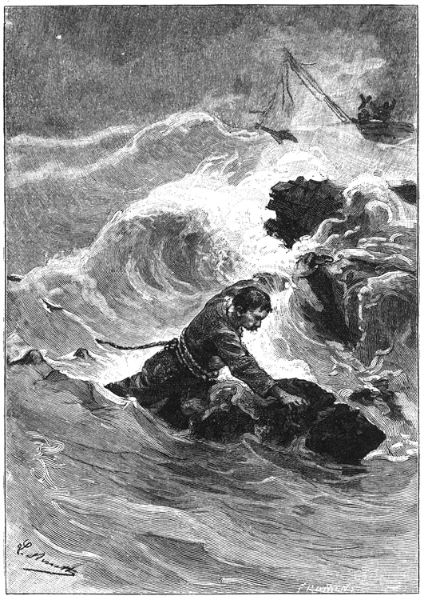Er warf sich in das wüthende Meer.
Unterdessen nahten sich die Vorbereitungen ihrem Ende. Der »Franklin«, von einem Anker in der Mitte des Hafens festgehalten, hatte sich schon von den übrigen Schiffen losgemacht, deren große Zahl von der Bedeutung des Hafens von San-Diego zeugte. Der Dreimaster brauchte nicht von einem Schlepper in die offene See hinausgeführt zu werden, denn sobald der Anker gelichtet war, genügte eine leichte Brise, das stattliche Schiff aus dem Hafen zu treiben, ohne an dem Takelwerke weitere Veränderungen vornehmen zu müssen. Der Capitän John Branican hätte sich kein schöneres Wetter, keinen günstigeren Wind wünschen können – auf der in den Strahlen der Sonne glänzenden Flüche des Meeres.
In diesem Augenblicke – es war zehn Uhr Morgens – befanden sich Alle an Bord. Keiner der Matrosen durfte an das Land gehen, man konnte sagen, die Fahrt werde um ihretwegen angetreten. Einige Kähne standen neben der Schiffstreppe und erwarteten diejenigen, welche zum letztenmal ihre Freunde und Verwandten umarmen wollten. Diese Kähne setzten sie an den Quais aus, als schon der »Franklin« die Flagge hißte. Von den Besuchern müssen besonders der Chef des Hauses Mr. William Andrew, Mrs. Branican und die Amme, welche den kleinen Wat trug, erwähnt werden. In ihrer Begleitung befanden sich Mr. Len Burker und seine Frau, Jane Burker, eine Cousine Dollys. Der Officier Harry Felton hatte keine Familie und erhielt daher auch keine Abschiedsbesuche. Die Segenswünsche William Andrew's kamen auch ihm zu und mehr verlangte er nicht, höchstens daß auch die Frau des Capitän John die ihrigen mit den seinigen vereinigt hätte, und das wußte er im voraus.
Harry Felton befand sich auf dem Vordertheile, wo ein halbes Dutzend Matrosen den Anker aufzogen. Schon schwankte der »Franklin« allmählich hin und her und seine Kette klirrte auf den Rädern. Die Flagge mit den Anfangsbuchstaben des Hauses Andrew flatterte an der Spitze des Hauptmastes, während die amerikanische Fahne an der Spitze der Brigantine ihre Sterne weithin leuchten ließ.
Auf der Commandobrücke nahm John Branican, ohne die letzten Vorbereitungen aus dem Auge zu verlieren, die Segenswünsche und die Declaration Andrew's entgegen, die meist die Ladung des Schiffes betraf. Letzterer überreichte das Schriftstück dem jungen Manne und sagte:
»Wenn die Umstände Sie zwingen, den Curs abzuändern, so haben Sie stets unser Interesse im Auge und senden Sie uns sogleich nach der ersten Landung eine Mittheilung zu. Vielleicht wird der ›Franklin‹ bei den Philippinen etwas aufgehalten werden, denn ohne Zweifel ist es nicht Ihre Absicht, durch die Meerenge von Torres zu fahren?
– Nein, Herr Andrew, erwiderte der Capitän John, ich will mich nicht mit dem »Franklin« in die gefährlichen Meere des Nordens von Australien wagen. Meinen Weg bilden die Hawaïinseln, die Mariannen, Mindanao, die Philippinen, die beiden Celebes die Meerenge von Mahkassar, um über das Javanische Meer nach Singapore zu kommen. Um von hier nach Calcutta zu gelangen, ist auch schon Alles festgesetzt. Ich glaube also nicht, daß diese Fahrt durch die Winde im Osten des Stillen Oceans beeinträchtigt werden könnte. Haben Sie mir aber irgend welche wichtige Nachricht zu telegraphiren, so bitte ich die Depesche entweder nach Mindanao zu senden, wo ich mich vielleicht aufhalten, oder nach Singapore, wo ich sicher anlegen werde.
– Gut, John. Ihrerseits bitte ich, mich sobald wie möglich von dem Course der Waren in Calcutta in Kenntnis zu setzen. Es ist möglich, daß dieser Cours meine Pläne betreffs der Ladung verändern wird.
– Ich werde es sicher thun, Herr Andrew,« erwiderte John Branican.
In diesem Augenblicke näherte sich Harry Felton und sagte:
»Capitän, wir sind bereit.
– Und die Ebbe?
– Macht sich eben fühlbar.
– Gut.«
Dann wandte er sich in überschwenglicher Dankbarkeit an William Andrew:
»Noch einmal danke ich Ihnen, Herr Andrew, daß Sie mir den Befehl über den ›Franklin‹ anvertraut haben. Ich hoffe, daß ich Ihr Vertrauen werde rechtfertigen können ...
– Daran zweifle ich keineswegs, John, erwiderte William Andrew, ich könnte die Angelegenheit meines Hauses in gar keine besseren Hände legen.«
Der Chef drückte dem jungen Manne herzlich die Hand und ging auf die Schiffstreppe zu. Mrs. Branican, hinter ihr die Amme und das Kind, trat mit Herrn und Frau Burker auf ihren Gatten zu. Der Augenblick der Trennung war gekommen und der Capitän John Branican hatte sich nur noch von seiner Frau und seinen Verwandten zu verabschieden.
Dolly war erst zwei Jahre verheiratet und das Kind war kaum neun Monate alt. Obwohl sie diese Trennung tief schmerzte, so wollte sie es doch nicht sehen lassen und hielt gewaltsam die Thränen zurück. Ihre Cousine Jane, die schwächlicher Natur war, konnte ihre tiefe Regung nicht bemeistern. Sie liebte Dolly ungemein, bei der sie oft gegen den heftigen und herrischen Charakter ihres Mannes Schutz gesucht hatte. Wenn auch Dolly ihre wahren Gefühle zu verbergen suchte, so wußte doch Jane, welch' namenloser Schmerz ihr Herz zusammenpresse. Ja, Capitän John sollte in sechs Monaten zurückkehren, aber es war doch eine Trennung – die erste seit ihrer Hochzeit – und wenn sie auch stark genug war, ihre Thränen zurückzuhalten, so weinte Jane mit für sie. Was Len Burker anbelangt, der nie eine zarte Regung gekannt, noch nie seinen strengen Blick gemildert hatte, so ging er mit den Händen in den Taschen auf und ab, indem er bei dieser Scene an wer weiß was dachte. Aber das war sicher, daß er mit den Besuchern, die ein herzliches Gefühl auf das scheidende Schiff geführt hatte, nicht eines Sinnes war.
Der Capitän John nahm seine Frau bei beiden Händen, zog sie an sich und sagte gerührt:
»Liebe Dolly, nun muß ich scheiden ... Ich werde nicht lange fort sein ... In einigen Monaten wirst Du mich wiedersehen ... Ich werde Dich sicher wiedersehen, liebe Dolly ... Hab' nur keine Furcht ... Mit einem solchen Schiffe und solchen Matrosen braucht man nichts zu fürchten ... Sei stark, wie es die Frau eines Seemannes sein muß ... Wenn ich zurückkehren werde, wird unser Wat fünfzehn Monate alt sein ... Dann ist er schon ein großer Junge ... Er wird sprechen, und das erste Wort, welches ich bei meiner Rückkehr hören werde, wird ...
– Dein Name, John, sein! ... erwiderte Dolly. Dein Name wird das erste Wort sein, das ich ihm lehren werde! ... Wir werden von Dir alle Tage ... immer sprechen ... Lieber John, schreib' mir bei jeder Gelegenheit! ... Mit welcher Ungeduld ich Deine Briefe erwarten werde! ... Schreibe mir Alles, was Du gemacht hast, was Du zu thun gedenkst ... Wie werden meine Gedanken bei Dir sein ...
– Ja, liebe Dolly, ich werde Dir schreiben ... ich werde Dich von dem Laufenden in Kenntniß setzen ... Meine Briefe werden wie das Schiffstagebuch sein, nur zärtlicher!
– Ach, John, ich bin auf dieses Meer eifersüchtig, das Dich so weit tragen soll! ... Wie beneide ich die, welche sich lieben und sich nie im Leben zu trennen brauchen! ... Aber nein, ich habe Unrecht, daran zu denken ...
– Liebe Frau, ich bitte Dich, sage Dir stets, ich unternehme diese Reise unseres Kindes wegen ... auch Deinetwegen ... um uns beide dem Glücke und dem Wohlstande zuzuführen ... Wenn sich unsere Hoffnungen eines Tages erfüllen, so werden wir uns nie mehr trennen! ...«
In diesem Augenblicke traten Len Burker und Jane heran, und der Capitän wandte sich an sie:
»Mein lieber Len, sagte er, ich übergebe Ihnen meine Frau und mein Kind ... Ich vertraue sie Ihnen an als den einzigen Verwandten, die ihnen in San-Diego zurückbleiben.
– Rechnen Sie auf mich, John, erwiderte Len Burker, indem er die Rauhheit seiner Stimme zu mildern suchte. Jane und ich sind ja da ... Es wird Dolly an nichts fehlen ...
– Auch nicht an Trost, fügte Mrs. Burker hinzu. Du weißt, wie ich Dich liebe, theure Dolly! ... Ich werde Dich recht oft besuchen ... Jeden Tag werde ich einige Stunden bei Dir zubringen ... Wir werden von John sprechen ...
– Ja, Jane, erwidert Mrs. Branican, und ich werde nicht aufhören, an ihn zu denken! ...«
Harry Felton unterbrach von Neuem das Gespräch.
»Capitän, sagte er, es ist Zeit ...
– Gut, Harry, erwiderte John, lassen Sie das Focksegel und die Brigantine hissen!«
Der Officier entfernte sich, um diesen Befehl ausführen zu lassen, was einen sofortigen Aufbruch bedeutete.
»Herr Andrew, sagte der junge Capitän, indem er sich an den Chef wandte, das Boot wird Sie jetzt mit meiner Frau und ihren Angehörigen an das Land zurückführen ... Wenn Sie wollen ...
– Sofort, John, erwiderte Andrew, also noch einmal: Glückliche Reise!
– Ja ... Glückliche Reise! ... wiederholten die anderen Besucher, die in das Boot hinabzusteigen begannen.
– Adieu, Len ... Adieu Jane, sagte John, indem er Beiden die Hand schüttelte.
– Adieu! ... Adieu! ... wiederholte Mrs. Burker.
– Und Du, liebe Dolly, mußt jetzt auch gehen ... es geht nicht anders, fügte John hinzu. Der ›Franklin‹ wird sogleich seine Fahrt antreten.«
Und wirklich schwellten sich die gehißten Segel, während die Matrosen sangen:
Da ist eine,
Eine Schöne!
Eine geht, eine geht.
Zweie kommen, zweie kommen wieder.
Da sind zwei,
Zwei Schöne.
Zweie gehen, zweie gehen.
Dreie kommen, dreie kommen wieder ...
Und so fort.
Während dieser Zeit führte der Capitän John seine Frau zu der Schiffstreppe und in dem Augenblicke, wie sie dieselbe betrat, konnte er sie nur stumm noch einmal in die Arme schließen, denn er fühlte sich unfähig, ein Wort mit ihr zu sprechen; auch sie konnte ihm nicht mehr antworten.
Und nun streckte das Kind, welches Dolly eben der Amme zurückgegeben hatte, ihm die Arme entgegen, bewegte lächelnd die kleinen Hände und plötzlich entrang sich seinen Lippen:
»Pa ... pa! ... Pa ... pa!«
»Lieber John, rief Dolly, so hast Du denn noch vor der Trennung das erste Wort gehört!«
So stark der junge Capitän auch war, so konnte er nicht die Thräne zurückhalten, welche die Wange des kleinen Wat benetzte.
»Dolly! ... sagte er leise, Adieu! ... Adieu! ...«
Dann rief er mit starker Stimme, um dieser peinlichen Scene ein rasches Ende zu machen:
Einen Augenblick darauf schaukelte das Boot auf den Wogen und nahm seine Richtung gegen den Quai, wo die Besucher nach einigen Ruderstößen landeten.
Der Capitän war jetzt ganz bei den letzten Vorbereitungen. Der Anker wurde heraufgezogen und der »Franklin«, seiner letzten Last ledig, nahm schon in seinen Segeln die Brise auf, welche die Falten derselben sogleich glättete. Das große Fock bewegte es weiter, während das Brigantinesegel das Schiff ein wenig laviren ließ, damit es nicht an ein anderes anstoße.
Auf einen neuen Befehl des Capitäns wurde das große Segel und das Focksegel aufgezogen, und zwar so schön zugleich, daß es den Matrosen alle Ehre machte. Dann nahm der »Franklin« eine Viertelwendung nach links, und nun ging es geradaus.
Die zahlreichen Zuschauer auf den Quais sahen diesen schnellen Vorbereitungen mit Bewunderung zu. Nichts nahm sich graziöser aus als dieses elegante Schiff, das der Wind sanft beugte. Während dieser Evolution mußte es sich auf wenigstens halbe Kabellänge der äußersten Spitze des Quais nähern, wo sich Andrew, Dolly, Len und Jane Burker befanden. So kam es denn, daß der junge Capitän noch einmal seine Frau, seine Freunde sehen und ihnen noch einmal ein letztes »Adieu!« zurufen konnte.
Alle antworteten diesem Worte, das sich deutlich vernehmen ließ, dieser Hand, die den Freunden noch einmal zuwinkte.
»Adieu! ... Adieu!
– Hurrah!« rief die Zuschauermenge, während Hunderte von Sacktüchern ihm zuwinkten.
Wie doch Alle John Branican liebten! War er nicht eines jener Kinder, auf welche die Stadt so stolz war? Ja, Alle würden ihn bei seiner Rückkehr wieder auf den Quais erwarten!
Der »Franklin«, der schon an dem Leuchtthurme vorüber fuhr, mußte noch einmal eine leichte Wendung nach links machen, um einem Postdampfer, der eben in den Hafen einfuhr, auszuweichen. Die beiden Schiffe grüßten einander mit den Fahnen der Vereinigten Staaten.
Auf dem Quai sah Mrs. Branican unbeweglich dem »Franklin« nach, der bei einer frischen Brise aus Nordost immer mehr verschwand. Sie wollte ihm nachsehen, so lange sein Takelwerk über der Islandspitze sichtbar wäre.

Und nun streckte das ... ihm die Arme entgegen.
Aber der »Franklin« hatte bald die Inseln Coronado außerhalb der Bucht erreicht. Noch einmal zeigte er die Hausflagge an der Spitze des Hauptmastes ... dann verschwand er.
»Adieu, lieber John ... Adieu! ...« sagte Dolly leise.
Warum ließ sie eine unerklärliche Ahnung nicht sagen: »Auf Wiedersehen!«
Nun müssen wir genauer Mrs. Branican skizziren, da sie in dieser Geschichte mehr in den Vordergrund tritt.
Um jene Zeit zählte Dolly (eine Abkürzung aus Dorothea) einundzwanzig Jahre. Sie war von amerikanischer Abstammung. Aber ohne ihre Ahnen sehr weit zu verfolgen, hätte man bald jene Generation gefunden, die sie mit der spanischen oder mexikanischen Rasse verband, aus der die besten Familien des Landes hervorgegangen waren. Ihre Mutter wurde in San-Diego geboren und diese Stadt bestand schon in der Zeit, als Nieder-Californien noch zu Mexiko gehörte. Die große Bucht, die vor drei und einem halben Jahrhundert von dem spanischen Seefahrer Juan Rodriguez Cabrillo entdeckt worden war, hieß zuerst San Miguel, und nahm den neuen Namen im Jahre 1602 an. Dann vertauschte im Jahre 1846 diese Provinz die Tricolore mit dem Sternenbanner der Konföderation und seit dieser Zeit gehörte sie definitiv zu den Vereinigten Staaten.
Von mittlerer Gestalt, ein Gesicht, das zwei große schwarze Augen außerordentlich belebten, ein südlicher Typus, üppiges, braunes Haar, die Hand und die Füße ein wenig stärker, als man sie sonst bei der spanischen Rasse zu sehen gewohnt ist, ein sicherer, aber graziöser Gang, eine Physiognomie, die ebenso von energischem Charakter wie von Herzensgüte zeugte – das war Mrs. Branican. Sie war eine jener Frauen, die man nicht mit gleichgiltigem Blicke ansieht, denn vor ihrer Verheiratung galt Dolly im wahren Sinne des Wortes als eines der schönsten Mädchen von San-Diego, wo doch sicher die Schönheit nicht selten ist. Sie war ernst, überlegend und hatte einen klaren Geist, moralische Eigenschaften, welche die Ehe sicher in ihr nur noch weiterentwickeln konnte.
O, was lag daran, wie es auch immer kommen würde! Dolly würde, Mrs. Branican geworden, schon ihre Pflichten kennen. Da sie das Leben offen und nicht durch trügerisches Glas gesehen hatte, so besaß sie muthigen Sinn und festen Willen. Die Liebe, welche ihr der Gatte einflößte, machte sie für die Erfüllung ihrer Aufgabe noch entschlossener. Im Nothfalle würde sie, und das ist keine hohle Redensart, für John ihr Leben hingeben, wie John das seinige für sie, wie beide es für ihr Kind hingeben würden. Sie liebten dieses Kind, das soeben zum erstenmal »Papa« gesprochen hatte, als der junge Capitän sich von seiner Mutter und ihm trennte. Die Aehnlichkeit des kleinen Wat mit seinem Vater war schon eine frappirende, durch die Gesichtszüge wenigstens, denn er hatte das südliche Kolorit des Teints seiner Mutter. Da er von kräftigem Körperbau war, hatte er nichts von den Kinderkrankheiten zu fürchten. Uebrigens wurde er so sorgsam gehütet ... Ach, welche Zukunftsträume hatte nicht schon die Phantasie des Vaters und der Mutter für das kleine Wesen gesponnen, dessen Leben erst begonnen hatte!
Gewiß wäre Mrs. Branican die glücklichste der Frauen gewesen, wenn die Stellung Johns ihm erlaubt hätte, das Seemannsleben aufzugeben, dessen kleinster Unfall sie trennen konnte. Aber in dem Augenblicke, wo ihm das Kommando des »Franklin« übertragen worden war, wie hätte sie da den Gedanken haben können, ihn zurückzuhalten? Und dann, mußte er nicht auf den Lebensunterhalt der Familie bedacht sein, die sich wahrscheinlich nicht auf das einzige Kind beschränken würde? Die Mitgift Dollys reichte ja kaum für das Nothwendigste des kleinen Hausstandes aus. Gewiß konnte John Branican auf das Vermögen rechnen, das der Onkel seiner Nichte hinterlassen würde, und es hätten schon eigenthümliche Zustände zusammentreffen müssen, wenn dieses Vermögen ihm entgehen sollte, da doch Mr. Edward Starter, fast ein Sechzigjähriger, keine anderen Erben hatte als Dolly. In der That stand auch Jane Burker, die dem mütterlichen Familienzweige angehörte, in keiner verwandtschaftlichen Beziehung zu dem Onkel Dollys. Sie war also reich ... aber es konnten wohl zehn und zwanzig Jahre verfließen, bevor sie in den Besitz dieser Erbschaft kam. So mußte denn John Branican arbeiten, wenn ihm nicht vor der Zukunft bangen sollte. Auch war er fest entschlossen, für das Haus Andrew in See zu stechen, umsomehr jetzt, wo er den »Franklin« befehligte und ihm ein Antheil an dem Ertrage der Fahrt zugesichert war. Da nun der Seemann auch zugleich ein tüchtiger Kaufmann war, so konnte man schon mit Bestimmtheit sagen, daß er vor dem Antritte der Erbschaft Onkel Starter's einen gewissen Grad von Wohlstand erreicht haben würde.
Nun ein Wort über diesen Amerikaner, einen Amerikaner im wahrsten Sinne des Wortes!
Er war der Bruder des Vaters Dollys und folglich der rechtmäßige Onkel des Mädchens, das Mrs. Branican geworden war. Dieser Bruder war fünf bis sechs Jahre älter und hatte ihn sozusagen aufgezogen, denn beide waren Waisen. Starter der Jüngere hatte für ihn auch stets ein lebhaftes Gefühl der Dankbarkeit gehegt. Unter der steten Gunst des Glückes kam er zu Reichthum, während Starter der Aeltere sich gewöhnlich auf Wegen verlor, die selten zum Ziele führten. Wenn er auch in die Ferne zog, um durch Ankauf und Urbarmachung weiter Ländereien im Staate Tennessee glücklich zu speculiren, so war er doch mit seinem Bruder in Verbindung, den die Geschäfte in den Vereinigten Staaten zu New-York zurückhielten. Als dieser Witwer wurde, ließ er sich in San-Diego nieder, der Geburtsstadt seiner Frau, wo er starb, als die Heirat Dollys mit John Branican schon eine beschlossene Sache war. Die Hochzeit wurde nach Ablegung der Trauer gefeiert und der junge Haushalt hatte weiter keine Unterstützung als das Wenige, was Starter der Jüngere hinterlassen hatte.
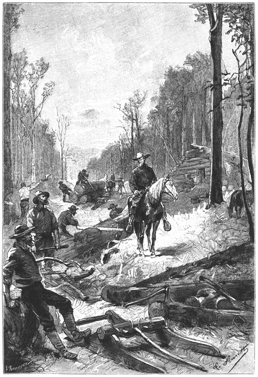... um durch Urbarmachung weiter Ländereien in Tennessee glücklich zu speculiren.
Kurze Zeit darauf kam nach San-Diego ein Brief, der an Dolly Branican adressirt war und von Starter dem Aelteren kam; das war das erstemal, daß er seiner Nichte schrieb, und es sollte auch das letztemal sein.
Obwohl Starter weit von ihr war und obwohl er sie nie gesehen hatte, so vergaß er doch nicht, daß er eine Nichte hatte, die leibliche Tochter seines Bruders. Wenn er sie nie gesehen hatte, so war der Grund der, weil Starter der Jüngere und Starter der Aeltere nicht mehr miteinander zusammengekommen waren, seitdem letzterer eine Frau genommen hatte, und weil der jüngere Bruder zu Nashville, dem entlegensten Theile von Tennessee, lebte, während sie in San-Diego wohnte. Nun, Tennessee und Kalifornien liegen ungefähr einige hundert Meilen auseinander, die der Onkel in keinem Falle zurücklegen wollte. Wenn daher dieser die Reise viel zu anstrengend fand, seine Nichte zu besuchen, so fand er es ebenso sehr langweilig, wenn ihn seine Nichte besuchen würde, und er ersuchte sie, ihn nicht zu belästigen.
Dieser Mensch war wirklich ein Bär, nicht einer jener amerikanischen Bären, die Krallen und einen Pelz haben, aber einer jener menschlichen, die fern von jedem gesellschaftlichen Leben in der Wildniß hausen.
Das sollte übrigens Dolly keine Sorge bereiten. Sie war also die Nichte eines Bären, gut! Aber dieser Bär besaß das Herz eines Onkels. Er vergaß nicht, was er seinem Bruder verdankte, und die einzige Tochter seines Bruders sollte die Erbin seines Vermögens sein.
Starter fügte hinzu, daß dieses Vermögen schon werth sei, eingeheimst zu werden, denn es belief sich damals auf fünfhunderttausend Dollars (über eine Million Gulden) und mußte sich noch vergrößern, da die Urbarmachung in dem Staate Tennessee ungemein prosperirte. Da dasselbe in Ländereien und Vieh bestand, so wäre es etwas Leichtes, es flüssig zu machen; man würde es zu einem vortheilhaften Preise losschlagen, und die Käufer würden sicher nicht ausbleiben.
Es war zwar ein wenig derb gesagt, aber das ist den eingebornen Amerikanern einmal eigen. Das Vermögen sollte ganz Mrs. Branican oder ihren Kindern zufallen. Sollte Mrs. Branican ohne directe oder andere Nachkommen sterben, so würde das Vermögen dem Staate anheimfallen, was dieser sehr gern nehmen würde.
Noch zwei Dinge:
1. Starter war ledig und würde es auch bleiben. »Die Dummheit, welche man gewöhnlich zwischen zwanzig und dreißig Jahren macht, würde er auch mit sechzig Jahren nicht machen,« war eine gewöhnliche Redensart seines Briefes. Nichts könnte das Vermögen von der Bestimmung abbringen, die er festgesetzt habe, und dasselbe würde ebenso sicher in den Haushalt Branican fließen, wie sich der Mississippi in den Golf von Mexiko ergießt.
2. Starter werde alle Anstrengungen machen – übermenschliche Anstrengungen – um seine Nichte so viel wie möglich zu bereichern. Er werde versuchen, hundert Jahre alt zu werden, und deshalb werde man ihm wohl nicht zürnen, wenn er bis zum letzten Faden hartnäckig bleibe.
Endlich ersuchte Starter Mrs. Branican – er befahl es ihr sogar – ihm nicht zu antworten. Uebrigens wären kaum Communicationsmittel zwischen den Städten und der Wildniß vorhanden, die er da hinten in Tennessee bewohne. Was ihn betreffe, so würde er nicht mehr schreiben, höchstens, daß er gestorben wäre, und dann wäre der Brief eigentlich auch nicht von ihm.
So lautete der eigenthümliche Brief, den Mrs. Branican erhielt. Daß sie die Universalerbin, die gesetzliche Erbin ihres Onkels werden sollte, das war nicht zu bezweifeln. Sie solle also einmal dieses Vermögen von fünfhunderttausend Dollars besitzen, das wahrscheinlich durch die unermüdliche Arbeit des Onkels noch heranwachsen soll. Aber da Starter deutlich die Absicht kund gab, hundert Jahre alt zu werden – und man weiß, daß diese Nordamerikaner ein zähes Leben haben – so hätte John Branican nicht gut gethan, seinen Seemannsstand aufzugeben. Seine Intelligenz, sein Muth, sein hilfreicher Wille würden seiner Familie wohl unterdessen jenen Wohlstand erworben haben, bevor Starter einwilligte, in das bessere Jenseits zu reisen.
So war also die Lage des jungen Haushaltes in dem Augenblicke, wo der »Franklin« durch die westlichen Theile des Stillen Oceans fuhr. Da das Verständniß des Folgenden uns auch auf die nähere Betrachtung der einzigen in San-Diego zurückgebliebenen Verwandten Dollys führt, so seien Mr. und Mrs. Burker näher ins Auge gefaßt.
Len Burker, ein geborener Amerikaner von ungefähr einunddreißig Jahren, befand sich erst seit einigen Jahren in der Hauptstadt Nieder-Californiens. Dieser Yankee Neu-Englands mit kalten Zügen und kräftigem Körperbau war von großer Entschlossenheit und ließ nie durchschauen, was er beabsichtigte, sagte nie, was er that. Er war eine jener Naturen, die hermetisch verschlossenen Häusern gleichen, deren Thüren sich vor Niemand öffnen. Aber doch war in San-Diego nicht das mindeste üble Gerede über diesen so wenig zugänglichen Menschen, bis seine Ehe mit Jane Burker ihn mit John Branican in Verwandtschaft brachte. Man wunderte sich daher nicht, daß dieser, da er keine andere Familie als die Burker besaß, ihm sein Weib und Kind anvertraute. In Wirklichkeit aber vertraute er sie nur Jane an, da er wußte, daß die beiden Cousinen eine tiefe Neigung zu einander hatten.
Es wäre gewiß ganz anders gewesen, wenn der Capitän John gewußt hätte, wer dieser Len Burker war, wenn er den Schurken durchschaut hätte, den dieser so gut hinter einer undurchdringlichen Maske zu verbergen wußte, mit welcher Gleichgiltigkeit er die socialen Convenienzen, die Achtung vor sich selbst, die Rechte Anderer behandelte. Getäuscht durch sein einnehmendes Aeußere, durch eine Art magnetischer Kraft, die er auf sie ausübte, hatte Jane ihm vor fünf Jahren ihre Hand in Boston gereicht, wo sie mit ihrer Mutter wohnte, die kurze Zeit darauf starb, was für sie von schlimmsten Folgen war. Die Mitgift Janes und das mütterliche Erbtheil hätten für den Lebensunterhalt der beiden Gatten genügt, wenn Len Burker ein Mensch gewesen wäre, der auf geraden und nicht auf Abwegen ging. Nachdem er theilweise das Vermögen seiner Frau durchgebracht, beschloß Len Burker, da sein Credit in Boston ungemein gelitten hatte, diese Stadt zu verlassen. Auf die andere Seite Amerikas würde ihm sein zweifelhafter Ruf kaum folgen, und die neuen Länder würden ihm genug neue Chancen bieten, die er in Neu-England nicht mehr finden konnte.
Jane, die jetzt ihren Gatten kannte, war glücklich, Boston verlassen zu können, und willigte mit Freuden in diese Uebersiedlung ein; hoffte sie doch auch, die einzige Verwandte, die ihr übrig geblieben war, zu finden. Alle beide ließen sich in San-Diego nieder, wo Dolly und Jane sich wiederfanden. Uebrigens hatte Len Burker in den drei Jahren, die er in dieser Stadt zubrachte, noch keine Veranlassung zum Verdachte gegeben, so geschickt wußte er sich zu verstellen.
Derart waren die Umstände, welche die Vereinigung der beiden Cousinen herbeigeführt hatten in einer Zeit, wo Dolly noch nicht Mrs. Branican war. Die junge Frau und das Mädchen schlossen sich eng aneinander. Obwohl es schien, als ob Jane eine gewisse Herrschaft über Dolly ausübte, so war doch gerade das Gegentheil der Fall. Dolly war stark, Jane schwach, und das Mädchen wurde bald die Stütze der jungen Frau. Als die Hochzeit Dollys mit John Branican eine beschlossene Sache war, da fühlte sich Jane überglücklich, weil es eine Heirat war, die nicht der ihrigen gleichzukommen schien. Wie viel Trost hoffte sie bei den jungen Eheleuten zu finden, wenn sie ihnen das Geheimniß ihrer Leiden mittheilen wollte!
Inzwischen wurde die Lage Len Burker's immer ernster. Seine Geschäfte gingen nicht, und das Wenige, was von dem Vermögen seiner Frau nach der Abreise von Boston übrig blieb, war bald geschwunden. Dieser Mann, ein Spieler oder vielmehr ein wahnsinniger Speculant, war einer jener Leute, die Alles aus den Zufall setzen und Alles nur von diesem erwarten wollen. Ein solches Temperament, das jeder Eingabe der Vernunft widerstand, konnte und mußte nur zu traurigen Resultaten führen.
Nach seiner Ankunft in San-Diego hatte Len Burker eine Kanzlei in der Fleet-Street eröffnet, eines jener Comptoirs, die den Ausgangspunkt guter oder schlechter Handlungen bilden. Gewissenlos bezüglich der Mittel, welche er anwandte, geschickt, Alles zu verdrehen und das Gut Anderer als das seinige anzusehen, warf er sich bald in Hunderte von Speculationen, die immer mehr das Licht zu scheuen hatten. In der Zeit, wo diese Geschichte beginnt, war Len Burker fast auf dem Trockenen, und diese Verlegenheit spiegelte sich auch in seinem Haushalte ab. Aber er wußte Alles geheimzuhalten, und da er noch über einen gewissen Credit verfügte, so verwendete er das geborgte Geld immer wieder zu neuen Speculationen.
Aber ein solches Vorgehen mußte schließlich zu einer Katastrophe führen. Die Stunde war nicht mehr fern, wo die Reclamationen von allen Seiten herbeiströmen mußten. Vielleicht würde dieser Yankee, der nach Westamerika gekommen war, keinen anderen Ausweg mehr haben, als San-Diego zu verlassen, wie er Boston verlassen hatte. Und doch hätte in dieser intelligenten Stadt, deren Fortschritte sich von Jahr zu Jahr wahrnehmen ließen, ein ehrlicher Mensch hundertmal Gelegenheit gehabt zu reussiren. Doch dazu gehörte eben das, was Len Burker nicht besaß, nämlich Ehrlichkeit und Intelligenz.
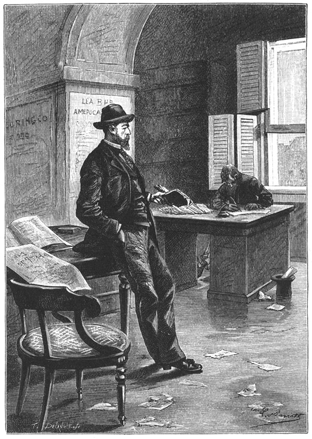... hatte Len Burker eine Kanzlei eröffnet.
Wir müssen noch ein wenig dabei verweilen, warum weder John Branican oder Mr. William Andrew, noch sonst Jemand etwas von dem Treiben Len Burker's ahnte. In der Geschäftswelt wußte man nicht, daß dieser Abenteurer – gefiele es dem Himmel, daß er nur diesen Namen verdient hätte – vor seinem Abgrunde stehe. Und selbst wenn die drohende Katastrophe eintrat, würde man ihn nur als einen Menschen ansehen, der vom Glücke weniger begünstigt war, und nicht als einen jener Leute, die sich auf alle nur mögliche Weise zu bereichern suchen. Ohne daß John Branican für ihn irgend eine besondere Sympathie gehabt hätte, so hatte er doch nie das geringste Mißtrauen gegen ihn gehegt, so daß er auch fest darauf vertraute, Burker werde während seiner Abwesenheit für seine Frau in bester Weise sorgen, und wenn Dolly sich irgendwie genöthigt sehen würde, bei ihm Zuflucht zu suchen, daß er ihr jeden Schutz angedeihen lassen werde. Jenes Haus war ihr stets offen und sie würde dort nicht nur bei einer Freundin, sondern auch bei einer Schwester Aufnahme finden.
In diesem Punkte war den Gefühlen Jane Burker's vollständig zu trauen, denn die Freundschaft, die sie für ihre Cousine hegte, war eine wirklich aufrichtige. Weit entfernt, die Freundschaft, welche die beiden Frauen vereinigte, zu tadeln, hatte sie Len Burker sogar gefördert, sicher in der Hoffnung auf gewisse Vortheile, welche ihm diese Verbindung einbringen würde. Er wußte übrigens, daß Jane nie etwas von dem, was sie nicht sagen sollte, ausplaudern, daß sie sich über ihre eigene Lage reservirt halten und nichts sagen würde von den Verlegenheiten, in denen sich ihr Hausstand befindet. Darüber würde Jane schweigen und auch ihm würde darüber nie ein Vorwurf entschlüpfen.
Wir müssen eben noch einmal sagen, daß die Frau ganz unter seinem Einflusse stand, obwohl sie ihn für einen gewissenlosen Mann hielt, der nach dem Verluste seines wenigen moralischen Sinnes zu Allem fähig war. Wie hätte sie ihn nach so vielen Enttäuschungen noch schätzen können? Aber – und man kann dies nicht oft genug hervorheben – sie fürchtete ihn und sie folgte ihm auf den Wink, selbst wenn seine Sicherheit ihn in den entlegensten Theil der Welt verschlug. Das that sie aber nur aus Achtung vor sich selbst, denn sie wollte um keinen Preis der Welt Jemanden das Elend in ihrem Hause sehen lassen, noch je der Cousine ihren Schmerz anvertrauen, den diese vielleicht ahnte, auch ohne ins Vertrauen gezogen zu werden.
Jetzt ist das Verhältniß zwischen John und Dolly Branican einerseits und das Len und Jane Burker's andererseits zur Genüge auseinandergesetzt, um das Folgende gründlich zu verstehen. In welcher Weise hatte sich dies so unerwartet und plötzlich fügen können? Niemand wäre im Stande gewesen, es zu ergründen.
Vor dreißig Jahren zählte Nieder-Californien – ungefähr ein Drittel des Staates Kalifornien – kaum fünfunddreißigtausend Einwohner, während sich die Bevölkerung jetzt auf mehr als hundertfünfzigtausend Menschen beläuft. In jener Zeit waren die Ländereien dieser Provinz noch ganz unbebaut und schienen nur für die Viehzucht geeignet zu sein. Wer hätte ahnen können, welche Zukunft einer so verlassenen Gegend vorbehalten sei, wo sich die Communicationsmittel zu Lande auf eine Straße, zu Wasser auf eine Dampfschifflinie beschränkten, die sich der Küste entlang zog?
Und doch war seit dem Jahre 1769 der Keim einer Stadt einige Meilen im Innern des Landes vorhanden, im Norden der Bucht von San-Diego. Auch kann die zur Thatsache gewordene Stadt in der Geschichte des Landes sich rühmen, die älteste Ansiedlung in Kalifornien zu sein.
Als der neue Kontinent, der mit dem alten Europa durch einfache coloniale Bande verbunden war, sich gegen die Festerknüpfung derselben aussprach, so rissen auch diese. Die Vereinigten Staaten von Nordamerika erhoben die Fahne der Unabhängigkeit und England behielt nichts weiter als den Fetzen davon, nämlich Dominion und Columbian, deren Vereinigung mit der Conföderation auch in absehbarer Zeit zu erwarten ist. Was die Freiheitsbewegung anbelangt, so hatte sie zuerst in der Bevölkerung der mittleren Staaten Platz gegriffen, die nur einen Gedanken, nur ein Ziel hatte: »Los von dem Mutterlande!«
Damals schmachtete Kalifornien nicht unter dem angelsächsischen Joche, denn es gehörte zu Mexiko und befand sich bei diesem Staate bis 1846. In diesem Jahre wurde San-Diego, nachdem es sich freigemacht hatte, um der republikanischen Konföderation beizutreten, das, was es sein sollte – amerikanisch.
Der Golf von San-Diego ist prächtig. Man könnte ihn mit dem von Neapel vergleichen, aber der Vergleich würde vielleicht besser sein mit denen von Vigo oder Rio de Janeiro. Zwölf Meilen Länge und zwei Meilen Breite geben ihm genügenden Spielraum für die Bergung einer Handelsflotte und die Uebungen einer Escadre, denn er wird auch als Militärhafen angesehen. Er hat eine ovale Form, ist im Westen ein wenig zwischen den Inseln Island und Coronado offen und liegt nach allen Seiten geschützt. Die Seewinde haben Achtung vor demselben, der Sturm des Stillen Oceans berührt kaum seine Oberfläche, die Schiffe fahren ohne Mühe aus demselben. Er ist der einzige sichere und praktische Hafen, günstig als Zufluchtsort, den die Westküste südlich von San-Francisco und nördlich von San-Quentin bietet.
Bei so vielen natürlichen Vortheilen mußte sich die alte Stadt in ihrer Ausbreitung bald beengt finden, denn schon die Baracken zur Unterbringung einer Abtheilung Kavallerie waren außerhalb derselben erbaut worden. Dank der Initiative Horton's, dessen Intervention übrigens ein vorzügliches Geschäft war, wurde ein neuer Stadttheil errichtet, der sich jetzt zu der eigentlichen Stadt erhoben hat und sich an dem sanften Hügel der Bucht hinaufzieht. Nun wuchs Alles mit der rühmlichst bekannten amerikanischen Schnelligkeit empor, indem eine Million Dollars, die in den Boden gesäet wurden, Privathäuser, öffentliche Gebäude, Villen, Handelshäuser entstehen ließ. Im Jahre 1885 zählte San-Diego schon fünfzehntausend Einwohner – heute dreißigtausend. Seine erste Eisenbahn datirt aus dem Jahre 1881. Jetzt setzen die Atlantic- and Pacificbahn, die Southern-Californiabahn, die Southern-Pacificbahn die Stadt mit dem Kontinente in Verbindung, während zugleich das Pacific Coast-Steamship sie in regem Verkehr mit San-Francisco hält.
Sie ist eine hübsche, bequeme, luftige und gesunde Stadt, in einem Klima, das man nicht erst zu loben braucht. In der Umgebung ist das Land von außerordentlicher Fruchtbarkeit: Der Weinstock, die Olive, der Orangenbaum, der Citronenbaum tragen neben den Obstbäumen, Früchten und Gemüsen des Landes reichliche Frucht. Man konnte diese Gegend eine Normandie, verschmolzen mit einer Provence, nennen.
Was die Stadt San Diego selbst anbelangt, so ist sie mit jener malerisch leichten Orientirung, jener Phantasie erbaut, die für die Gesundheit wichtig ist, wenn man sich nicht durch die Steigung des Terrains behelligt fühlt. Es giebt dort Plätze, Squares, breite Straßen, ein wenig Schatten überall, und ist auf die Gesundheit der Bevölkerung Rücksicht genommen.
Wenn überhaupt der Fortschritt in jener Richtung hin sich nicht in einer modernen Stadt geltend machen sollte, besonders wenn diese Stadt amerikanisch ist, wo sollte man denselben dann suchen? Da ist Gasbeleuchtung, Telegraph, Telephon, kurz, die Bewohner haben nur ein Zeichen zu geben, um Licht zu haben, ihre Depeschen auszutauschen, um miteinander von einem Stadtviertel zu dem anderen zu sprechen. Es giebt dort sogar mehr als hundertfünfzig hohe Mastbäume, die elektrisches Licht auf die Straßen der Stadt werfen. Wenn man noch nicht die Milch durch Luftdruck von der Great Milke Company in die Häuser befördern läßt, wenn die beweglichen Fußwege, die sich mit einer Schnelligkeit von vier Meilen in einer Stunde fortbewegen, sich noch nicht dort befinden, so ist das sicher ... nur eine kleine Verzögerung.
Dazu kommen noch die verschiedenen Institute, die den Handel und Verkehr beleben: ein Zollamt, in dem der Verkehr mit jedem Tage wächst, zwei Banken, eine Handelskammer, eine Auswanderungsgesellschaft, große Comptoirs, zahlreiche Kanzleien, wo die großartigsten Holz- und Mehlgeschäfte abgeschlossen werden, Kirchen für die verschiedenen Religionen, drei Marktplätze, ein Theater, ein Gymnasium, drei höhere Schulen, Ruß County, Court House, Maronic and old fellows, die für die armen Kinder bestimmt sind, endlich zahlreiche andere Institute, wo die Studien bis zur Erwerbung eines Diploms an der Universität führen – und nun kann man über die Zukunft einer noch so jungen Stadt urtheilen, die für Alles sorgt, in moralischer wie in materieller Beziehung. Hat sie keine Zeitungen? Ja! Sie besitzt drei Tagesblätter, unter anderen den »Herald«, und jedes dieser Blätter giebt auch eine Wochenausgabe heraus. Müssen die Touristen befürchten, kein bequemes Unterkommen zu finden? Ohne die Hôtels niedrigen Ranges zu zählen, stehen ihnen drei prächtige Gebäude zur Verfügung, das Horton-House, das Florence-House, das Gerard-Hôtel mit seinen hundert Zimmern, während sich an dem gegenüberliegenden Ufer des Golfs inmitten von reizenden Villen in wunderbarer Lage ein neues Hôtel erhebt, das nicht weniger als fünf Millionen Dollars gekostet hat.
Von all den Ländern des alten Continents, wie von allen Städten des neuen, woher die Reisenden in diese kleine, lebhafte Hauptstadt Südcaliforniens kommen, werden sie gastfreundlich aufgenommen, und noch Niemand hat es bereut, diese Reise angetreten zu haben – es sei denn, daß sie ihm zu kurz gewesen wäre.
San-Diego ist eine lebhafte, bunte, geschäftige Stadt, wie die meisten amerikanischen Städte. Wenn sich das Leben an der Bewegung kenntlich macht, so kann man sagen, daß man dies dort im wahrsten Sinne des Wortes sieht. Die Zeit reicht kaum für das Geschäft hin. Wenn aber die Bewegung ruht, dann laufen die Stunden nur zu langsam vorüber!
Dies fühlte Mrs. Branican nach der Abfahrt des »Franklin«. Seitdem sie verheiratet war, nahm sie an den Arbeiten ihres Gatten theil. Selbst als er nicht auf der See war, beschäftigten ihn seine Beziehungen zu dem Hause Andrew vollauf. Außer den Handelsgeschäften, an denen er sich betheiligte, hatte er den Bau des Dreimasters zu beaufsichtigen, dessen Commando er übernehmen sollte. Mit welchem Eifer, man kann sagen, mit welcher Liebe er die kleinsten Einzelheiten überwachte! Er benahm sich dabei wie ein Hausherr, der sich ein Haus bauen läßt, um sein Leben darin abzuschließen. Und noch mehr, denn das Schiff ist nicht nur das Haus, es ist nicht nur ein Werkzeug des Glückes, es ist ein Holz- und Eisenbau, dem das Leben so und so vieler Menschen anvertraut wird.
Oft begleitete Dolly den Capitän John zur Werfte. War dieses Hämmern, Schlagen, Bohren, diese Mastbäume, die auf der Erde lagen und warteten, bis sie ihren Platz einnahmen, die Arbeit im Innern des Schiffes, das Takelwerk, die Cabinen – war dies Alles nicht von großem Interesse? Das Leben Johns und seiner Gefährten hatte der »Franklin« gegen die wilden Stürme des Stillen Oceans zu vertheidigen! Auch gab es nicht ein Brett, dem Dolly nicht im Gedanken einen Segenswunsch zuflüsterte, nicht einen Hammerschlag, der nicht in ihrem Herzen wiederhallte. John erklärte ihr die ganze Arbeit, sagte ihr die Bestimmung eines jeden Holzstückes oder Metalltheiles und machte ihr den Bauplan verständlich. Sie hatte dieses Schiff gern, dessen Seele, dessen Herr, nach Gott, ihr Gatte werden sollte! ... Und manchmal fragte sie sich, warum sie nicht mit dem Capitän fahre, warum er sie nicht mitnehme, warum sie nicht die Gefahren des Meeres theile, warum sie der »Franklin« nicht zugleich mit ihm in den Hafen von San-Diego zurückbringen könne? Ja, sie hatte sich nicht von ihrem Gatten trennen wollen! ... Und ist das Leben dieser Seeleute, die jahrelang zusammen herumfahren, nicht seit Langem in Fleisch und Blut der Bevölkerung des Nordens auf dem alten wie auf dem neuen Continente übergegangen?
Aber es war ja Wat da, das kleine Kind, und Dolly konnte es nicht der Pflege einer Amme überlassen, die doch nicht seine Mutter war ... Nein! Konnte sie es mitnehmen und es einer für so kleine Wesen gefährlichen Reise aussetzen? ... Nein! ... Sie wollte bei diesem Kinde bleiben und sein Leben schützen, nachdem sie es ihm ja gegeben, es mit Liebe und Zärtlichkeit pflegen, damit es dem heimkehrenden Vater gesund entgegenlächeln könne. Uebrigens sollte John nur sechs Monate fernbleiben, denn sobald der »Franklin« seine Ladung in Calcutta erneuert hätte, würde er wieder zurückkehren. Und geziemt es sich nicht, daß die Frau eines Seemannes sich an jene unabänderlichen Trennungen gewöhne, die der Stand des Gatten mit sich bringt?
Sie mußte daher nachgeben und Dolly gab auch nach. Aber nach der Abfahrt Johns wäre ihr das Leben öde und leer erschienen, wenn sie nicht das Kind gehabt, wenn sie nicht auf dasselbe ihre ganze Liebe übertragen hätte.
Das Haus John Branican's stand auf einer jener Anhöhen, welche die nördliche Grenze des Golfs bilden. Es war eine Art Villa, inmitten eines kleinen Gartens von Orangen- und Olivenbäumen, den ein einfaches hölzernes Gitter umgab. Das Erdgeschoß mit der kleinen Gallerie, auf welche die Thüre und die Fenster des Salons und des Speisezimmers hinausgingen, dann der Balcon, der den größten Theil der Façade einnahm, des nett geschnitzte Dach, welches drei Fuß über das Stockwerk hinausragte, dies Alles bildete die einfache und reizende Behausung des Capitäns. Im Erdgeschosse befanden sich der Salon und das Speisezimmer, beide bescheiden möblirt; im ersten Stocke zwei Zimmer, das der Mrs. Branican und des Kindes; im Hintertheile des Hauses war ein kleiner Anbau für die Küche und das Dienstbotenzimmer. Prospect-House hatte eine herrliche Lage gegen Süden: Man konnte die ganze Stadt und den Golf bis zu den Gebäuden auf der Lomaspitze überblicken. Wenn das Haus auch von dem Leben und Treiben entfernt lag, so wurden die Bewohner doch wieder durch die herrliche Lage und die schöne Aussicht entschädigt, indem zu gleicher Zeit der Südwind und der salzige Geruch des Stillen Oceans diesen Besitz umgaukelten.
Hier nun brachte Dolly die langen Stunden zu. Die Amme des Kindes und eine Dienerin genügten vollständig für die Bedienung des Hauses. Die einzigen Besucher waren Herr und Frau Burker, selten kam Len, oft Jane. William Andrew besuchte, seinem Versprechen gemäß, öfter die junge Frau, indem er wünschte, ihr alle Nachrichten über den »Franklin« mitzutheilen, die auf directem oder indirectem Wege anlangen würden. – Bevor die Briefe an ihre Adresse gelangen können, berichten bereits die Schiffzeitungen von den Begegnungen der Schiffe, ihren Aufenthalten in den Hafenplätzen und anderen Dingen mehr, welche die Rheder und Besitzer interessiren. Dolly würde also auf dem Laufenden gehalten werden. Was Bekannte, Gesellschaften, Besuche in der Nachbarschaft des Prospect-House anbelangt, so hatte sie dieselben nie gesucht. Ihr Leben füllte nur ein Gedanke aus; selbst wenn das Haus voller Besucher gewesen wäre, so wäre es ihr doch leer vorgekommen, weil John nicht da war; und es würde auch bis zu seiner Rückkehr leer bleiben.
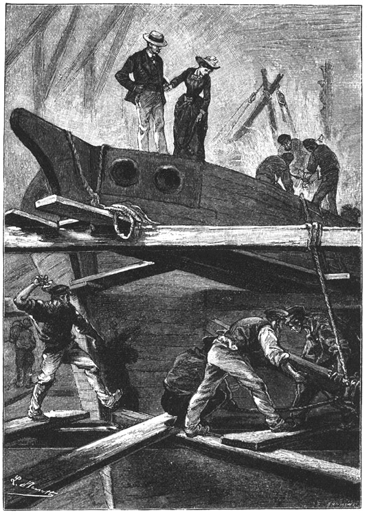Oft begleitete Dolly den Capitän John.
Welchen Schmerz litt sie die ersten Tage! Dolly verließ Prospect-House gar nicht und Jane Burker besuchte sie täglich. Beide beschäftigten sich mit dem kleinen Wat und sprachen nur von John. War Dolly allein, so saß sie gewöhnlich auf dem Balcon des Hauses und ließ ihre Blicke in die Ferne schweifen, weit über den Golf, noch weiter über die Coronadoinseln hinaus ... Sie durchdrangen die Meereslinie am Horizonte ... Der »Franklin« war schon weit ... aber sie holte ihn in ihren Gedanken ein, sie schiffte sich auf demselben ein, sie war an der Seite ihres Gatten ... Und wenn ein Schiff aus weiter Ferne in den Hafen einfuhr, da sagte sie zu sich, daß auch der »Franklin« eines Tages so erscheinen, daß er je näher, desto größer werden, daß John an Bord sein werde ...
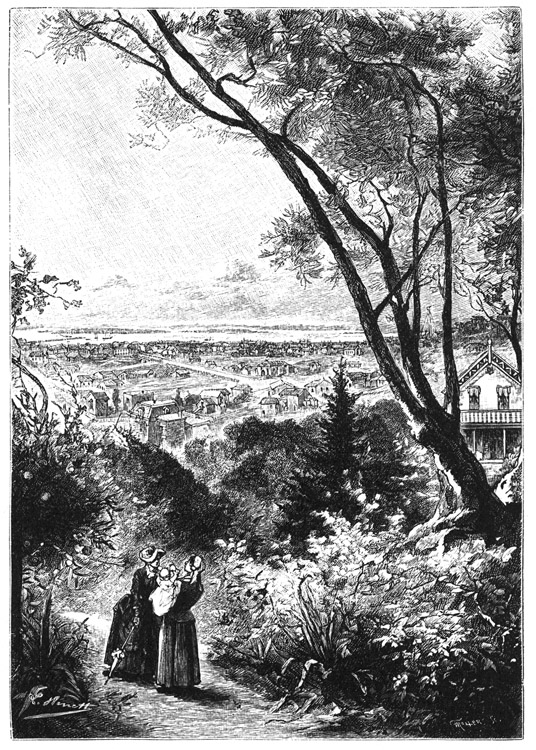Man konnte über die ganze Stadt blicken.
Unterdessen war die Gesundheit des kleinen Kindes eine ganz gute. Zwei Wochen nach der Abreise des Schiffes war das Wetter sehr schön geworden und Wat konnte das Haus verlassen. So unternahm Mrs. Branican einige Ausflüge, wobei sie die Amme mitnahm, welche das Kind trug. Man ging zu Fuß, wenn sich die Spaziergänge auf die Umgebung der Hafenstadt beschränkten, bis zu den Häusern der Altstadt. Das that dem frischen gesunden Kinde sehr wohl, und sobald die Amme stehen blieb, klatschte es mit den kleinen Händen zusammen und lachte seiner Mutter zu. Ein- oder zweimal miethete man, da ein größerer Ausflug unternommen wurde, einen Wagen in der Nachbarschaft, der sie alle drei rasch davontrug, manchesmal auch alle vier, wenn Mrs. Burker an der Partie theilnahm. Eines Tages unternahm man einen solchen Ausflug auf den Hügel Knob-Hill, welcher mit Villen besäet ist, sich hinter dem Hôtel Florence erhebt und von dem man eine herrliche Aussicht gegen Westen über die Insel hat. An einem anderen Tage besuchte man den Strand der Coronado-Bucht, an welchem sich die Meereswogen mit furchtbarem Donner brachen. Dolly berührte mit dem Fuße diesen Ocean, der ihr gleichsam ein Echo aus weiter Ferne zutrug, wo gerade ihr Gatte dahinfuhr, diesen Ocean, dessen Wogen vielleicht das Schiff eben feindlich angriffen, das tausende Meilen weit war. Sie versank in Nachdenken und sah in Gedanken das Schiff des jungen Capitäns, indem sie leise den Namen »John« aussprach.
Am 30. März, gegen zehn Uhr Morgens, saß die junge Frau auf dem Balcon, als sie Mrs. Burker auf ihr Haus zukommen sah. Jane beschleunigte ihre Schritte, indem sie ihr freudig mit der Hand zuwinkte, ein Beweis, daß sie keine schlimme Nachricht brachte. Dolly stieg sofort hinab und traf mit ihrer Cousine gerade bei der Thür zusammen.
»Was giebt es, Jane? ... fragte sie.
– Liebe Dolly, erwiderte Mrs. Burker, Du wirst eine sehr freudige Nachricht erhalten. Ich habe Dir von Mr. William Andrew mitzutheilen, daß der »Boundary«, der heute früh in San-Diego eingefahren ist, den »Franklin« begegnet hat ...
– Den »Franklin«?
– Ja, William Andrew ist soeben davon benachrichtigt worden und er traf zufällig mit mir in der Fleet Street zusammen; da er erst Nachmittags kommen kann, so bin ich hergeeilt, um Dir diese Nachricht zu bringen.
– Und hat man Nachrichten von John? ...
– Ja, Dolly.
– Welche? ... Sprich doch!
– Vor acht Tagen haben sich der »Franklin« und der »Boundary« auf dem Meere begegnet und es ist möglich gewesen, eine Correspondenz zwischen den beiden Schiffen auszutauschen!
– Ist Alles wohl an Bord?
– Ja, liebe Dolly. Die zwei Capitäne kamen einander so nahe, daß sie miteinander sprechen konnten, und das letzte Wort, welches man auf dem »Boundary« hören konnte, war Dein Name.
– O armer John! rief die junge Frau aus, indem Thränen aus ihren Augen stürzten.
– Wie glücklich bin ich, Dolly, versetzte Mrs. Burker, daß ich die Erste bin, welche Dir diese Nachricht bringt.
– Und ich danke Dir dafür, erwiderte Mrs. Branican. Wenn Du wüßtest, wie mich das glücklich macht! ... Ach, wenn ich jeden Tag erfahren würde ... mein John! ... mein lieber John! ... der Capitän des »Boundary« hat ihn gesehen ... John hat mit ihm gesprochen ... das ist wie ein Adieu, welches er mir geschickt hat!
– Ja, liebe Dolly, und ich wiederhole Dir noch einmal, es ist Alles wohl an Bord des »Franklin«.
– Jane, sagte Mrs. Branican, ich muß den Capitän des »Boundary« sprechen, er soll mir Alles haarklein erzählen ... Wo haben sich die Schiffe begegnet? ...
– Das weiß ich nicht, erwiderte Jane, aber das Schiffsbuch wird Dir Auskunft geben und der Capitän Dir Alles genau erzählen.
– Nun, Jane, ich will mich rasch anziehen, und wir gehen zusammen hin ...
– Nein ... heute nicht, Dolly, erwiderte Mrs. Burker, wir dürften nicht an Bord des »Boundary«.
– Und warum?
– Weil er erst heute früh angekommen ist und sich in Quarantaine befindet.
– Bis wann?
– Oh, nur vierundzwanzig Stunden ... Ja, das ist nur eine reine Formsache, aber Niemand darf auf das Schiff.
– Wie konnte dann Mr. William Andrew von dieser Begegnung erfahren?
– Die Nachricht hat ihm ein Zollbeamter von Seiten des Capitäns gebracht. Liebe Dolly, beruhige Dich ... es kann kein Zweifel herrschen über das, was ich Dir soeben mitgetheilt habe, und Du wirst es morgen bestätigt finden. Ich bitte Dich, habe nur einen Tag Geduld.
– Nun gut, Jane, auf morgen! Ich werde um neun Uhr bei Dir sein; wirst Du mich an Bord des »Boundary« begleiten? ...
– Sehr gern, liebe Dolly, ich werde Dich morgen erwarten, und wenn die Quarantaine vorüber ist, so wird uns der Capitän sicher empfangen.
– Nicht wahr, es ist der Capitän Ellis, ein Freund Johns? fragte Mrs. Branican.
– Ja, Dolly, und der »Boundary« gehört dem Hause Andrew.
– Also einverstanden, Jane ... ich werde morgen zur festgesetzten Stunde bei Dir sein ... aber wie lang wird mir der Tag vorkommen ... Willst Du nicht mit mir frühstücken? ...
– Wenn Du es erlaubst, liebe Dolly ... Mr. Burker kommt erst Abends nach Hause, so daß ich Dir den ganzen Nachmittag widmen kann ...
– Ich danke, liebe Jane, wir werden von John sprechen ... nur von ihm ... nur von ihm!
– Und der kleine Wat? ... Wie geht es ihm? ... fragte Mrs. Burker.
– Es geht ihm sehr gut! erwiderte Dolly, er ist lustig wie ein Vogel ... Wie wird sich sein Vater freuen, ihn wiederzusehen! ... Jane, ich möchte ihn am liebsten mit der Amme morgen mitnehmen ... Du weißt es, ich trenne mich nicht gern von meinem Kinde, nicht einmal für einige Stunden ... Ich hätte keine Ruhe.
– Du hast recht, sagte Mrs. Burker, das ist ein guter Gedanke, der Spaziergang wird dem kleinen Wat gut thun; die Witterung ist schön ... das Meer ist ruhig ... Es wird seine erste Seereise sein ... Also abgemacht?
– Abgemacht!« versetzte Mrs. Branican.
Jane blieb im Prospect-House bis fünf Uhr Abends, dann schied sie von ihrer Cousine, indem sie nochmals wiederholte, daß sie dieselbe am folgenden Tage um neun Uhr Morgens erwarten werde, um mit ihr den »Boundary« zu besuchen.
Am folgenden Tage stand im Prospect-House Alles frühzeitig auf. Das Wetter war prächtig, und die Brise, welche vom Lande kam, trieb rasch den Nebel nach dem Meere hinaus. Die Amme zog den kleinen Wat an, während Mrs. Branican Toilette machte. Man war übereingekommen, daß sie bei Mrs. Burker frühstücke. Auch begnügte sie sich mit einer einfachen Mahlzeit, was ihr erlaubte, bis Mittag zu warten, denn wahrscheinlich würde der Besuch bei dem Capitän Ellis zwei gute Stunden dauern. Hatte sie doch so viel zu fragen!
Mrs. Branican und die Amme, welche das Kind trug, verließen das Haus, als es eben an den Uhren von San-Diego halb neun schlug. Die breiten Wege der Stadt, welche von reizenden Villen und Gärten begrenzt waren, lagen bald hinter ihnen, und Dolly befand sich nun in den engeren Straßen des Handelsviertels.
Len Burker wohnte in der Fleet Street, nicht weit von der Werfte entfernt, welche der Gesellschaft der Pacific Coast-Steamship gehörte. Kurz, da sie die ganze Stadt durchgehen mußten, war dies ein förmlicher Ausflug für sie, so daß sie erst um neun Uhr in dem Hause Burker's ankamen.
Die Wohnung war einfach und gewährte mit ihren persischen Vorhängen, die fast immer geschlossen waren, einen traurigen Anblick. Len Burker, der höchstens einige Geschäftsleute empfing, hatte weiter keine Bekannte. Man kannte ihn sogar in der Fleet Street nur wenig, und seine Geschäfte hielten ihn gewöhnlich von Morgens bis Abends von dem Hause fern. Er reiste viel herum und begab sich oft nach San-Francisco in Geschäftsangelegenheiten, die er seiner Frau gegenüber nie berührte. An diesem Morgen befand er sich eben in dem Comptoir, als Mrs. Branican ankam. Mrs. Burker entschuldigte ihren Gatten, daß er sie beide nicht an Bord des »Boundary« begleiten könne, und setzte hinzu, daß er sicher an dem Dejeuner theilnehmen werde.
»Ich bin fertig, liebe Dolly, sagte Jane, nachdem sie das Kind herzlich geküßt hatte. Willst Du Dich nicht einen Augenblick ausruhen?
– Ich bin nicht müde, erwiderte Mrs. Branican.
– Brauchst Du nichts?
– Nein, Jane! ... Ich möchte nur schon bei dem Capitän Ellis sein ... Ich bitte Dich, gehen wir sogleich!«
Mrs. Burker hatte eine alte Frau zur Dienerin, eine Mulattin, welche ihr Gatte aus New-York mitgebracht hatte, als er sich in San-Diego niederließ. Diese Mulattin, Nô, war die Amme Len Burker's gewesen. Da sie schon früher in den Diensten der Familie stand, so war sie ihm sehr ergeben und duzte ihn noch immer, wie sie es gewohnt war, als er noch ein Kind war. Dieses Geschöpf, dem Len Burker die ganze Hauswirthschaft überließ, konnte sich allein eines gewissen Einflusses auf ihn rühmen. Wie oft hatte Jane unter einer Herrschaft zu leiden, die oft jede Rücksicht außeracht ließ! Aber sie unterwarf sich der Herrschaft der Mulattin, wie sie sich der ihres Mannes unterwarf. In ihrer Resignation, die nichts als Schwäche war, ließ sie Allem freien Lauf, und Nô fragte sie in keiner Hausangelegenheit um Rath.
In dem Augenblicke, als Jane fortgehen wollte, befahl ihr die Mulattin, gewiß vor Mittag zurück zu sein, weil Len Burker heimkehren werde, und sie ihn doch erwarten müßte. Er hätte übrigens noch mit Mrs. Branican in einer wichtigen Angelegenheit zu sprechen.
»Um was handelt es sich denn? fragte Dolly ihre Cousine.
– Wie kann ich das wissen, erwiderte Mrs. Burker. Komm, Dolly, komm!«
Es war keine Zeit zu verlieren. Mrs. Branican und Jane mit der Amme und dem Kinde begaben sich nach dem Quai, wo sie binnen zehn Minuten ankamen.
Der »Boundary«, dessen Quarantaine soeben aufgehoben worden war, hatte noch nicht jenen Ort des Hafens bezogen, der den heimkehrenden und ausruhenden Schiffen des Hauses Andrew bestimmt war. Er lag bei der Lomaspitze vor Anker, weshalb man über den Golf setzen mußte, um an Bord des Schiffes zu gelangen. Das war eine Ueberfahrt von ungefähr zwei Meilen, welche kleine Dampfer jede Stunde zweimal besorgten.
Dolly und Jane Burker nahmen in einem solchen Dampfer Platz, inmitten von zahlreichen Passagieren, die meistens Freunde oder Verwandte der Mannschaft des »Boundary« waren und die aufgehobene Quarantaine sofort benutzten, um sich an Bord des Schiffes zu begeben. Bald durchkreuzte der Schraubendampfer in einer schiefen Linie den Golf.
Der Golf sah bei diesem prächtigen Wetter herrlich aus: Die große Wasserfläche, im Hintergrunde die amphitheatralisch aufsteigenden Häuser San-Diegos, der Hügel, der die Altstadt beherrschte, die offene See zwischen den Spitzen von Island und Loma, das ungeheuere Hôtel von Coronado und der Leuchtthurm, der nach dem Untergange der Sonne weithin sein Licht wirft.
Der Schraubendampfer fuhr an den zahlreichen Schiffen, die zerstreut vor Anker lagen, geschickt vorüber, ebenso wie auch an den Booten oder an den auslaufenden Fischerkähnen.
Mrs. Branican saß neben Jane auf einer Bank des Hinterdecks. Die Amme hielt neben ihr das Kind in den Armen.
Wat schlief nicht und seine Augen füllten sich mit jenem schönen Lichte, das eine frische Brise zu entflammen pflegt. Er sah blühend aus mit seinen rothen Wangen und rosigen Lippen, die noch feucht waren von der Milch, welche er aus dem Busen der Amme vor Verlassen des Hauses Burker's gesogen hatte. Seine Mutter sah ihn zärtlich an und beugte sich oft über ihn, um ihn zu küssen, was der Kleine immer mit einem Lächeln erwiderte.
Aber die Aufmerksamkeit Dollys wurde bald durch den Anblick des »Boundary« gefesselt, der sich jetzt von den übrigen Schiffen deutlich abhob und seine Flaggen lustig gegen den sonnenklaren Himmel flattern ließ.
Das ganze Leben Dollys hing an diesem Anblicke. Sie dachte an John, der von einem ähnlichen Schiffe, das man einen Bruder jenes dort nennen konnte, entführt worden war. Wie sich die beiden Schiffe ähnlich sahen! Waren sie nicht Kinder desselben Hauses Andrew? Hatten sie nicht die gleiche Heimat? Waren sie nicht auf derselben Werfte erbaut worden? Dolly, ganz in Nachdenken versunken, ganz von ihrer Phantasie erfaßt, glaubte, John wäre dort auf jenem Schiffe ... daß er sie erwarte ... daß er ihr zuwinken werde ... daß sie werde in seine Arme fallen können ... sein Name war auf ihren Lippen ... sie nannte ihn ... und er antwortete, indem er den ihrigen aussprach ...
Ein kleiner Schrei ihres Kindes entriß sie den Gedanken. Ja, es war der »Boundary«, auf den sie zufuhren, und nicht der »Franklin« ... weit, weit war dieser ... Wie viele tausende Meilen trennten ihn von der amerikanischen Küste!
»Eines Tages wird er auch dort sein ... sagte sie leise, indem sie Mrs. Burker ansah.
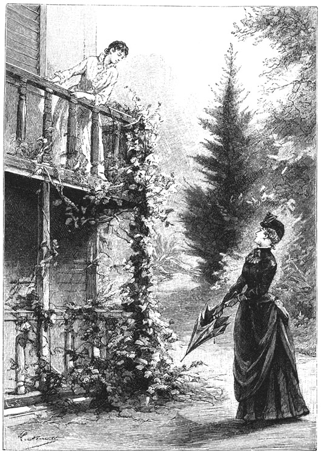... saß die junge Frau auf dem Balkon.
– Ja, liebe Dolly, erwiderte Jane, und dann wird uns John an Bord erwarten.«
Sie verstand, daß eine leichte Unruhe das Herz der jungen Frau erfaßte, als diese sie nach der Zukunft fragte.
Unterdessen hatte der Schraubendampfer in einer Viertelstunde die zwei Meilen, die den Quai San-Diegos von der Lomaspitze trennen, zurückgelegt. Die Passagiere stiegen aus, und Mrs. Branican mit Jane, der Amme und dem Kinde gingen zu Fuß. Die Entfernung bis zum »Boundary« war nur noch eine kurze.
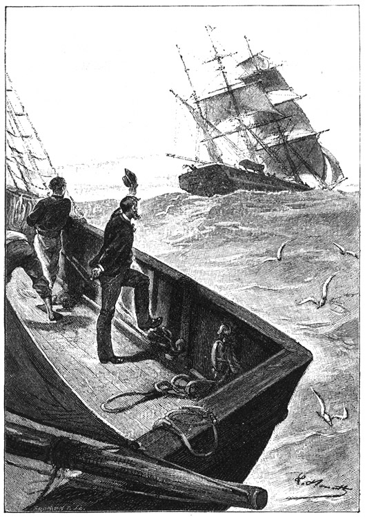Dann trennten sich die beiden Schiffe.
Gerade neben der Landungsbrücke stand unter der Aufsicht zweier Matrosen ein Boot, das die Verbindung mit dem Dreimaster vermittelte. Mrs. Branican nannte ihren Namen, und die beiden Männer stellten sich ihr zur Verfügung, sie an Bord des »Boundary« zu bringen, nachdem sie sich versichert hatte, daß Capitän Ellis sich auch dort befand.
Einige Ruderschläge genügten, und sobald Capitän Ellis Mrs. Branican erkannt hatte, eilte er zur Schiffstreppe; während sie hinaufstieg, schärfte sie der Amme ein, das Kind festzuhalten. Der Capitän führte sie auf das Verdeck, während der Officier die Vorbereitungen traf, den »Boundary« zum Quai von San-Diego zu geleiten.
»Herr Ellis, fragte sofort Mrs. Branican, ich habe gehört, daß Sie dem ›Franklin‹ begegnet sind? ...
– Ja, Mistreß, erwiderte der Capitän, und ich kann Ihnen die Versicherung geben, daß er sich wohl befindet, wie ich es auch Mr. William Andrew mitgetheilt habe.
– Haben Sie ... John gesehen?
– Der »Franklin« und der »Boundary« konnten sich einander soweit nähern, daß der Capitän Branican und ich einige Worte wechselten.
– Ja ... Sie haben ihn gesehen! ...« wiederholte Mrs. Branican, indem sie dem Capitän Ellis in die Augen sah, als hoffte sie in denselben einen Reflex des »Franklin« zu entdecken.
Mrs. Burker stellte dann einige Fragen, denen Dolly aufmerksam zuhörte, obwohl ihre Blicke weit in die Ferne schweiften.
»An jenem Tage, erwiderte der Capitän Ellis, war das Wetter sehr hübsch und der ›Franklin‹ fuhr mit vollen Segeln dahin. Der Capitän John stand, das Fernrohr in der Hand, auf dem Verdecke. Er lavirte ein Viertel, um sich dem ›Boundary‹ zu nähern, denn ich konnte von meinem Curse nicht abweichen, weil der Wind mir gerade entgegenkam.«
Mrs. Branican konnte sich die Stellung der beiden Schiffe aus den Worten des Capitäns Ellis zwar nicht ganz klar vorstellen, aber was sie sich merkte war, daß er John gesehen, daß er mit ihm gesprochen habe.
»Als wir ganz nahe waren, fügte er hinzu, grüßte mich Ihr Gatte, Mistreß Branican, mit der Hand und rief: ›Alles geht gut, Ellis! Grüßen Sie mir bei der Ankunft in San-Diego meine Frau ... meine liebe Dolly!‹ Dann trennten sich die beiden Schiffe und waren einander bald entschwunden.
– An welchem Tage sind Sie dem »Franklin« begegnet? fragte Mrs. Branican.
– Am 23. März, erwiderte Ellis, um elf Uhr fünfundzwanzig Minuten Vormittags.«
Nun mußte man noch auf die Einzelheiten eingehen, und der Capitän gab auf der Karte genau an, wo sich beide Schiffe gekreuzt hatten. Es war im 148. Längen- und im 20. Breitengrade, daß der »Boundary« dem »Franklin« begegnet war, d. h. 1700 Meilen von San-Diego entfernt. Wenn das Wetter günstig blieb – und dazu war alle Hoffnung vorhanden – so würde Capitän John eine gute Fahrt durch den Norden des Stillen Oceans haben. Wenn er außerdem gleich nach seiner Ankunft in Calcutta laden könnte, so würde er sich nur kurze Zeit in der indischen Hauptstadt aufhalten und seine Rückkehr nach Amerika bald von statten gehen. Der »Franklin« würde also, den früheren Absichten gemäß, nur einige Monate abwesend sein.
Während der Capitän Ellis bald auf die Fragen der Mrs. Burker, bald auf die der Mrs. Branican antwortete, bildete sich diese immer noch ein, an Bord des »Franklin« zu sein! ... Das war nicht Ellis ... das war John, der ihr dies Alles erzählte ... Sie glaubte seine Stimme zu hören ...
In diesem Augenblicke kam der Officier auf den Capitän zu und meldete, daß die Vorbereitungen sich ihrem Ende näherten. Die Matrosen standen alle in Bereitschaft und warteten nur auf den letzten Befehl.
Der Capitän machte nun Mrs. Branican das Anerbieten, sie wieder an das Land bringen zu lassen, wenn sie es nicht vorzöge, an Bord zu bleiben und den Golf auf dem »Boundary« zu durchschneiden, so daß sie auf der Werfte aussteigen könnte. Das würde ungefähr zwei Stunden dauern.
Mrs. Branican hätte gern das Anerbieten des Capitäns angenommen, aber sie wurde zum Diner erwartet. Sie sah ein, daß Jane nach dem, was ihr die Mulattin gesagt hatte, sehr beunruhigt sein würde, wenn sie nicht vor der Ankunft ihres Gatten zu Hause wäre. Sie ersuchte daher den Capitän Ellis, sie zur Landungsbrücke fahren zu lassen, um den nächsten Schraubendampfer nicht zu versäumen. Sofort wurden die Befehle ertheilt, Mrs. Branican und Mrs. Burker verabschiedeten sich von dem Capitän, nachdem dieser die rothen Wangen des kleinen Wat geküßt hatte. Dann stiegen sie, die Amme voraus, die Schiffstreppe hinab, und das Boot brachte sie wieder zu der Landungsbrücke.
Indem sie nun die Ankunft des Schraubendampfers, der eben den Quai von San-Diego verlassen hatte, erwarteten, sah Mrs. Branican mit großem Interesse den Manövern des »Boundary« zu. Unter dem rauhen Gesange der Matrosen wurde der Anker aufgezogen, und am zweiten Mast wurde das große Focksegel und die Brigantine gehißt. Mit diesen Segeln näherte sich das Schiff graciös seinem Posten.
Bald war der Schraubendampfer an der Landungsbrücke. Dann stieß er noch einige Pfiffe aus, um die verspäteten Touristen zu schnellen Schritten anzutreiben.
Der Schraubendampfer hatte nur fünf Minuten Aufenthalt. Mrs. Branican, Jane Burker und die Amme setzten sich auf eine Bank des Verdecks, während die übrigen Reisenden – etwa zwanzig – auf der Brücke hin und hergingen. Ein letzter Pfiff ertönte, die Schraube setzte sich in Bewegung und das Schiff entfernte sich von der Küste.
Es war erst halb zwölf und Mrs. Branican wäre daher noch zur rechten Zeit in das Haus der Fleet Street gekommen, da die Ueberfahrt nur eine Viertelstunde dauerte. In dem Maße, als das Schiff sich der Küste näherte, hingen die Blicke der Mrs. Branican an dem »Boundary«. Der Anker war oben, die Segel waren geschwellt, und das Schiff begann langsam dahinzugleiten. Wenn es vor der Werfte in San-Diego liegen würde, so konnte es Dolly besuchen, so oft sie wollte.
Der Schraubendampfer fuhr schnell dahin. Die Häuser der Stadt wuchsen wie ein Amphitheater empor, und das Schiff war keine Viertelmeile mehr von dem Ufer entfernt.
»Achtung!« rief in diesem Augenblicke ein Matrose, der vorn bei der Spitze stand.
Als Mrs. Branican diesen Ruf hörte, blickte sie nach dem Hafen hinüber, wo eben ein aufregendes Schauspiel die Aufmerksamkeit aller Passagiere auf sich zog, die sich auch Alle zu dem Vordertheile des Schiffes hindrängten. Ein großer Ziegelschooner war eben den zahlreichen Schiffen an dem Quai entlang gefahren und schickte sich an, mit dem Bug gegen die Islandspitze, den Golf zu verlassen. Er war von einem Remorqueur ins Schlepptau genommen, der ihn nun hinausbringen sollte.
Dieser Schooner lag gerade in der Fahrtlinie des Schraubendampfers, und zwar so nahe, daß es schwer war, ihm auszuweichen.
Ein ängstliches Gefühl ergriff die Passagiere, eine Unruhe, die um so gerechtfertigter war, als der Hafen voll von zerstreut liegenden Schiffen war. Eine innere Stimme drängte sie Alle nach dem Hinterdecke zurück. Man mußte »stoppen« und so den Schlepper mit dem Schooner vorüber lassen. Einige Fischerboote, die von dem Winde hin- und hergeworfen wurden, machten den Durchgang noch schwieriger, da sie vor dem Quai von San-Diego kreuzten.
»Achtung! rief von neuem der Matrose.
– Ja ... ja ... erwiderte der Steuermann. Da ist keine Gefahr! ... Ich habe Platz genug!«
Da aber dahinter plötzlich ein großer Dampfer kam, so machte der Remorqueur eine Wendung, auf die man nicht gefaßt sein konnte. Man schrie, und dazu kamen noch die Rufe der Bemannung des Schooners, welche die Drehung des Remorqueurs durch ihr eigenes Steuer unterstützen wollten.
Kaum zwanzig Fuß waren die beiden Schiffe von einander entfernt.
Jane hatte sich voll Angst umgewendet. Mrs. Branican nahm, von einer plötzlichen Furcht erfaßt, den kleinen Wat aus den Armen der Amme und drückte ihn an sich.
»Nach Steuerbord! ... Nach Steuerbord!« rief der Capitän, indem er mit der Hand die Richtung angab, die man einzuschlagen hätte.
Dieser Mensch, der seine Kaltblütigkeit nicht verlor, riß das Steuer kräftig herum, um sich aus dem Curse des Remorqueurs zu bringen, denn dieser konnte unmöglich stoppen, und der Schooner drohte ihn in die Flanke zu schlagen.
Durch das plötzliche Herumreißen des Steuerruders verloren die Reisenden das Gleichgewicht und fielen auf die Seite.
Nun ertönten neue Schreie des Entsetzens, weil man glaubte, daß soeben die beiden Schiffe zusammengestoßen seien.
In diesem Augenblicke konnte sich Mrs. Branican nirgends anhalten und wurde mit dem Kinde in das Meer geschleudert.
Der Schooner glitt vorüber und jede Gefahr eines Zusammenstoßes war beseitigt.
»Dolly! ... Dolly! ...« rief Jane, welche einer der Passagiere schnell bei der Hand erfaßte, als sie zu fallen drohte.
Plötzlich sprang ein Matrose, ohne lange zu zögern, über die Brüstung in das Meer, um Mrs. Branican und das Kind zu retten.
Dolly, welche die Kleider oben hielten, schwamm auf der Oberfläche; sie hielt das Kind in den Armen; aber sie war schon dem Untersinken nahe, als der Matrose auf sie zugeschwommen kam.
Sofort hatte der Schraubendampfer gestoppt und es war dem Matrosen nichts Schweres, ihn mit Mrs. Branican wieder zu erreichen. Unglücklicherweise hatten sich in dem Augenblicke, wo sie von dem Matrosen um die Taille genommen wurde, die Arme der Frau geöffnet, und während sie dem Ertrinken nahe war, verschwand das Kind. Als Dolly an Bord getragen und dort auf eine Matratze gelegt wurde, war sie ganz bewußtlos.
Von neuem sprang dieser muthige Matrose – es war ein Mann von ungefähr dreißig Jahren, namens Zach Fren – in das Meer, tauchte mehrmals unter, suchte herum ... vergebens! Er konnte das Kind nicht wieder finden, das durch einen Wirbel in die Tiefe gezogen worden war.
Unterdessen ließen die Passagiere Mrs. Branican alle Pflege angedeihen, die ihr Zustand erheischte. Jane, die ganz bestürzt war, und die Amme, die den Kopf verloren hatte, suchten sie zu sich zu bringen. Der Schraubendampfer stand noch immer und wartete, bis Zach Fren jede Hoffnung, den kleinen Wat wiederzufinden, aufgeben würde.
Endlich kam Dolly wieder zum Bewußtsein. Sie stöhnte den Namen Wats, ihre Augen öffneten sich und ihr erster Schrei war:
»Mein Kind!«
Sie sah Zach Fren über die Brüstung heraufklettern ... Wat war nicht in seinen Armen.
»Mein Kind!« rief noch einmal Dolly.
Dann sprang sie auf, stieß die Umstehenden zur Seite und eilte zur Brüstung ...
Wenn man sie nicht aufgehalten haben würde, so hätte sie sich in das Meer gestürzt ... Man mußte die unglückliche Frau halten, während der Dampfer seine Fahrt fortsetzte.
Mrs. Branican war mit verzerrten Zügen und ringenden Händen auf dem Verdecke hingesunken.
Nach einigen Augenblicken hatte das Schiff die Landungsbrücke erreicht und Dolly wurde in das Haus Janes getragen. Len Burker war eben heimgekehrt. Auf seinen Befehl lief die Mulattin nach einem Arzt.
Dieser war bald da, und es gelang ihm nur mit Mühe, Mrs. Branican wieder in das Leben zurückzubringen.
Dolly sah ihn mit starrem Blicke an:
»Was giebt es? ... Was ist vorgefallen? ... Ach! ... Ich weiß! ...«
Dann sagte sie lächelnd:
»Es ist mein John ... Er kommt zurück! ... Er kommt zurück! ... Er wird seine Frau und sein Kind wiederfinden ... John! ... Da kommt John!« ... Mrs. Branican hatte den Verstand verloren.
Wie kann man den Eindruck beschreiben, den diese Katastrophe auf ganz San-Diego gemacht hatte? ... Der Tod des Kindes ... der Wahnsinn der Mutter! Man weiß, welche Sympathie die Bevölkerung für die Familie Branican hegte, welches Interesse der junge Capitän des »Franklin« Allen einflößte. Er war kaum vierzehn Tage fort ... und war nicht mehr Vater ... Bei der Rückkehr würde er in seinem Hause weder das lustige Lachen des kleinen Wat, noch die Zärtlichkeit Dollys wiederfinden, die ihn nicht mehr erkennen würde ... An dem Tage, wo er einst in den Hafen einfuhr, da würde er mit keinem Hurrah begrüßt werden!
Aber man brauchte nicht erst auf die Heimkehr John Branican's zu warten, daß er diese furchtbare Katastrophe erfahre, denn Mr. William Andrew konnte nicht umhin, den jungen Capitän von dem Vorgefallenen in Kenntniß zu setzen. Es mußte sofort eine Depesche an einen der Correspondenten in Singapore abgehen, und auf diese Weise würde John die schreckliche Wahrheit vor seiner Ankunft in Indien vernehmen.
Doch wollte Mr. William Andrew nicht sofort die Depesche absenden. Vielleicht ist Dolly heilbar! Wußte man, ob die Pflege, die man ihr angedeihen ließ, sie nicht wieder in den Besitz ihrer geistigen Kräfte bringen konnte? ... Warum John einen doppelten Schlag versetzen, der Tod des Kindes und der Wahnsinn seiner Frau, wenn letztere in einer bestimmten Zeit zu heilen ist?
Nachdem er sich darüber mit Len und Jane Burker ins Einvernehmen gesetzt hatte, wartete er den definitiven Ausspruch der Aerzte über den geistigen Zustand Dollys ab.
Unterdessen war die ganze Stadt in tiefer Bestürzung. Menschenmassen zogen zu dem Hause in der Fleet Street hin, um etwas über Mrs. Branican zu hören. In dieser Zeit wurden auch sorgfältige Nachforschungen angestellt, um die Leiche des Kindes zu finden. Vergebens! Wahrscheinlich war dieser Leichnam von der Ebbe in die offene See getrieben worden. Der arme Kleine hatte nicht einmal ein Grab, auf dem seine Mutter hätte beten können, wenn sie gesund sein würde.
Zuerst konnten die Aerzte constatiren, daß der geistige Zustand Dollys nur in einer leichten Melancholie bestehe. Keine nervöse Krise, keine jener Tobsuchtsanfälle, zwingen zu der vollständigen Isolirung der Kranken. Dolly war nur ein Körper ohne Seele, ein Geist, in dem keine Erinnerung an dieses furchtbare Unglück haftete. Ihre Augen waren trocken, ihr Blick erloschen: sie schien nichts zu sehen, sie schien nichts zu hören: sie gehörte nicht mehr dieser Welt an.
So war der Zustand der Mrs. Branican in dem ersten Monate nach diesem Unglücke. Man hatte die Frage aufgeworfen, ob es besser wäre, sie in eine Heilanstalt zu geben oder ihr eine besondere Pflege zutheil werden zu lassen. Das war die Meinung Mr. William Andrew's, und man hätte sie auch befolgt, wenn nicht Len Burker einen anderen Vorschlag gemacht hätte.
Len Burker besuchte Mr. William Andrew in seinem Bureau und sagte zu ihm:
»Wir sind jetzt fest überzeugt, daß der geistige Zustand Dollys keinen gefährlichen Charakter hat, der uns zwingen würde, sie einzusperren; weil sie keine anderen Verwandten hat wie uns, so bieten wir uns an, sie zu pflegen. Dolly hat meine Frau ungemein gern; wer weiß, ob die Pflege von ihr nicht besser auf sie einwirken wird als die Fremder? Wenn später eine Krisis eintreten sollte, so ist es ja immer noch Zeit, weitere Maßregeln zu treffen. Was meinen Sie dazu, Herr Andrew?«
Dieser antwortete nicht ohne ein gewisses Zögern, denn er hatte eine geheime Antipathie gegen Len Burker, obgleich er damals noch nichts von seiner Lage wußte und auch seine Ehrlichkeit nicht bezweifelte. Nach Allem war die Freundschaft, welche die beiden Frauen verband, eine tiefe, und da Mrs. Burker ihre einzige Verwandte war, so würde es schon besser sein, sie bliebe in häuslicher Pflege. Das Wichtigste war, daß die unglückliche Frau beständig und liebreich gepflegt werde, wie dies ihr Zustand erheische.
»Da Sie sich dieser Aufgabe unterziehen wollen, erwiderte Mr. William Andrew, so sehe ich nichts Ungehöriges darin, Herr Burker, daß Dolly ihrer Cousine übergeben werde, deren Ergebenheit außer allem Zweifel steht.
– Ja, für immer soll sie gepflegt werden!« fügte Len Burker hinzu.
Aber er sagte dies in seinem gewohnten kühlen, frostigen Tone.
»Ihre Absicht ist aller Ehren werth, sagte William Andrew. Nur noch eine Bemerkung: Ich frage mich, ob in Ihrem Hause in der Fleet Street, inmitten des Lärmens auf der Gasse, die arme Dolly gut aufgehoben sei, da sie dies doch gar nicht gewohnt ist. Sie braucht Ruhe, frische Luft ...
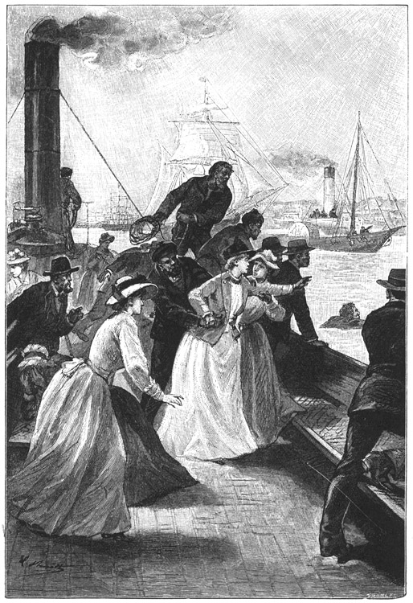Dolly! ... Dolly! ... rief Jane
– Unsere Absicht ist es auch, erwiderte Len Burker, sie nach Prospect-House zu bringen und dort mit ihr zu wohnen. Dieses Haus ist ihr Heim, und der Anblick der ihr bekannten Sachen wird von heilsamem Einfluß auf sie sein. Dort wird sie nicht gestört werden ... Das Freie ist gleich vor der Thüre ... Jane wird sie einige Spaziergänge in der Umgebung machen lassen, die sie kennt, die sie mit ihrem Kinde gemacht hat ... Das schlage ich vor ... Würde dies John nicht billigen, wenn er da wäre? ... Und was müßte er sich bei seiner Rückkehr denken, wenn er seine Frau in einer Heilanstalt, in den Händen bezahlter Leute fände? ... Herr Andrew, man darf nichts außeracht lassen, um einen heilsamen Einfluß auf ihren Geist auszuüben.«
Dieser Antwort lagen scheinbar ganz hübsche Gefühle zu Grunde. Aber warum schienen die Worte dieses Mannes kein Vertrauen einzuflößen?
Wie dem auch sein mochte, sein Vorschlag mußte angenommen werden, und Mr. William Andrew konnte ihm nur danken, indem er hinzufügte, daß John ihm auch zu tiefem Danke verpflichtet sei.
Am 27. April wurde Mrs. Branican in das Prospect-House gebracht, wo Jane und Len Burker an dem Abend desselben Tages sich auch einlogirten. Dieser Entschluß fand allgemeine Billigung.
Man erräth, welchen Motiven Len Burker gehorchte. Eben an dem Tage der Katastrophe hatte er, wie wir wissen, die Absicht gehabt, mit Dolly über eine gewisse Angelegenheit zu sprechen. Diese bestand darin, sich von ihr eine ansehnliche Summe Geldes zu borgen. Aber seitdem hatte sich die Lage geändert. Es war wahrscheinlich, daß Len Burker mit der Verwaltung des Vermögens seiner Verwandten, vielleicht als Curator, betraut werde, und in dieser Eigenschaft konnte er sich einige Hilfsquellen – wenn auch versiegbare – verschaffen, wodurch er wenigstens von neuem Zeit gewann. Das sah auch Jane voraus, und wenn sie glücklich war, sich ganz der Pflege Dollys widmen zu können, so zitterte sie doch, weil sie die geheimen Pläne ihres Mannes durchschaute, die dieser unter dem Mantel der Humanität verbarg.
Der Aufenthalt im Prospect-House wurde nun folgendermaßen eingerichtet: Man brachte Dolly in jenes Zimmer, das sie verlassen hatte, um so namenlosem Unglück entgegenzugehen. Es war nicht mehr die Mutter, die dahin zurückkehrte, es war ein Wesen, beraubt der Vernunft. Das so geliebte Heim, der Salon, wo einige Photographien des Abwesenden hingen, der Garten, wo sie Beide so glückliche Tage zugebracht hatten, nichts erinnerte sie mehr an das frühere Leben. Jane bewohnte ein Zimmer, das an das Dollys stieß, und Len Burker hatte das seinige in dem Erdgeschosse gewählt, das seinerzeit dem Capitän John gehörte.
Von jenem Tage an ging Len Burker seinen gewöhnlichen Geschäften wieder nach. Jeden Morgen begab er sich nach San-Diego hinab, in sein Bureau in der Fleet Street, wo er seine Geschäfte abwickelte. Aber was man besonders hätte bemerken können, war, daß er es nie unterließ, jeden Abend wieder nach Prospect-House zurückzukehren; er verreiste auch bald nicht mehr.
Wir müssen noch nachtragen, daß die Mulattin ihrem Herrn auch in die neue Wohnung gefolgt war, wo sie bald das war, was sie immer und überall gewesen war, eine Person, auf deren Ergebung man rechnen konnte. Die Amme des kleinen Wat war entlassen worden, obwohl sie sich angetragen hatte, ihre Dienste Mrs. Branican zu weihen. Was die Dienerin anbelangt, so wurde dieselbe unterdessen provisorisch für die Dienste behalten, die Nô allein kaum hätte leisten können.
Uebrigens wäre Niemand in der sorgsamen Pflege Jane gleichgekommen, die Alles that, was der Zustand Dollys erforderte. Ihre Freundschaft hatte sich, wenn es möglich war, nach dem Tode des Kindes noch vergrößert, da sie sich als die Ursache des Unglückes ansah. Wenn sie nicht Dolly in dem Prospect-House besucht und die Frau auf den Gedanken gebracht hätte, den Capitän des »Boundary« zu besuchen, so wäre das Kind heute noch bei seiner Mutter und würde die langen Stunden der Abwesenheit des Gatten vertreiben! ... Dolly hätte nicht den Verstand verloren!
Es war ohne Zweifel Len Burker's Absicht, daß die Pflege Janes Allen, die sich für Mrs. Branican interessirten, vollständig genüge. Mr. William Andrew mußte selbst anerkennen, daß die arme Frau in keinen besseren Händen hätte sein können. So oft er seine Besuche machte, beobachtete er, ob sich der Zustand der Kranken nicht zum Bessern wende. Er wollte noch immer hoffen, daß die erste Depesche, die an den Capitän John nach Singapore und Indien abgeschickt werde, nicht ein doppeltes Unglück melde, sein Kind todt ... seine Frau ... War es nicht gerade so, als wenn seine Frau auch gestorben wäre? Allerdings nicht! Er konnte nicht glauben, daß Dolly in der Kraft ihrer Jugend, bei ihrem regen Geiste und energischen Charakter für immer des Verstandes beraubt wäre! War es vielleicht nur ein Feuer, das unter der Asche weiterglomm? ... Würde es nicht eines Tages ein Funke wieder anfachen? ... Und doch waren schon fünf Wochen verflossen, ohne daß eine Hoffnung diese Dunkelheit erleuchtet hätte. Bei einem solch ruhigen Irrsinne, den nicht der geringste Anfall steigerte, schienen die Aerzte nicht die geringste Hoffnung zu haben und stellten bald ihre Besuche ein. Bald kam auch Mr. William Andrew, der an einer Heilung verzweifelte, nur noch selten in das Prospect-House – so leid that es ihm, wenn er sich bei dieser Unglücklichen und zugleich geistig Kranken befand.
Wenn Len Burker aus irgend einem Grunde einen Tag außerhalb der Stadt zubringen mußte, so hatte die Mulattin den Auftrag, Mrs. Branican zu bewachen. Diese ließ sie dann keinen Augenblick allein, ohne sich übrigens um die Pflege Janes zu kümmern, und berichtigte dann getreulich ihrem Herrn von Allem, was sie in dem Zustande der Kranken bemerkt hatte. Sie ließ sogar die Personen, welche zum Besuche kamen, nicht herein, indem sie erklärte, es wäre gegen die ärztlichen Vorschriften ... Die Kranke bedürfe der absoluten Ruhe ... Diese Störungen könnten eine Krisis herbeiführen ... Und Mrs. Burker gab selbst zu, Nô habe Recht, wenn sie die Besuche als lästig abwies, die im Prospect-House nichts zu suchen hätten. So wurde Mrs. Branican ganz isolirt.
»Arme Dolly, dachte Jane, wenn sich ihr Zustand verschlimmern oder ihr Irrsinn sich zur Tobsucht steigern sollte ... so würde man sie entfernen ... sie in eine Heilanstalt sperren ... Sie wäre für mich für immer verloren ... Nein, Gott soll mir sie nur hier lassen ... Wie gern würde ich sie noch mehr pflegen!«
In der dritten Woche des Monates Mai wollte Jane einige Spaziergänge in der Umgebung versuchen, indem sie glaubte, daß Dolly dies zuträglich sein würde. Len Burker war nicht dagegen, aber unter der Bedingung, daß Nô Dolly und seine Frau begleite. Das war übrigens nur eine Vorsicht. Der Weg, die frische Luft konnten bei Dolly einen Anfall hervorrufen, vielleicht in ihr einen Fluchtgedanken erregen, und Jane hätte nicht die Kraft gehabt, sie aufzuhalten. Man muß bei einer Irrsinnigen Alles voraussetzen ... Man darf sie nicht in ein neues Unglück treiben ...
Eines Tages ging Mrs. Branican aus, gestützt auf den Arm Janes. Sie ließ sich wie ein theilnahmsloses Wesen führen, ging, wohin man sie führte, ohne das geringste Interesse zu nehmen.
Im Anfange dieser Spaziergänge machte sich Alles gut. Doch bemerkte die Mulattin bald, daß der Zustand Dollys ein anderer wurde, indem ihrer gewohnten Ruhe eine gewisse Aufregung folgte, die schwere Anfälle nach sich ziehen konnte. Manchmal rief der Anblick von Kindern, denen sie begegneten, bei ihr eine nervöse Aufregung hervor ... Erinnerte sie sich vielleicht an das, was sie verloren hatte? ... Fiel ihr Wat ein? Wie dem auch sein mochte, wenn man darin ein günstiges Symptom erblicken konnte, so folgte doch gewöhnlich eine heftige nervöse Aufregung, die von Natur aus das Uebel nur vergrößern mußte.
Eines Tages hatten Jane und die Mulattin die Kranke auf die Anhöhe des Knob Hill geführt. Dolly hatte sich niedergesetzt und sah gegen den Horizont des Meeres, aber sie schien gedankenlos zu sein, wie ihre Augen leer von jedem Blicke waren.
Plötzlich belebte sich ihr Gesicht, ein heftiges Zittern durchzuckte ihren Körper, ihr Auge erhielt einen eigenthümlichen Glanz, und mit zitternder Hand zeigte sie auf einen Punkt in der Ferne.
»Dort! ... Dort! ...« rief sie.
Es war ein Segelschiff am Horizonte, dessen helle Weiße ein Sonnenstrahl erglänzen ließ.
»Dort! ... Dort! ...« wiederholte Dolly.
Und ihre tieferregte Stimme schien nur noch einem menschlichen Wesen zu gelten.
Während Jane sie mit Schrecken ansah, schüttelte die Mulattin mit dem Kopfe. Sie nahm Dolly schnell bei dem Arme und rief:
»Kommen Sie! ... Kommen Sie!«
Dolly hörte sie nicht.
»Komm, liebe Dolly, komm! ...« sagte Jane.
Sie suchte sie fortzuziehen, ihre Blicke von dem Horizonte abzubringen, wo ein Schiff deutlich erschien.
Dolly widersetzte sich.
»Nein ... Nein!« rief sie.
Mit diesem Ausrufe stieß sie die Mulattin mit einer Kraft zurück, die man ihr gar nicht zugetraut hätte.
Mrs. Burker und Nô fühlten sich ungemein beunruhigt. Sie konnten fürchten, daß Dolly ihnen entlaufe – da sie diese Erscheinung mächtig anzog, weil sie sich an John erinnerte – daß sie die Abhänge des Knob Hill hinabeile und sich in das Meer stürze.
Aber plötzlich legte sich diese Aufregung wieder. Die Sonne war eben hinter einer Wolke verschwunden und das Segel war nicht mehr zu sehen.
Dolly fiel wieder in ihre Theilnahmslosigkeit zurück, ihr Blick erlosch, sie wußte nichts mehr von ihrer Lage. Das Stöhnen, welches sie ausgestoßen hatte, war verschwunden, wie wenn das Leben sich wieder in ihre Brust zurückgezogen hätte. Nun nahm Jane sie bei der Hand; sie ließ sich ohne Widerstand fortführen und ging ruhig in das Prospect-House.
Von jenem Tage an beschloß Len Burker, Dolly nicht mehr außer dem Hause spazieren gehen zu lassen, und Jane mußte damit einverstanden sein.
Um diese Zeit war es, daß Mr. William Andrew beschloß, den Capitän John von dem Vorgefallenen in Kenntniß zu setzen, da der Zustand der Mrs. Branican keine Besserung hoffen ließ. Er schickte die Depesche nicht nach Singapore, das der Franklin schon verlassen haben mußte, sondern nach Calcutta, so daß John dieselbe bei seiner Ankunft in Indien vorfinden würde.
Unterdessen war aber, obwohl Mr. William Andrew nach dem Ausspruche der Aerzte keine Hoffnung mehr auf Besserung Dollys hatte, doch noch eine solche möglich, wenn sie einer heftigen Erschütterung ausgesetzt wurde, z. B. an dem Tage, wo ihr Gatte vor ihr stehen würde. Dieser Hoffnungsstrahl, es ist wahr, war der einzige, der übrig blieb, und so schwach er auch war, so wollte ihn doch Mr. William Andrew in der langen Depesche an John nicht verschweigen. Indem er ihn tröstete und ihn bat, nicht ganz zu verzweifeln, gab er ihm die Berechtigung, das Commando Harry Felton zu übergeben und so schnell wie möglich nach San-Diego zurückzukehren. Dieser ehrliche Mann hätte seine theuersten Interessen geopfert, um den letzten Versuch mit Dolly zu machen, und er forderte den jungen Capitän auf, ihm telegraphisch mitzutheilen, was er zu thun gedenke.
Als Len Burker von dieser Depesche Kenntniß erhielt, welche Mr. William Andrew ihm mittheilen zu sollen glaubte, billigte er sie, indem er zugleich die Furcht aussprach, daß die Rückkehr Johns wohl gar keinen heilsamen Einfluß auf den Zustand Dollys hervorrufen werde. Aber Jane klammerte sich an diese Hoffnung, daß die Rückkehr Johns Dolly den Verstand wiedergeben könnte, und Len Burker versprach ihm zu schreiben, damit er seine Reise nach San-Diego nicht verzögere – ein Versprechen, das er übrigens nicht hielt.
Während der folgenden Wochen machte sich keine Veränderung in dem Zustande der Mrs. Branican bemerkbar. Wenn auch das physische Leben in ihr durch nichts gestört wurde und ihre Gesundheit nichts zu wünschen übrig ließ, so war doch die Veränderung deutlich auf ihrem Gesichte bemerkbar. Das war nicht mehr die Frau, welche noch nicht einundzwanzig Jahre alt war, mit diesem bleichen Aussehen, den starren Blicken, als wenn das Feuer der Seele in ihr erloschen wäre. Uebrigens konnte man sie nur selten sehen, wenigstens nur in dem Garten, wo sie entweder auf einer Bank saß oder am Arme Janes spazieren ging.
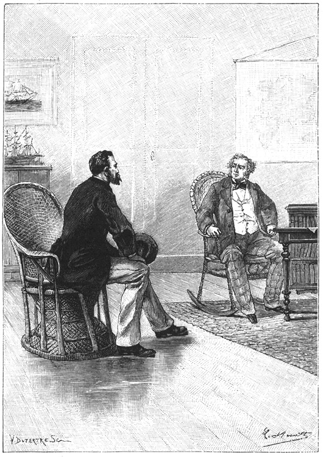Len Burker besuchte Mr. William Andrew in seinem Bureau.
Zu Anfang Juni waren es zwei und ein halber Monat, seit der »Franklin« den Hafen von San-Diego verlassen hatte. Seit seiner Begegnung mit dem »Boundary« hatte man nichts mehr von ihm gehört. Vorausgesetzt, daß ihm kein Unfall zugestoßen war, mußte er jetzt nach einer ungefähren Berechnung nach Calcutta kommen. Weder aus dem Stillen Ocean noch aus dem Indischen Meere war schlechtes Wetter signalisirt worden, das den Lauf eines so großen Segelschiffes hätte aufhalten können.
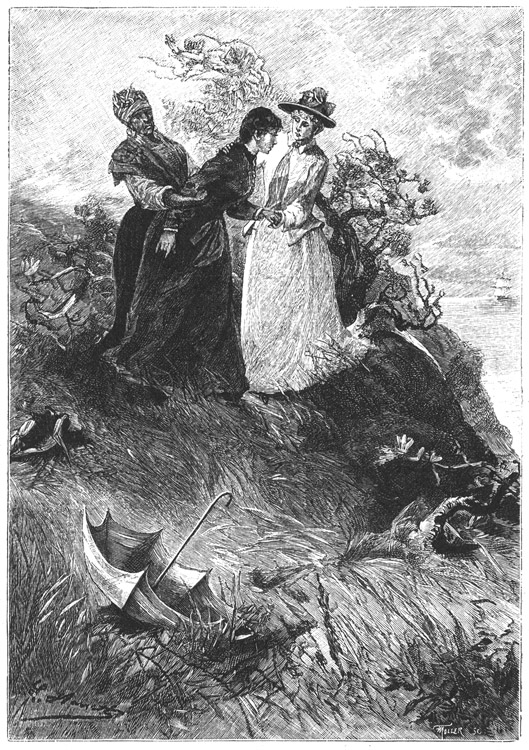»Komm, liebe Dolly, komm!« sagte Jane.
Unterdessen war Mr. William Andrew doch überrascht, daß er gar nichts von dem Schiffe hörte. Er konnte es sich nicht erklären, daß sein Correspondent ihm nicht die Abfahrt des »Franklin« von Singapore mitgetheilt habe. Wieso war es anzunehmen, daß der »Franklin« dort nicht gelandet wäre, nachdem John diesbezüglich stricte Befehle erhalten hatte? Nun, man mußte ja in einigen Tagen etwas hören, sobald der ›Franklin‹ würde in Calcutta angekommen sein.
Eine Woche verfloß. Am 15. Juli war noch keine Nachricht da. Nun wurde sofort eine Depesche an den Correspondenten des Hauses Andrew abgesendet und um sofortige Antwort bezüglich des »Franklin« und John Branican's ersucht.
Diese Antwort traf nach zwei Tagen ein.
Man wußte nichts von dem »Franklin« in Calcutta. Der amerikanische Dreimaster war um diese Zeit nicht einmal in dem Bengalischen Meerbusen gesehen worden.
Die Ueberraschung Mr. William Andrew's wurde zur Unruhe, und da ein Telegramm unmöglich verschwiegen bleiben kann, so verbreitete sich bald in San-Diego das Gerücht, daß der »Franklin« weder in Singapore noch in Calcutta angekommen sei.
Sollte also die Familie Branican von einem neuen Schicksalsschlage betroffen worden sein – ein Schicksalsschlag, der auch die Familien von San-Diego, denen die Bemannung des »Franklin« angehörte, traf? Len Burker trug keine große Beunruhigung zur Schau, als er diese alarmirenden Nachrichten vernahm. Waren doch seine Gefühle für John stets nur scheinbar und war er doch ein Mensch, der sich blutwenig um das Unglück Anderer kümmerte. Wie dem auch war, von dem Tage an, wo man sich über das Schicksal des »Franklin« beunruhigen konnte, erschien er düsterer, verschlossener zu sein – selbst in seinen Geschäften. Man sah ihn nur selten in den Straßen von San-Diego und in seiner Kanzlei in der Fleet Street, so daß es schien, als wollte er sich ganz in das Prospect-House einsperren.
Um diese Zeit ging in diesem Hause eine Veränderung vor. Len Burker entließ die Dienerin, die man bisher behalten hatte und deren Dienste nichts zu wünschen übrig ließen.
Die Mulattin hatte nun die ganze Hauswirthschaft zu führen. Mit Ausnahme von ihr und Jane hatte Niemand Zutritt zu Mrs. Branican. Mr. William Andrew, dessen Gesundheit in Folge dieser Schicksalsschläge nicht die beste war, mußte seine Besuche in dem Prospect-House aufgeben. Da noch dazu der wahrscheinliche Untergang des »Franklin« kam, was hätte er auch dort zu thun gehabt? Uebrigens wußte er, daß Dolly, seitdem sie nicht mehr spazieren ging, ruhiger geworden war und keinen nervösen Anfall mehr gehabt hatte. Sie lebte, sie vegetirte mehr in einem Zustande geistiger Abwesenheit, was eine Eigenthümlichkeit ihres Irrsinns war; aber ihre Gesundheit verlangte keine besondere Pflege.
Gegen Ende Juni erhielt William Andrew eine neue Depesche aus Calcutta. Die Seecorrespondenzen signalisirten den »Franklin« von keinem Punkte der Route, die er auf seiner Fahrt an den Philippinen und Celebes vorüber, durch das Meer von Java und den Indischen Ocean hätte berühren müssen. Da dieses Schiff seit drei Monaten den Hafen von San-Diego verlassen hatte, so war anzunehmen, daß es mit Mann und Maus untergegangen war, sei es durch Schiffbruch, sei es durch Zusammenstoß, und zwar noch vor der Ankunft in Singapore.
Diese Katastrophen, welche die Familie Branican nach einander betroffen hatten, brachten Len Burker in eine Lage, die er nicht unberücksichtigt lassen konnte.
Wir haben nicht vergessen, wie bescheiden die Vermögensverhältnisse der Mrs. Branican gewesen sind, daß sie aber, die Universalerbin ihres reichen Onkels Edward Starter werden sollte. Stets in der ungeheuren Waldesgegend zurückgezogen, man möchte sagen, in dem entlegensten Theile von Tennessee, hatte sich dieser Sonderling verbeten, ihm irgend eine Mittheilung zu machen. Da er erst neunundfünfzig Jahre alt war, so konnte sein Vermögen wohl lange auf sich warten lassen.
Vielleicht hätte er seine Bestimmungen geändert, wenn er erfahren haben würde, daß Mrs. Branican, die einzige directe Verwandte, die ihm von seiner Familie übrig geblieben war, nach dem Tode ihres Kindes geistiger Umnachtung verfallen war. Aber er kannte dieses doppelte Unglück nicht; er hätte es übrigens auch nicht erfahren können, da er sich entschieden geweigert haben würde, irgend einen Brief anzunehmen. Len Burker hätte ihm zwar schreiben können, und Jane gab es ihm auch zu verstehen, aber er hieß sie schweigen, und sie hütete sich wohl, noch einmal die Rede darauf zu bringen.
Sein eigenes Interesse ließ ihn davon Abstand nehmen, und zwischen Interesse und Pflicht darf der Mensch nicht zögern, wäre dies nur einen Augenblick. Seine Lage wurde mit jedem Tag precärer, wenn er nicht noch einmal das Glück versuchen wollte.
Und in der That war seine Stellung eine ganz einfache: Stirbt Mrs. Branican kinderlos, so war ihre Cousine Jane die einzige Verwandte, die sie beerben konnte. Seit dem Tode des kleinen Wat sah Len Burker die Rechte seiner Frau auf das Erbe Edward Starter's, d. h. die seinigen, deutlich wachsen.
Kamen nicht alle Umstände zusammen, um ihm dieses große Vermögen zuzuführen? Nicht nur das Kind war todt, nicht nur Dolly war irrsinnig, sondern nach dem Ausspruche der Aerzte konnte sie nur die Rückkehr Johns heilen.
Und gerade jetzt beunruhigte das Schicksal des »Franklin« Alles in San-Diego. Wenn die Nachrichten noch einige Wochen ausblieben, John Branican nicht mehr zurückkehrte, das Haus Andrew nicht erfuhr, daß das Schiff in einem beliebigen Hafen angelegt habe, wenn weder der »Franklin« noch die Bemannung zurückkehrte, dann stand nichts mehr im Wege als die geisteskranke Dolly, daß das Vermögen der Familie Burker zufiel. Und was würde ein gewissenloser Mensch in einer solchen verzweifelten Lage nicht Alles versuchen, um nach dem Tode Eduard Starter's in den Besitz des Vermögens zu kommen?
Aber damit Mrs. Branican erbe, mußte sie ihren Onkel überleben. Len Burker hatte daher ein großes Interesse daran, daß das Leben der unglücklichen Frau bis zu dem Tage dauere, wo das Erbe Edward Starter's ihr zufallen würde. Er hatte jetzt nur mit zwei Dingen zu rechnen: Entweder, daß Dolly zu früh sterbe, oder daß Capitän John, nachdem er sich vielleicht längere Zeit auf irgend einer unbekannten Insel aufgehalten hatte, wieder heimkehre. Aber das Letztere war am wenigsten zu fürchten und der Untergang des »Franklin« fast schon mit Bestimmtheit anzunehmen.
So war die Lage Len Burker's, so war die Zukunft, der er entgegenging, und dies Alles in der Zeit, wo er sich fast von allen Geldmitteln entblößt sah.
Wenn sich das Gericht in seine Geschäfte gemischt hätte, so würde er sich wegen Betrugs zu verantworten gehabt haben. Ein Theil der Gelder, die ihm allzu Unvorsichtige anvertraut hatten, waren nicht mehr in seiner Casse. Schließlich begann man dieselben zurückzufordern, obwohl er die späteren Gelder immer wieder zur Auszahlung von Interessen der anderen verwendete. So konnte es nicht weitergehen. Der Ruin kam immer näher, aber noch mehr als der Ruin, seine Entlarvung und schließlich die Verhaftung wegen der schwersten Verdachtsgründe.
Mrs. Burker ahnte ohne Zweifel, daß die Lage ihres Mannes eine drohende war, obwohl sie es nicht dachte, daß er auch mit dem Gerichte in Berührung kommen könnte. Nun, dies machte sich aber in dem Prospect-House weniger bemerkbar, und zwar aus folgendem Grunde:
Seit Dolly während der Abwesenheit ihres Gatten in geistige Umnachtung gefallen war, mußte für sie ein Curator aufgestellt werden, und dazu paßte wegen der Verwandtschaft am besten Len Burker, der nun in der That ihr Vermögen verwaltete. Das Geld, welches der Capitän John zum Lebensunterhalte seiner Familie zurückgelassen hatte, stand ihm zur Verfügung und er benutzte es für seine persönlichen Bedürfnisse. Es war dies zwar nicht viel, denn die Abwesenheit des »Franklin« sollte nur fünf bis sechs Monate dauern, aber es war auch die Mitgift Dollys da, obwohl sie nur aus einigen Tausend Dollars bestand. Len Burker konnte mit Hilfe dieses Geldes Zeit gewinnen, und das war die Hauptsache für ihn.
Auch zögerte dieser Mann nicht, seine Stellung als Curator zu mißbrauchen. Er verwendete das Geld seiner Verwandten und Mündel, der Mrs. Branican, zu anderen Zwecken und schritt so auf seiner verbrecherischen Bahn immer weiter, die er, wenn es sein mußte, bis an das Ende verfolgen würde.
Uebrigens war die Rückkehr des Capitäns John immer weniger zu befürchten. Wochen verflossen und das Haus Andrew erhielt noch keine Nachricht von dem »Franklin«, der auch von Niemand in den letzten sechs Monaten gesehen worden war. Der August und der September verflossen. Weder in Calcutta, noch in Singapore konnten die Correspondenten die leiseste Andeutung erhalten, was aus dem Dreimaster geworden war. Jetzt sah man ihn nicht ohne Grund als verloren an, was allgemeine Trauer in San-Diego hervorrief. Wie war er untergegangen? Darüber gingen die Meinungen sehr auseinander, da man nur Vermuthungen aussprechen konnte. Seit jener Zeit hatten mehrere Handelsschiffe aus denselben Gründen die nämliche Route einschlagen müssen. Da sie aber nirgends ein Wrack oder sonst eine Spur vorfanden, so stellte man folgende sehr wahrscheinliche Hypothese auf: Der »Franklin« war in einem jener furchtbaren Stürme, die gewöhnlich in den Gewässern von Celebes oder von Java hausen, mit Mann und Maus untergegangen. Am 15. October 1875 waren schon sieben Monate verflossen, daß der »Franklin« San-Diego verlassen hatte, und Alles schien darauf hinzudeuten, daß er nie mehr zurückkehren würde. Um jene Zeit war diese Ueberzeugung so fest in der Stadt, daß Sammlungen zu Gunsten der armen Hinterlassenen veranstaltet wurden, da die Bemannung, Officiere wie Matrosen, dem Hafen von San-Diego angehörten; es geriethen daselbst Frauen, Kinder und Verwandte in Noth, denen geholfen werden mußte.
Diese Sammlungen wurden auf Anregung des Hauses Andrew veranstaltet, das sie auch mit einer bedeutenden Summe einleitete. Sowohl aus Interesse als auch aus Vorsicht wollte Len Burker sich ebenfalls an diesem mildthätigen Werke betheiligen. Die anderen Handelshäuser der Stadt, die Hausbesitzer und Privatiers folgten nach, so daß die Familien der verschollenen Mannschaft reichlich unterstützt werden konnten, was die traurigen Folgen dieses Seeunglückes ein wenig milderte.
Man kann sich denken, daß Mr. William Andrew es für seine moralische Pflicht hielt, Mrs. Branican, die dem geistigen Leben entrückt war, wenigstens in physischer Beziehung ein angenehmes Dasein zu bereiten. Er wußte, daß der Capitän John vor seiner Abreise genügende Mittel für den Lebensunterhalt der Familie für fünf bis sechs Monate zurückgelassen hatte. Aber da er dachte, daß diese Hilfsmittel jetzt auf die Neige gehen müßten, beschloß er, damit Dolly nicht ihren Verwandten zur Last falle, sich mit Len Burker darüber ins Einvernehmen zu setzen.
Am 17. October begab sich Mr. William Andrew, obwohl seine Gesundheit noch nicht ganz wiederhergestellt war, in das Prospect-House.
Aeußerlich hatte dieses Haus kein verändertes Aussehen, es müßte denn sein, daß die persischen Vorhänge des Erdgeschosses und des ersten Stockwerkes fest geschlossen waren. Man hätte dieses Haus für unbewohnt, verödet, für ein geheimnißvolles halten können.
Mr. William Andrew zog an der Thür die Glocke. Es kam Niemand. Es schien, als würde der Besuch weder gesehen noch gehört werden.
Ist denn jetzt gerade Niemand in dem Prospect-House?
Als er ein zweitesmal heftig an der Glocke zog, hörte man das Oeffnen einer Seitenthür.
Die Mulattin trat heraus, und als sie William Andrew erblickte, konnte sie nicht umhin, eine Handbewegung des Unwillens zu machen, die dieser aber nicht bemerkte.
Während die Mulattin sich der Thüre des Gartenzaunes langsam näherte, wartete Mr. William Andrew nicht erst, sondern fragte über die Einfriedigung hinüber:
»Ist denn Mrs. Branican nicht zu Hause?
– Sie ist ausgegangen ... Herr Andrew ... erwiderte Nô mit eigenthümlichem Zögern und deutlicher Furcht.
– Wo ist sie denn? fragte Mr. William Andrew, der durchaus eintreten wollte.
– Sie ist mit Mrs. Burker spazieren gegangen.
– Ich glaubte, daß man diese Spaziergänge aufgegeben habe, da sie dieselben aufregen und leicht zu einer Krisis führen könnten? ...
– Ja, ohne Zweifel, erwiderte Nô ... Aber seit einigen Tagen ... haben wir die Spaziergänge wieder aufgenommen ... Sie scheinen Mrs. Branican jetzt gut anzuschlagen ...
– Ich bedauere, daß man mich nicht davon in Kenntniß gesetzt hat, erwiderte Mr. William Andrew. Ist Mr. Burker zu Hause?
– Ich weiß nicht ...
– Sehen Sie nach, und wenn er zu Hause ist, so sagen Sie ihm, daß ich ihn zu sprechen wünsche.«
Bevor die Mulattin antworten konnte – und vielleicht wäre sie auch mit der Antwort sehr in Verlegenheit gekommen – ging die Thür des Erdgeschosses auf. Len Burker trat auf die Freitreppe, durchschritt den Garten und sagte indem er näher kam:
»Bitte einzutreten, Herr Andrew. Erlauben Sie mir in Abwesenheit Janes, die mit Dolly spazieren gegangen ist, Sie zu empfangen.«
Die Worte hatten nicht jenen kühlen Ton, der Len Burker sonst eigen war, sondern klangen etwas verlegen.
Nun, da Mr. William Andrew eigentlich hierhergekommen war, um mit Len Burker zu sprechen, so ging er durch die Gartenthür und setzte sich auf eine Gartenbank, ohne weiter das Anerbieten zu berücksichtigen, in den Salon des Erdgeschosses einzutreten. Len Burker redete zuerst und bestätigte, was die Mulattin gesagt hatte: Seit einigen Tagen habe Mrs. Branican die Spaziergänge in der Nähe des Prospect-House wieder aufgenommen, die ihr sehr gut anschlügen.
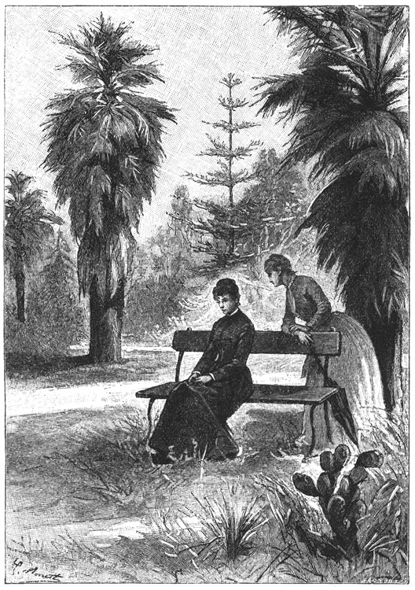... indem sie entweder auf einer Bank saß oder am Arme Janes spazieren ging.
– Wird Dolly bald zurück sein? fragte Mr. William Andrew.
– Ich glaube nicht, daß Jane sie vor dem Diner heimführen wird,« erwiderte Len Burker.
Mr. William Andrew war dies unangenehm, da er wegen der Post wieder in seinem Bureau sein wollte. Auch forderte ihn Len Burker nicht auf, Mrs. Branican hier zu erwarten.
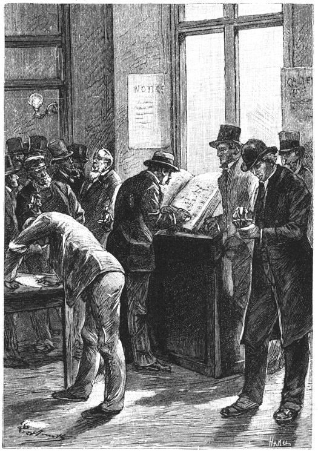... daß Sammlungen zu Gunsten der armen Hinterlassenen veranstaltet wurden,
»Und Sie haben gar keine Besserung in dem Zustande Dollys bemerkt? hub er von Neuem an.
– Nein, unglücklicherweise, Herr Andrew, ist es zu befürchten, daß dies eine geistige Krankheit ist, die weder Zeit noch Pflege heilen kann.
– Wer weiß, Herr Burker, was den Menschen unmöglich erscheint, ist Gott möglich.«
Len Burker schüttelte mit dem Kopfe, wie wenn er kaum eine göttliche Einmischung in die weltlichen Dinge zulassen könnte.
»Was besonders bedauert werden muß, begann Mr. William Andrew, ist, daß wir kaum mehr auf die Heimkehr des Capitän John rechnen können. Man muß es daher dem reinen Zufalle überlassen, der vielleicht auf den geistigen Zustand Dollys von guten Folgen begleitet sein könnte. Sie wissen doch, Herr Burker, daß wir gar nicht mehr auf die Rückkehr des ›Franklin‹ hoffen können? ...
– Ich weiß es, Herr Andrew, und das ist ein neues und größeres Unglück. Und doch, ohne daß sich die göttliche Fügung hineinmische, bemerkte er mit ironischen Worten, die in diesem Augenblicke gar nicht am Platze waren, ist nach meiner Meinung die Rückkehr des Capitäns John noch nicht gänzlich ausgeschlossen.
– Sieben Monate sind verflossen ohne die geringste Nachricht von dem »Franklin«, bemerkte Mr. William Andrew, und da auch alle Erkundigungen, die ich einzog, zu keinem Resultate führten ...
– Aber nichts beweist, daß der »Franklin« im offenen Meere untergegangen ist. Hat er nicht Schiffbruch leiden können an den zahlreichen Klippen, an denen er vorübergefahren ist? ... Wer weiß, ob John und seine Matrosen sich nicht auf eine einsame Insel gerettet haben? ... Nun, wenn dem so ist, so werden solche entschlossene und energische Männer wohl wissen, was sie thun müssen, um in ihre Heimat zu gelangen ... Können sie sich nicht ein Boot aus den Trümmern ihres Schiffes bauen? ... Können nicht ihre Signale gesehen werden, wenn ein Schiff an ihrer Insel vorüberfährt? ... Gewiß muß günstiges Wetter sein, damit solche Eventualitäten eintreten können ... Nein ... ich verzweifle noch nicht an der Rückkehr Johns ... in einigen Monaten ... in einigen Wochen ... Wir haben zahlreiche Beispiele von Schiffbrüchigen, die man für sicher verloren hielt ... und die doch zurückgekehrt sind!«
Len Burker hatte diesmal mit einem seltenen Feuer gesprochen. Sein sonst so theilnahmsloses Gesicht hatte sich belebt, man hätte sagen können, daß, als er die Gründe für und wider auseinandersetzte, er nicht mit Mr. William Andrew, sondern mit sich selbst spreche, in seiner Angst, es könnte John, wenn auch nicht gerade auf dem »Franklin«, so doch auf einem anderen Schiffe wieder heimkehren. Das wäre freilich gerade das Gegentheil von dem gewesen, worauf er seine Zukunft setzte.
»Ja, erwiderte dann Mr. William Andrew, ich weiß es ... Es giebt einige wirklich wunderbare Rettungen ... Alles, was Sie, Herr Burker, mir jetzt gesagt haben, habe ich mir auch gedacht ... Aber es ist nicht möglich, nur die kleinste Hoffnung zu hegen ... Wie dem auch sei – und deshalb bin ich eben hierhergekommen – ich wünsche, daß Dolly Ihnen nicht zur Last falle ...
– Aber, Herr Andrew ...
– Nein, Herr Burker, und Sie werden mir erlauben zu bestimmen, daß der Gehalt des Capitän John zeitlebens seiner Frau ausbezahlt werde ...
– Ich danke Ihnen in ihrem Namen, erwiderte Len Burker. Dieser Edelmuth ...
– Ich glaube nur meine Pflicht zu thun, versetzte Mr. William Andrew, und da ich denke, daß das Geld, welches der Capitän John bei der Abfahrt hier zurückgelassen hat, wohl schon ganz wird ausgegeben sein ...
– In der That, Herr Andrew, erwiderte Len Burker. Aber Dolly ist nicht ohne Verwandte, und wir halten es für unsere Pflicht, ihr zu helfen ... Alles aus Liebe ...
– Ja, ich weiß, daß wir auf die Ergebung der Mrs. Burker rechnen können. Nichtsdestoweniger gestatten Sie mir, in einem gewissen Maße auch mein Scherflein beizutragen zur Unterstützung der Frau des Capitän John, seiner Witwe ... ach ...
– Wie es beliebt, Herr Andrew!
– Ich habe Ihnen, Herr Burker, einen Betrag mitgebracht, der gleich dem Gehalte der Monate ist, die seit der Abreise Johns verflossen sind, und Sie können dann als Curator jeden Monat bei meiner Cassa den Gehalt erheben ...
– Da Sie es denn gerade wünschen, erwiderte Len Burker.
– Haben Sie die Güte, mir eine Bestätigung über den Empfang der Summe zu geben, die ich Ihnen bringe ...
– Mit Vergnügen, Herr Andrew.«
Damit begab sich Len Burker in sein Zimmer, um die verlangte Bestätigung auszustellen.
Als er in den Garten zurückkehrte, bedauerte Mr. William Andrew wiederum, daß er Dolly nicht angetroffen habe, und daß er ihre Rückkehr nicht abwarten konnte, und dankte nochmals für die Pflege, die er und seine Frau der Unglücklichen angedeihen ließen. Es wäre selbstverständlich, daß er von Len Burker bei der geringsten Veränderung in dem Zustande Dollys benachrichtigt werde. Mr. William Andrew empfahl sich dann und wurde bis zu der Thür geleitet, wo er einen Augenblick stehen blieb, um zu sehen, ob er nicht Dolly mit Jane erblicke. Dann stieg er langsam nach San-Diego hinab.
Sobald er fort war, rief Len Burker die Mulattin und sagte:
»Weiß Jane, daß Herr Andrew hier gewesen ist?
– Wahrscheinlich, Len. Sie hat ihn fortgehen sehen, wie sie ihn hat kommen sehen.
– Wenn er wieder hierher kommen sollte – was freilich nicht so bald geschehen wird – so braucht er weder Jane noch Dolly zu sehen. Verstehst Du, Nô?
– Ich werde mir es merken, Len.
– Und wenn Jane darauf bestehen sollte ...
– O, wenn Du gesagt hast, ich will nicht, erwiderte Nô, so fällt es Jane nicht ein, gegen Deinen Willen zu kämpfen.
– Gut, aber wir müssen uns vor Ueberraschungen hüten! ... Der Zufall könnte eine Begegnung herbeiführen ... und in diesem Augenblicke ... das wäre eine Gefahr, Alles zu verlieren ...
– Wenn ich da bin, versetzte die Mulattin, so hast Du nichts zu fürchten ... In das Prospect-House wird Niemand kommen ... so lange ... so lange ... es uns beliebt!«
Und wirklich blieb durch zwei Monate das Haus fester denn je verschlossen. Jane und Dolly wurden nicht mehr gesehen, nicht einmal mehr in dem kleinen Garten. Man bemerkte sie weder in der Veranda, noch an den Fenstern des ersten Stockwerkes, die stets geschlossen waren.
Was die Mulattin anbelangt, so ging sie nur aus, um Einkäufe zu besorgen, und dies that sie nicht in Abwesenheit Len Burker's, so daß Dolly nie mit Jane im Hause allein war. Man könnte noch hinzufügen, daß Len Burker in den letzten Monaten des Jahres auch sehr selten in seine Kanzlei in der Fleet Street kam. Es vergingen oft Wochen, bevor er sie wieder einmal betrat, es sei denn, er hatte ein ganz neues Geschäft zu machen.
So näherte sich das Jahr 1875 seinem Ende, das der Familie Branican so verhängnißvoll geworden war: John verschollen, Dolly irrsinnig, ihr Kind in der Tiefe des Meeres!
Es kam keine Nachricht von dem »Franklin« bis zu den ersten Monaten des Jahres 1876. Nirgends, weder in den Gewässern der Philippinen, noch in denen von Java, noch nördlich von Australien konnte eine Spur entdeckt werden. Uebrigens, wie konnte man annehmen, daß der Capitän John sich durch die Meerenge von Torres gewagt hätte? Nur einmal wurde nördlich von den Sundainseln, dreißig Meilen von Batavia, ein Stück des Vorderstevens eines Schooners der Vereinigten Staaten aufgefischt und nach San-Diego gebracht, um untersuchen zu lassen, ob es nicht zum »Franklin« gehörte. Aber nach einer sorgfältigen Prüfung ersah man, daß das Stück aus viel älterem Holze bestand, als zum Baue des »Franklin« verwendet worden war.
Ueberhaupt konnte sich dieses Stück nur losgeschlagen haben, wenn das Schiff an eine Klippe geschleudert worden oder zusammengestoßen war. Nun, im letzteren Falle wäre das Geheimniß des Zusammenstoßes nicht so gut bewahrt geblieben, es hätte denn sein müssen, daß beide Schiffe versanken. Aber da man von dem Verschwinden eines anderen Schiffes nichts wußte, wenigstens bis auf zehn Monate zurück, so kam man ganz einfach zu dem Schlusse, daß der »Franklin« in einen jener furchtbaren Wirbelstürme gerathen war, die so häufig in jenen Breitegraden wüthen und denen kein Schiff Widerstand leisten kann.
So war denn ein Jahr vergangen, seitdem der »Franklin« San-Diego verlassen hatte, und er wurde in die Liste der verschollenen oder untergegangenen Schiffe eingetragen, die in den Annalen des Seeverkehrs so zahlreich vertreten sind.
Der Winter des Jahres 1875 bis 1876 war sehr streng, und sogar in jener gesegneten Gegend Süd-Californiens, wo das Klima im Allgemeinen milde ist. Wegen der außerordentlichen Kälte, die bis Ende Februar anhielt, konnte sich Niemand wundern, wenn Mrs. Branican das Prospect-House nicht verließ, nicht einmal um Luft zu schöpfen.
Aber mit der Zeit hätte dies doch der Nachbarschaft auffallen müssen. Man würde sich gesagt haben, wenn die Krankheit der Mrs. Branican sich nicht verschlimmert hatte, so müßte doch Len Burker ein besonderes Interesse haben, sie so gefangen zu halten. Auch das Wort Sequestration wurde nie ausgesprochen. Was Mr. William Andrew anbelangt, so mußte er einen großen Theil des Winters das Zimmer hüten, und er war selbst schon ungeduldig zu sehen, in welchem Zustande sich Dolly befände; er nahm sich daher vor, sobald er ausgehen könnte, sich in das Prospect-House zu begeben.
Nun, in der ersten Woche des Monates März machte Mrs. Branican in Begleitung Janes in der Umgebung von Prospect-House ihre gewohnten Spaziergänge, indem auch die Mulattin dabei war. Kurze Zeit darauf besuchte Mr. William Andrew die junge Frau, und er constatirte mit Freuden, daß ihre Gesundheit zu keiner Beunruhigung Veranlassung gab. Physisch war ihr Zustand zufriedenstellend, so weit es möglich war. Geistig war keine Besserung eingetreten, denn sie hatte noch immer jede Erinnerung verloren und verharrte in ihrem Stumpfsinne. Selbst bei den Spaziergängen, wo sie sich hätte an einige Sachen erinnern können, wenn sie auf der Straße Kindern begegnete, wenn sich ihr Blick auf dem weithin sich ausdehnenden Meere verlor, fiel sie nie mehr in jene Aufregung wie ehemals. Sie suchte nicht zu entfliehen, so daß man sie jetzt mit Jane allein gehen ließ. Jeder Gedanke des Widerstandes, jede Auflehnung war erloschen, sie war gleichgiltig und ergab sich in Alles. Und als Mr. William Andrew Dolly wiedersah, mußte er sich von Neuem sagen, daß ihre geistige Umnachtung unheilbar sei.
Um diese Zeit wurde die Lage Len Burker's immer gefährlicher. Das Geld der Mrs. Branican, welches er angegriffen hatte, war nicht hinreichend, den Abgrund, der sich vor seinen Füßen öffnete, zu füllen. Dieser Kampf, dem er sich mit allen Kräften widersetzte, nahm mit seinen letzten Mitteln ein Ende. Noch einige Monate, vielleicht schon in einigen Wochen, würde er von dem Gerichte verfolgt werden, und es bliebe ihm nichts anderes übrig, als rasch die Hafenstadt zu verlassen.
Nur ein Umstand hätte ihn retten können, aber es schien, als wenn dieser nicht eintreten sollte – wenigstens nicht zur rechten Zeit. Wenn Mrs. Branican lebte, so lebte auch ihr Onkel Edward Starter. Nicht ohne die größte Vorsicht hatte Len Burker über diesen Sonderling, der in den wilden Gegenden des Staates Tennessee wohnte, Erkundigungen eingezogen.
Stark und kräftig, im vollen Besitze seiner geistigen und physischen Fähigkeiten, kaum sechzig Jahre alt, brachte Edward Starter sein Leben im Freien zu, inmitten der Prairien und Wälder dieses ungeheuren Landes. Er jagte in der wildreichen Gegend oder er fischte an den zahlreichen Flüssen, indem er stets zu Fuß oder zu Pferd herumwanderte und seine ungeheuren Besitzungen selbst beaufsichtigte. Gewiß war er einer der zähesten Farmer von Nordamerika, die erst mit hundert Jahren sterben und sich noch dann fragen, warum sie schon so frühzeitig die Erde verlassen sollen.
Man konnte daher für die nächste Zeit noch nicht auf diese Erbschaft rechnen, und nach aller Wahrscheinlichkeit würde der Onkel seine Nichte überleben. Die Hoffnungen, welche Len Burker auf diesen reichen Mann setzte, verschwanden immer mehr und die Katastrophe schien unvermeidlich.
So flossen zwei Monate dahin, während welcher sich seine Lage noch verschlimmerte. Verschiedene beunruhigende Gerüchte liefen in und außerhalb der Stadt um. Viele Leute, die von ihm ihr Geld nicht zurückerhalten konnten, bedrohten ihn. Zum erstenmale erhielt Mr. William Andrew Kenntniß von dem was vorgehe, und da er wegen der Gelder der Mrs. Branican beunruhigt wurde, so faßte er den Entschluß, ihren Curator aufzufordern, Rechnung abzulegen. Wenn es die Umstände erheischten, sollte ein anderer Vormund ernannt werden, obwohl Jane Burker, die ihrer Cousine treu ergeben war, von jedem Vorwurfe frei war.
Schon um diese Zeit waren zwei Drittel des Vermögens der Mrs. Branican verschwunden und Len Burker blieb nur noch ein und ein halbes Tausend Dollars übrig. Mitten in den Geldforderungen, welche von allen Seiten auf ihn hereinstürzten, war diese Summe ein Tropfen im Meere. Aber sie genügte doch, um sich zur rechten Zeit den Verfolgungen entziehen zu können.
Wirklich wurden von verschiedenen Seiten Klagen wegen Betruges bei dem Gerichte anhängig gemacht, und Burker stand bald vor der Verhaftung. Aber als die Polizei in sein Bureau kam, hatte er dasselbe seit dem vorhergehenden Abend nicht mehr betreten.
Die Polizei eilte zu dem Prospect-House hin ... Len Burker hatte die Villa in der Nacht verlassen. Seine Frau, mochte sie wollen oder nicht, wurde gezwungen, ihm zu folgen. Nur die Mulattin war bei Mrs. Branican zurückgeblieben.
Man stellte sofort in San-Diego, in San-Francisco und an verschiedenen Punkten Kaliforniens Nachforschungen an, um die Spur Len Burker's zu finden: diese führten aber zu keinem Resultat.
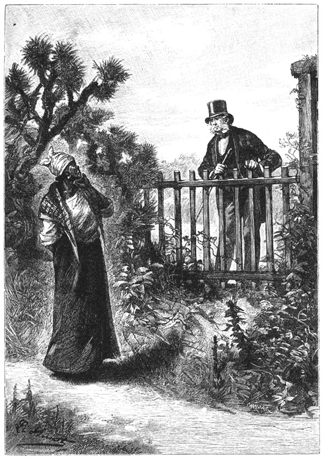Mr. William Andrew fragte über die Einfriedigung hinüber.
Sobald seine Flucht in der Stadt bekannt wurde, entstand eine förmliche Aufregung gegen den betrügerischen Handelsagenten, dessen Deficit eine sehr große Höhe erreichte.
An diesem Tage – es war der 17. Mai – begab sich Mr. William Andrew frühzeitig in das Prospect-House und mußte mit Bedauern constatiren, daß Mrs. Branican kein Vermögen mehr hatte.
Der betrügerische Curator hatte der unglücklichen Frau nicht einmal so viel gelassen, wie für ihre einfachsten Bedürfnisse nothwendig war.
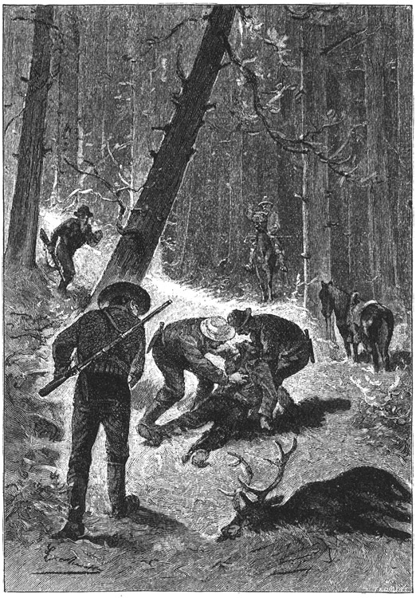Der Onkel Edward Starter starb plötzlich.
Mr. William Andrew traf sofort alle Vorkehrungen, welche nothwendig waren: Mrs. Branican wurde in eine Heilanstalt gebracht, wo sie gut aufgehoben war, und die Mulattin, die ihm wenig Vertrauen einflößte, wurde entlassen.
Wenn also Len Burker gehofft hatte, daß die Mulattin bei Dolly bleiben und ihn so über ihren Zustand und ihre künftigen Vermögensverhältnisse auf dem Laufenden erhalten werde, so täuschte er sich.
Nô, welche sofort das Prospect-House verlassen mußte, reiste noch denselben Tag ab. Die Polizei, welche ahnte, daß sie ihrer Herrschaft nachreisen werde, beobachtete sie durch einige Tage scharf: aber dieses listige Weib führte sie auf eine falsche Spur und war dann auf einmal verschwunden.
Jetzt war das Prospect-House öde, wo John und Dolly glücklich gelebt, wo sie so schön von der Zukunft ihres Kindes geträumt hatten!
Mrs. Branican wurde von Mr. William Andrew in die Heilanstalt des Dr. Brumley gebracht, der sie schon früher behandelt hatte. Würde ihr geistiger Zustand unter dieser Veränderung sich bessern? Man hoffte es vergebens. Sie blieb ebenso gleichgiltig, wie sie es im Prospect-House gewesen war.
Nur manchmal sang sie ein Wiegenlied, als wenn sie ein Kind in ihren Armen einschläfern wollte. Aber der Name ihres Kindes kam nie über ihre Lippen.
Während des Jahres 1876 kam keine Nachricht von John Branican. Die wenigen Personen, welche geglaubt hatten, daß, wenn der »Franklin« nicht zurückkehre, so doch der Capitän und seine Mannschaft zurückkehren würden, mußten diese Vermuthung fallen lassen. So war es auch mit der Hoffnung, die Schiffbrüchigen wieder aufzufinden; bis zum Jahre 1877 hatte man nichts von dem verschollenen Schiffe gehört.
Ebenso verhielt es sich mit dem Ehepaare Burker. Die Nachforschungen blieben fruchtlos, man wußte nicht, wohin die Leute sich geflüchtet hatten, man kannte nicht den Ort, wo sie sich unter falschem Namen aufhielten.
Und in der That hätte dieser Len Burker sich mit Recht über sein Pech beklagen können, denn zwei Jahre nach seiner Flucht verwirklichte sich die Zukunft, auf die er so viele Pläne gesetzt hatte.
Gegen Mitte Juni des Jahres 1878 erhielt Mr. William Andrew einen Brief, der an Dolly Branican adressirt war. Derselbe brachte die Nachricht, daß ihr Onkel Edward Starter plötzlich gestorben war, und zwar durch einen Unglücksfall. Das Gewehr eines seiner Jagdgenossen war unversehens losgegangen, und die Kugel hatte ihn mitten ins Herz getroffen, so daß er sofort starb.
Bei der Eröffnung des Testaments erfuhr man, daß Dolly Starter, die Frau des Capitän Branican, die Universalerbin sei. Der Zustand, in welcher sich die Erbin befand, hatte nichts an dem Testamente ändern können, weil der Verstorbene nicht wußte, daß sie irrsinnig war, und weil er auch nichts von dem verschollenen Schiffe erfahren hatte.
Keine dieser Nachrichten war in die Wildniß des Staates Tennessee gedrungen, in jene unzugängliche Gegend, die nach dem Willen Edward Starter's Briefen und Zeitungen verschlossen war.
Das Vermögen des Verstorbenen bestand in Grundstücken, Wäldern, Heerden, verschiedenen industriellen Einrichtungen und belief sich auf zehn Millionen Francs.
Derart war die Erbschaft, welche der zufällige Tod Edward Starter's seiner Nichte zukommen ließ. Mit welcher Freude hätte San-Diego diesen Reichthum der Familie Branican gepriesen, wenn Dolly noch ihren Mann und ihr Kind gehabt hätte, wenn sie noch im vollen Besitze ihrer geistigen Kräfte gewesen, wenn John hier wäre, um mit ihr diesen Reichthum zu theilen. Welchen Gebrauch hätte die mildthätige Frau davon gemacht! Wie vielen Unglücklichen hätte sie geholfen! Doch nein, dieses Vermögen mußte angelegt werden und vermehrte sich, ohne daß Jemand einen Nutzen davon hatte. Ob Len Burker in dem Orte, wohin er sich geflüchtet hatte, von dem Tode Edward Starter's und dem großen Vermögen, welches er hinterließ, gehört hatte, konnte man nicht sagen.
Mr. William Andrew, Verwalter des Vermögens Dollys, verkaufte die geerbten Besitzungen, da es schwer gewesen wäre, dieselben auf eine so große Entfernung zu verwalten. Da sich zahlreiche Käufer einfanden, so wurde der Besitz zu ausgezeichneten Bedingungen veräußert. Die Beträge dafür wurden in sicheren Werthpapieren angelegt, welche mit denen aus dem Besitze Edward Starter's in die festen Cassen der Bank von San-Diego kamen. Da der Lebensunterhalt der Mrs. Branican in der Heilanstalt des Dr. Brumley nach den vereinbarten Preisen nicht viel kostete, so vermehrte sich das Vermögen derart, daß die Unglückliche zu den reichsten Leuten von Californien gehörte.
Uebrigens wurde die Frage, ob die Kranke wegen der Veränderung der Vermögensverhältnisse aus der Heilanstalt genommen werden sollte, nicht erst aufgeworfen, da das Haus ihr allen Comfort bot und sie die beste Pflege erhielt, die ihr ihre Freunde nur wünschen konnten. Sie blieb also dort, und ohne Zweifel sollte sie daselbst dieses elende Leben vollenden, dem die Zukunft so viel Glücksgüter verheißen und zugeführt hatte.
Aber wenn auch die Zeit dahinfloh, so erinnerte man sich doch stets in San-Diego an das Unglück der Familie Branican, und die Sympathie für sie war ebenso groß und aufrichtig, wie am ersten Tage.
So begann nun das Jahr 1879, doch alle diejenigen, welche glaubten, daß es wieder ohne die geringste Veränderung der Lage verfließen wurde, täuschten sich gründlich.
In den ersten Monaten des neuen Jahres waren Dr. Brumley und die anderen Aerzte der Heilanstalt über die Veränderung des geistigen Zustandes der Mrs. Branican überrascht. Diese verzweifelnde Ruhe, diese apathische Gleichgiltigkeit, welche sie bisher gezeigt hatte, machte einer eigenthümlichen Aufregung Platz. Das war keine Krisis, in der der Geist vollständig in nichts aufging. Nein! Man hätte glauben können, daß Dolly das Bedürfniß in sich fühle, an dem geistigen Leben wieder theilzunehmen, daß ihre Seele trachtete, die Fesseln zu brechen, welche sie hinderten, sich auszudehnen. Die Kinder, welche man ihr zuführte, rangen ihr einen Blick, fast ein Lächeln ab. Es schien, als wäre Dolly ein Mensch, der sich fortwährend fragt, der nachgrübelt und in seinem Gedächtnisse ferne Erinnerungen sucht.
Sollte Mrs. Branican ihren Verstand wieder erhalten? War das eine Art Wiedergeburt, welche in ihr vor sich ging? Sollte ihr das geistige Leben wiedergegeben werden ... Ach, jetzt, wo sie kein Kind, keinen Gatten mehr hatte, war es da zu wünschen, daß diese Heilung, dieses Wunder geschehe, da sie doch nur viel unglücklicher werden würde!
Mochte dies wünschenswerth sein oder nicht, die Aerzte sahen eine Möglichkeit des Erfolges. Es wurde Alles in Bewegung gesetzt, um auf den Geist, auf das Herz der Mrs. Branican heilsamen Einfluß auszuüben. Man beschloß sogar, sie aus der Heilanstalt des Dr. Brumley zu nehmen und sie nach Prospect-House zurückzuführen. Und als dies geschehen war, da war sie sich sicher dieser neuen Veränderung bewußt, sie schien Interesse zu haben, sich in dieser neuen Lage zu befinden.
Mit den ersten Frühlingstagen – es war damals im April – wurden wieder die Spaziergänge in die Umgebung unternommen. Mrs. Branican wurde mehrmals an den Strand der Island-Spitze geführt. Die wenigen Schiffe, welche in der offenen See fuhren, verfolgte sie mit den Blicken, und ihre Hand streckte sich gegen den Horizont aus. Aber sie suchte nicht mehr, wie damals, davonzueilen und dem Dr. Brumley zu entfliehen, der sie begleitete. Sie fürchtete sich nicht vor dem donnernden Brechen der Wogen. Dachte sie daran, wie draußen auf dem Meere der »Franklin« dahinfuhr, als er den Hafen von San-Diego verließ und seine großen Segel hinter den Felsenspitzen verschwanden? ... Ja ... Vielleicht! Und ihre Lippen murmelten eines Tages deutlich den Namen John! ...
Es war klar, daß die Krankheit der Mrs. Branican soeben in ein Stadium getreten war, das mit der größten Sorgfalt studiert sein wollte. Indem sie sich wieder an das Leben im Prospect-House gewöhnte, erkannte sie hier und da die ihr theuren Gegenstände. Eine Photographie des Capitän John, welche an der Wand ihres Zimmers hing, begann ihre Aufmerksamkeit zu erregen. Jeden Tag sah sie beharrlicher hin, und eine Thräne entrann, noch unbewußt, ihren Augen.
Ja, wenn es nicht sicher wäre, daß der »Franklin« untergegangen war, wenn John hätte wiederkommen können, wenn er plötzlich erschienen wäre, dann hätte Dolly ihren Verstand wieder erhalten! ... Aber auf die Rückkehr Johns konnte man nicht mehr rechnen.
Deshalb beschloß Dr. Brumley, bei der armen Frau eine nervöse Erschütterung hervorzubringen, die nicht ohne Gefahr war. Er wollte dies thun, bevor die beobachtete Besserung wieder schwinde, bevor die Kranke wieder in jenen Stumpfsinn falle, der ihr in den vier Jahren so eigenthümlich war. Da es schien, daß ihre Seele bei dem Hauche der Erinnerungen vibrirte, so sollte sie eine Erschütterung erhalten, mochte sie auch dabei zu Grunde gehen. Ja! Lieber so, als wenn Dolly wieder in das Nichts versank, das so viel ist wie der Tod.
Das war auch die Meinung Mr. William Andrew's, und er ermuthigte den Dr. Brumley, diesen Versuch zu machen.
Eines Tages – es war der 27. Mai – holten Beide Mrs. Branican im Prospect-House ab. Ein Wagen, der sie an der Thür erwartete, führte sie durch die Straßen von San-Diego bis zu den Quais des Hafens und hielt bei der Landungsbrücke, wo ein Schraubendampfer die Passagiere aufnahm, welche nach Loma fahren wollten.
Die Absicht des Dr. Brumley war, nicht die Scene der Katastrophe noch einmal vorzuführen, sondern Mrs. Branican in die Lage zu versetzen, worin sie sich befand, als sie plötzlich wahnsinnig wurde.
In diesem Augenblicke leuchtete das Auge Dollys sonderbar auf. Sie wurde von einer eigenthümlichen Bewegung hingerissen, ein förmliches Zucken ging durch ihren Körper ...
Dr. Brumley und Mr. William Andrew führten sie zu dem Schraubendampfer hin, und kaum hatte sie denselben betreten, so war man von ihrem Benehmen noch mehr überrascht. Sie setzte sich nämlich auf denselben Platz, auf dem sie seinerzeit mit dem Kinde gesessen hatte. Dann sah sie in den Golf hinaus gegen die Spitze von Loma, als wenn sie den »Boundary« gesucht hätte.
Die Passagiere des Schiffes hatten Mrs. Branican erkannt, und wurden von Mr. William Andrew in Kenntniß gesetzt, welche Probe man hier vornehmen wollte, so daß Alle in tiefer Erregung waren. Sollten sie Zeugen der Auferstehungsfeier werden ... nicht der Auferstehung eines Körpers, sondern der einer Seele?
Es braucht nicht erst gesagt zu werden, daß alle Maßregeln getroffen worden waren, damit sich Dolly nicht über Bord ins Meer stürze.
Schon war man eine halbe Meile gefahren, und noch immer sah Dolly nicht auf die Oberfläche des Golfes. Sie schaute noch immer gegen die Spitze von Loma und sah dann der Schwenkung eines Schiffes zu, das mit aufgehißten Segeln auf den Platz der Quarantaine fuhr.
Das Antlitz Dollys war ein ganz anderes ...
Sie drehte sich um, indem sie das Schiff ansah ...
Das war nicht der »Franklin«, und sie täuschte sich nicht. Aber sie schüttelte mit dem Kopfe und sagte:
»John! ... Mein John! ... Auch Du wirst bald zurückkommen ... und ich werde Dich erwarten!«
Plötzlich schienen ihre Blicke das Wasser des Golfes zu durchdringen, den sie soeben erkannt hatte. Sie stieß einen herzzerreißenden Schrei aus und wandte sich dann an Mr. William Andrew:
»Herr Andrew ... Sie ... und er ... mein kleiner Wat ... mein Kind ... mein armes Kind! ... da ... da ... ich erinnere mich! ... ich erinnere mich!«
Und sie fiel auf die Knie und weinte bitterlich.
Mrs. Branican, die ihren Verstand wieder erhalten hatte, war wie vom Tode erstanden. Da sie dieser Blitz der Erinnerung nicht niedergeschlagen hatte, konnte man, durfte man hoffen, daß diese Genesung sicher war? Würde ihre geistige Kraft nicht noch einmal unterliegen, wenn sie erfahren würde, daß seit vier Jahren alle Nachrichten über den »Franklin« ausgeblieben waren, daß man ihn für verloren halten mußte, Menschen wie Ladung, daß sie nie mehr den Capitän John wiedersehen werde? ...
Dolly, die durch diese nervöse Erschütterung ganz gebrochen war, wurde sofort nach Prospect-House zurückgebracht. Weder Mr. William Andrew noch der Dr. Brumley wollten sie verlassen, und Dank den ergebenen Frauen, die sie bedienten, wurde ihr jede Pflege zutheil, welche ihr Zustand erheischte.
Aber die nervöse Aufregung war so groß gewesen, daß sie von einem heftigen Fieber ergriffen wurde. Sie lag sogar einige Tage im Delirium, was die Aerzte sehr beunruhigte, obwohl Dolly in den vollen Wiederbesitz ihrer geistigen Kräfte gelangte. In Wahrheit, als der Augenblick gekommen war, ihr die ganze Tragweite des Unglücks mitzutheilen, da mußte viel Vorsicht beobachtet werden.
Und als Dolly zum erstenmale fragte, seit wie langer Zeit sie krank gewesen sei, da erwiderte Dr. Brumley, der auf diese Frage gefaßt war:
»Seit zwei Monaten!
– Erst ... seit zwei Monaten ...« sagte sie leise.
Es schien ihr, als wären schon hundert Jahre verflossen.
»Zwei Monate! fügte sie hinzu. John kann ja noch nicht zurück sein, da erst zwei Monate verflossen sind ... Und weiß er, daß unser armes Kind? ...«
– Herr Andrew hat es geschrieben ... erwiderte der Arzt ohne Zögern.
– Und hat man irgend welche Nachrichten über den »Franklin« erhalten?«
Es wurde der Frau geantwortet, daß der Capitän John von Singapore hatte schreiben sollen, aber die Briefe wären noch nicht angekommen, doch nach den Seenachrichten müßte man glauben, daß der »Franklin« binnen Kurzem nach Indien kommen werde, und daß die Depeschen ebenfalls bald eintreffen müßten.
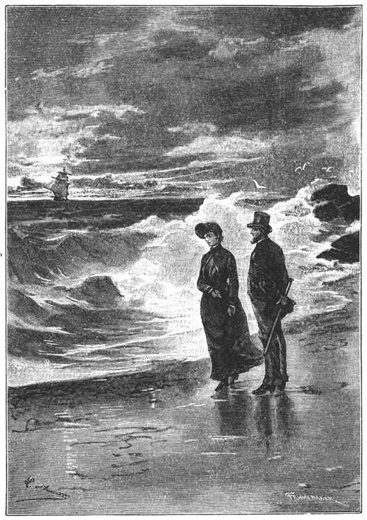Sie fürchtete sich nicht vor dem donnernden Brechen der Wogen.
Als nun Dolly fragte, warum Jane Burker nicht bei ihr sei, erwiderte der Arzt, daß Mr. und Mrs. Burker verreist wären, und daß man nicht wüßte, wann sie zurückkehrten.
Es fiel nun Mr. William Andrew die schwere Aufgabe zu, der Mrs. Branican den Untergang des »Franklin« mitzutheilen. Aber man war übereingekommen, daß er ihr das erst dann sagen sollte, wenn ihr Geist stark genug wäre, diesen neuen Schlag zu ertragen. Er mußte sogar dafür sorgen, daß sie Alles nur nach und nach erfahre, woraus sie dann selbst den Schluß ziehen konnte, daß Niemand den Schiffbruch überlebt habe.
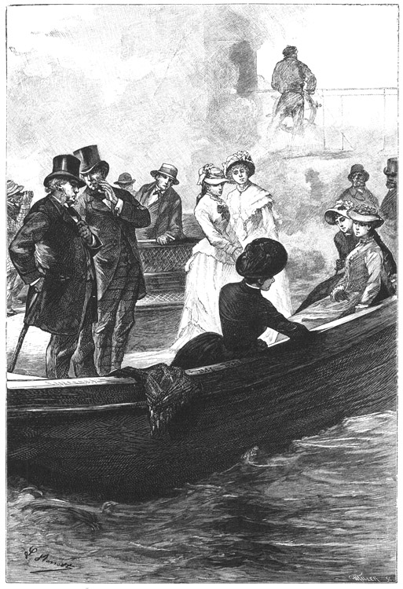Die Passagiere hatten Mrs. Branican erkannt.
Die Erbschaftsangelegenheit wurde ebenfalls auf eine spätere Zeit verschoben, denn Mrs. Branican würde früh genug erfahren, daß sie ein Vermögen besitze, welches ihr Gatte nicht mit ihr theilen konnte.
Während der folgenden vierzehn Tage stand Mrs. Branican in gar keiner Verbindung mit der Außenwelt. Mr. William Andrew und der Dr. Brumley waren die Einzigen, die bei ihr Zutritt hatten. Das Fieber, welches anfangs sehr heftig auftrat, nahm allmählich ab und sollte wahrscheinlich bald ganz verschwinden. Der Arzt hatte sowohl aus Gesundheitsrücksichten, als auch um der Beantwortung aller Fragen zu entgehen, welche die Kranke stellte, ihr befohlen, das größte Stillschweigen zu beobachten. Ueberhaupt vermied man vor ihr jede Berührung der Vergangenheit, was ihr nur immer verrathen konnte, daß seit dem Tode ihres Kindes, seit der Abreise ihres Mannes vier Jahre verflossen waren. Während einiger Zeit galt für sie nicht das Jahr 1879, sondern 1875.
Ueberhaupt hegte Dolly nur einen Wunsch oder vielmehr eine natürliche Ungeduld, sobald wie möglich einen Brief von John zu erhalten. Da sie dachte, daß der »Franklin« bald in Calcutta ankäme, wenn er überhaupt nicht schon dort war, so würde das Haus Andrew bald durch ein Telegramm in Kenntniß gesetzt werden; die überseeische Post werde nicht lange auf sich warten lassen ... Dann würde sie selbst, sobald sie die Kraft hätte, an John schreiben ... Ach! was sollte sie ihm schreiben? ... Es wäre der erste Brief, den sie ihm seit ihrer Hochzeit schreiben würde, da sie nie vor der Abfahrt des »Franklin« getrennt waren ... Ja, wie viel Trauriges würde dieser erste Brief enthalten!
Und nun erinnerte sie sich an die Vergangenheit, und sie beschuldigte sich, den Tod ihres Kindes herbeigeführt zu haben! ... Dieser unglückselige Tag, der 31. März, fiel ihr ein ... Wenn sie das Kind zu Hause gelassen hätte, so würde es heute noch leben! ... Warum hatte sie es mit auf das Schiff genommen? ... Warum hatte sie den Vorschlag des Capitän Ellis nicht angenommen, an Bord des Schiffes zu bleiben bis zum Quai von San-Diego? ... Das fürchterliche Unglück hätte sich nicht ereignet! ... Und warum hatte sie auch in einem unüberlegten Augenblicke das Kind aus den Armen der Amme gerissen, gerade als der Dampfer sich plötzlich wendete, um nicht zusammenzustoßen! ... Sie war gestürzt, und das Kind war ihr aus den Armen gefallen ... Ihr, der Mutter ... und sie hatte nicht den Gedanken gehabt, es fest zu halten ... Und als der Matrose sie an Bord getragen hatte, war das Kind nicht mehr in ihren Armen! ... Armes Kind, das nicht einmal ein Grab hatte, über dem seine Mutter weinen konnte!
Alle diese Bilder, die an ihrem Geiste vorüberzogen, gaben ihr nicht jene Ruhe, der sie so bedurfte. Ein heftiges Delirium, hervorgerufen durch einen neuen Fieberanfall, machte Dr. Brumley sehr viel Sorge, zum Glück ging diese Krisis aber vorüber und verschwand endlich ganz. Man hatte nichts mehr wegen des geistigen Zustandes der Mrs. Branican zu fürchten. Der Augenblick kam heran, wo Mr. William Andrew ihr Alles sagen wollte.
Sobald Dolly ihrer Wiedergenesung entgegenging, durfte sie das Bett verlassen; man legte sie auf eine Chaiselongue an den Fenstern ihres Zimmers, von wo sie den ganzen Golf von San Diego überblicken konnte. Hier verharrte sie stundenlang unbeweglich.
Dann wollte Dolly an John schreiben, denn es drängte sie, ihm Alles von dem Kinde zu erzählen, das er nicht mehr wiedersehen würde; sie schüttete so ihren ganzen Schmerz aus in einem Briefe, den ihr Gatte nie erhalten sollte.
Mr. William Andrew nahm den Brief in Empfang und versprach, ihn nach Indien zu schicken, worauf Mrs. Branican wieder ziemlich ruhig wurde und nur in der Hoffnung lebte, auf directem oder indirectem Wege über den »Franklin« Nachricht zu erhalten.
Aber dies konnte nicht so fort gehen, denn Dolly mußte früher oder später, und zwar aus der großen Vorsicht erkennen, daß man ihr etwas verberge. Je mehr sie sich in den Gedanken hineinlebte, daß sie bald einen Brief von John erhalten werde, desto furchtbarer mußte der Schlag sein!
Und dies schien nur allzu sicher zu sein in Folge einer Unterredung, welche Mrs. Branican und Mr. William Andrew am 19. Juni hatten.
Zum erstenmale war Dolly in den Garten des Prospect-House hinab gegangen, wo Mr. William Andrew sie auf einer Bank sitzen sah. Er setzte sich neben sie, nahm sie bei der Hand und drückte diese.
Mrs. Branican fühlte sich schon kräftig genug. Ihr Antlitz hatte den früheren Teint wieder angenommen, obgleich ihre Augen noch immer verweint waren.
»Ich sehe, daß Ihre Genesung rasche Fortschritte macht, liebe Dolly, sagte Mr. William Andrew. Ja, es geht Ihnen schon besser!
– In der That, Herr Andrew, erwiderte Dolly, aber ich komme mir in diesen zwei Monaten so gealtert vor! ... Wie wird mich da mein armer John verändert finden! ... Und dann muß ich ihn allein erwarten! ... Nur ich bin noch da ...
– Muth, liebe Dolly, Muth! ... Nur nicht verzweifeln! ... Ich bin jetzt Ihr Vater ... ja, Ihr Vater ... und ich will, daß Sie mir gehorchen!
– Lieber Herr Andrew!
– Das will ich hören!
– Der Brief, den ich John geschrieben habe, ist doch schon fort? ... fragte Dolly.
– Gewiß ... und Sie müssen geduldig seine Antwort abwarten! ... Die indische Post verspätet sich oft ... Da, Sie weinen schon wieder! ... Ich bitte Sie, weinen Sie nicht! ...
– Kann ich anders ... Herr Andrew? Wenn ich bedenke ... und bin ich nicht die Ursache ... ich ...
– Nein, arme Mutter, nein! Gott hat Sie grausam geschlagen, aber er will auch, daß jeder Schmerz ein Ende habe ...
– Gott! sagte Mrs. Branican leise, Gott, der mir meinen John zurückbringen soll!
– Liebe Dolly, ist der Arzt heute schon hier gewesen? fragte Mr. William Andrew.
– Ja, und meine Gesundheit kommt ihm heute bedeutend besser vor! ... Ich fühle mich kräftig, und bald werde ich ausgehen können ...
– Nicht früher, als er es erlaubt, Dolly.
– Nein, Herr Andrew, ich verspreche Ihnen, daß ich keine Unvorsichtigkeit begehen werde.
– Ich rechne auf Ihr Versprechen.
– Sie haben noch nichts Näheres von dem »Franklin« gehört, Herr Andrew?
– Nein, und ich wundere mich auch nicht darüber ... Die Schiffe brauchen oft sehr lange Zeit, bis sie nach Indien kommen ...
– John hätte von Singapore schreiben können? ... Hat er dort keinen Aufenthalt genommen?
– O ja, Dolly! ... Aber wenn er die Post nur um einige Stunden versäumt hat, so müssen sich seine Briefe um wenigstens vierzehn Tage verspäten.
– Also ... Sie finden nichts sonderbares darin, daß John Ihnen bisher noch keinen Brief hat schicken können? ...
– Keineswegs ... erwiderte Mr. William Andrew, welcher fühlte, wie dieses Gespräch ihn in Verlegenheit setzte.
– Und die Schiffszeitungen haben seine Fahrt noch nicht erwähnt? fragte Dolly.
– Nein ... seitdem er dem »Boundary« begegnet ist ... vor ungefähr ...
– Ja ... vor ungefähr zwei Monaten ... Und warum haben sich die zwei Schiffe begegnen müssen! ... Ich wäre nicht an Bord des ›Boundary‹ gegangen ... und mein armes Kind« ...
Mrs. Branican fing an zu weinen.
»Dolly, meine liebe Dolly, weinen Sie nicht, ich bitte Sie, weinen Sie nicht!
– Ach! Herr Andrew, ich weiß nicht ... eine Ahnung sagt mir manchmal ... ich kann es mir nicht erklären ... es kommt mir vor, als wenn ein neues Unglück ... ich mache mir so viele Sorgen um John ...
– Das brauchen Sie nicht, Dolly! ... Es ist kein Grund zur Besorgniß vorhanden ...
– Herr Andrew, fragte Mrs. Branican, könnten Sie mir nicht mehrere Schiffszeitungen senden, worin einige Seenachrichten stehen? Ich möchte sie lesen ...
– Gewiß, meine liebe Dolly, ich werde es thun ... Uebrigens, wenn man etwas über den ›Franklin‹ erfährt ... sei es, daß er auf dem Meere gesehen, sei es, daß seine bevorstehende Ankunft in Indien signalisirt wurde, so würde ich es zuerst wissen, und sobald ...«
Aber er mußte dem Gespräche eine andere Wendung geben, denn die Frau würde schließlich seine zögernden Antworten bemerkt haben, umsomehr, als er sie nicht anzusehen wagte, wenn sie ihn noch weiter fragte. Auch wollte er zum erstenmal von dem Tode ihres Onkels und dem ungeheuren Vermögen sprechen, das ihr zugefallen war, als Dolly fragte:
»Jane Burker und ihr Mann sind verreist, wie man mir erzählte ... Ist es lange her, daß sie San-Diego verlassen haben? ...
– Nein ... seit zwei bis drei Wochen ...
– Und werden sie nicht bald zurückkommen?
– Ich weiß nicht ... erwiderte Mr. William Andrew. Wir haben keine Nachricht erhalten ...
– Man weiß also nicht, wohin sie gereist sind?
– Man weiß es nicht, meine liebe Dolly. Len Burker war sehr wichtige Geschäfte eingegangen ... die ihn weit ... sehr weit gerufen haben ...
– Und Jane? ...
– Mrs. Burker hat ihren Gatten begleiten müssen ... und ich kann Ihnen nicht sagen, was vorgegangen ist ...
– Arme Jane, sagte Mrs. Branican. Ich liebe sie so sehr und ich werde glücklich sein, sie wieder zu sehen ... Nicht wahr, sie ist die einzige Verwandte, die ich noch habe?«
Sie dachte weder mehr an Edward Starter, noch an die Familienbande, die sie mit ihm verknüpften.
»Wie kommt es, daß Jane mir nicht ein einzigesmal geschrieben hat? fragte sie.
– Meine liebe Dolly ... Sie waren schon sehr krank, als Mr. Burker und seine Frau San-Diego verließen ...
– In der That, Herr Andrew, warum soll man Jemandem schreiben, der nichts versteht! ... Arme Jane, wie ist sie zu beklagen! ... Sie hat ein hartes Leben gehabt ... ich habe immer gefürchtet, daß Len Burker sich in irgend eine gefährliche Speculation einlassen wird ... Vielleicht befürchtete Jane dasselbe.
– Und doch hätte Niemand so etwas erwartet ...
– Hat vielleicht Len Burker in Folge schlechter Geschäfte San-Diego verlassen müssen? fragte Dolly lebhaft, indem sie Mr. William Andrew in die Augen sah, da er sichtlich verlegen wurde. Herr Andrew, sprechen Sie! ... verhehlen Sie mir nichts! ... ich will Alles wissen! ...
– Nun, Dolly, ich will Ihnen nicht ein Unglück verbergen, welches Sie sonst bald erfahren würden ... Ja, in der letzten Zeit hatte sich die Lage Len Burker's sehr verschlechtert ... Er konnte seinen Verpflichtungen nicht nachkommen ... er wurde von allen Seiten gedrängt ... und um der Verhaftung zu entgehen, mußte er flüchten ...
– Und Jane folgte ihm?
– Er hat sie gewiß dazu gezwungen, und Sie wissen, daß sie keinen Willen hatte ...
– Arme Jane! ... arme Jane! sagte die Frau leise. Wie beklage ich sie, und wenn ich ihr hätte helfen können ...
– Sie hätten es thun können, ja ... Sie hätten Len Burker retten können, wenn nicht um seinetwillen, der gar keine Sympathie verdiente, so wenigstens wegen seiner Frau ...
– Und John hätte sicher, ich weiß es, einer solchen Verwendung unseres kleinen Vermögens zugestimmt.«
Mr. William Andrew hütete sich wohl zu erwidern, daß ihre Mitgift von Len Burker verbraucht worden war. Er hätte dann sagen müssen, daß er ihr Curator gewesen war, und sie würde sich vielleicht gefragt haben, wie in so kurzer Zeit – in zwei Monaten – sich so Vieles konnte ereignet haben. So erwiderte er ihr nur:
»Sprechen Sie nichts von Ihrem bescheidenen Vermögen, liebe Dolly ... Es hat sich sehr verändert.
– Was wollen Sie damit sagen?
– Ich will damit sagen, daß Sie reich sind ... sehr reich.
– Ich?
– Ihr Onkel Edward Starter ist gestorben ...
– Gestorben? ... Er ist gestorben! ... Und wann?
– Am ...«
Mr. William Andrew hätte sich bald verrathen, indem er den wahren Todestag angeben wollte, also vor zwei Jahren, was dann die ganze Wahrheit hätte erkennen lassen.
Aber Dolly dachte jetzt nur, daß der Tod ihres Onkels, das Verschwinden ihrer Cousine sie allein in der Welt stehen ließ. Und als sie erfuhr, daß sie von dem Onkel, den sie kaum gekannt und von dem sie mit John durch Beerbung eine glänzende Zukunft erwartet hatte, zwei Millionen Dollars erhalten hatte, so sah sie darin nur die Gelegenheit, wie viel Gutes sie hätte thun können.
»Ja, Herr Andrew, ich wäre der armen Jane zu Hilfe gekommen ... Ich hätte sie vor dem Ruin und der Schande bewahrt! ... Wo ist sie? ... Wo kann sie sein ... was wird aus ihr werden? ...«
Mr. William Andrew konnte nur wiederholen, daß man Nachforschungen angestellt habe, die aber zu keinem Resultate führten. Len Burker hatte sich vielleicht in eine entlegene Gegend der Vereinigten Staaten geflüchtet oder vielleicht Amerika ganz verlassen. Es war unmöglich gewesen, es zu erfahren.
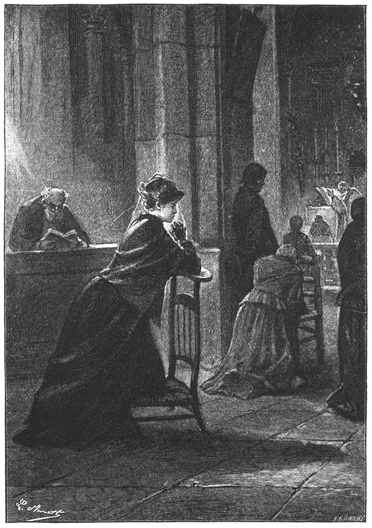Als sie in einer ziemlich finsteren Ecke niederkniete.
»Doch wenn Jane und er erst seit einigen Wochen aus San-Diego verschwunden sind, versetzte Mrs. Branican, so wird man doch erfahren ...
– Ja ... einige Wochen« ... beeilte sich Mr. William Andrew zu antworten.
Aber in diesem Augenblicke dachte Mrs. Branican nur daran, dass, Dank der Erbschaft Edward Starter's, John nicht mehr nöthig hätte, in die See zu stechen ... daß er sie nie mehr verlassen ... daß diese Reise für das Haus Andrew die letzte sein würde, die er unternommen hätte ...
Und war es nicht auch die letzte, da der Capitän John nicht mehr zurückkehren sollte!
»Lieber Herr Andrew, rief Dolly, wenn John einmal zurück sein wird, so darf er nicht mehr fort ... Seine Begeisterung für das Seemannsleben muß er mir opfern! ... Wir werden zusammen leben ... für immer zusammen! ... Nichts wird uns mehr trennen!«
Bei dem Gedanken, daß dieses Glück durch ein einziges Wort vernichtet werden könnte, ein Wort, das er bald aussprechen müßte, konnte Mr. William Andrew seine Fassung nicht mehr bewahren. Er beeilte sich, diesem Gespräch ein Ende zu machen; doch bevor er sich entfernte, nahm er Mrs. Branican das Versprechen ab, keine Unvorsichtigkeit zu begehen, sich nicht hinauszuwagen, ehe der Arzt es ihr nicht erlaubt hätte. Seinerseits wiederholte er, daß er, sobald er direct oder indirect eine Nachricht über den »Franklin« erhalten werde, dies sofort werde im Prospect-House melden lassen.
Als Mr. William Andrew diese Unterredung Dr. Brumley mittheilte, konnte dieser nicht umhin, seine Besorgniß auszudrücken, eine Indiscretion möchte Mrs. Branican den ganzen Sachverhalt erkennen lassen: daß ihr Wahnsinn vier Jahre gedauert, daß man seit vier Jahren nichts über den »Franklin« gehört hätte, daß sie John nie mehr sehen würde.
Es wurde daher beschlossen, daß in ungefähr acht Tagen, wenn Mrs. Branican durch keinen plausiblen Grund mehr im Hause zurückgehalten werden konnte, sie von Allem in Kenntniß gesetzt werde.
»Möge Gott ihr Kraft zu dieser Prüfung geben!« sagte Mr. William Andrew.
In der letzten Juniwoche lebte Mrs. Branican so, wie sie es immer gewohnt war. Dank der Pflege, mit der man sie umgab, erhielt sie ebenso ihre physischen Kräfte wieder, wie sich zu gleicher Zeit ihr Geist stärkte. Auch Mr. William Andrew wurde durch ihre Fragen immer mehr in Verlegenheit gebracht, da sie sich oft nach Dingen erkundigte, die er ihr nicht sagen durfte.
Am 23. Juni Nachmittags besuchte er sie, um ihr eine bedeutende Summe Geldes zur Verfügung zu stellen und ihr Rechenschaft über ihr Vermögen abzulegen, das in der Bank von San-Diego sicher angelegt war. An diesem Tage war Mrs. Branican gegen Alles, was Mr. William Andrew ihr sagte, auffallend gleichgiltig. Sie hörte ihm kaum zu. Sie sprach nur von John, sie dachte nur an ihn. Wie! Noch kein Brief? ... Dies beunruhigte sie sehr! ... Wieso kam es, daß das Haus Andrew nicht einmal eine Depesche erhielt, welche die Ankunft des »Franklin« in Indien anzeigte?
Mr. William Andrew suchte Dolly zu beruhigen, indem er sagte, daß er soeben ein Telegramm nach Calcutta gesendet habe und daß jeden Tag die Antwort eintreffen müsse. Kurz, wenn es ihm gelang, sie von diesem Gedanken abzubringen, so setzte sie ihn neuerdings in große Verlegenheit, als sie ihn fragte:
»Herr Andrew, es lebt ein Mann, von dem ich noch nicht mit Ihnen gesprochen habe ... der nämlich, der mir das Leben gerettet hat und der mein armes Kind nicht hat retten können ... der Matrose ...
– Der Matrose? wiederholte er nicht ohne sichtliches Zögern.
– Ja ... dieser muthige Mann ... dem ich das Leben verdanke ... Ist er belohnt worden?
– Ja, Dolly.«
Und so verhielt es sich auch in der That.
»Ist er in San-Diego, Herr Andrew?
– Nein ... liebe Dolly ... Nein! Ich habe gehört, daß er wieder in die See gestochen ist ...«
Das war auch wahr.
Nachdem er den Hafendienst verlassen hatte, schiffte er sich wieder ein.
»Aber wenigstens werden Sie mir sagen können, wie er heißt? fragte Mrs. Branican.
– Er heißt Zach Fren.
– Zach Fren? ... Gut! ... Ich danke Ihnen, Herr Andrew,« erwiderte Dolly. Sie bestand nicht weiter darauf, etwas Näheres über den Seemann zu hören, nachdem sie jetzt seinen Namen kannte.
Aber seit jenem Tage kam ihr dieser Zach Fren nicht aus dem Sinn. Er war von nun an in ihrem Geiste unauslöschlich mit der Erinnerung an die Katastrophe in dem Golfe von San Diego verknüpft. Diesen Zach Fren würde sie nach Beendigung seiner Fahrt wiederfinden ... Sie würde erfahren, auf welchem Schiffe er sich befinde ... wahrscheinlich ein Schiff aus dem Hafen von San Diego ... Dieses Schiff würde in einem halben Jahre ... in einem Jahre zurückkommen ... und dann ... gewiß würde dann der »Franklin« vor ihm ankommen ... John und sie würden zusammen Zach Fren belohnen ... ihm diese Dankesschuld abzahlen ... O, John würde bald zurückkehren ... er würde auf sein Commando verzichten und dann würden sie sich nie mehr trennen!
»Warum werden sich an diesem Tage unsere Küsse, dachte sie, mit den Thränen vereinigen müssen?«
Unterdessen wünschte und fürchtete Mr. William Andrew jenes Gespräch, in dem Mrs. Branican von dem definitiven Verschwinden des »Franklin«, dem Untergange seiner Bemannung und seines Capitäns hören würde. Würde ihr Geist, der einmal erschüttert wurden war, diesen neuen Schlag ertragen? Obgleich vier Jahre seit der Abreise Johns verflossen waren, wäre das nicht gerade so gewesen, als ob er erst gestern gestorben wäre? Die Zeit, welche so viel Schmerz geheilt hatte, war für sie nicht weitergeschritten.
So lange Dr. Brumley in dem Prospect-House verweilte, konnte man hoffen, daß keine Indiscretion begangen werden würde. Mr. William Andrew und Dr. Brumley hatten in dieser Hinsicht ihre Vorsichtsmaßregeln schon getroffen, indem sie Zeitungen und Briefe dem Prospect-House fernhielten. Aber Dolly fühlte sich stark genug, um auszugehen, und obwohl es ihr der Arzt noch nicht erlaubt hatte, konnte sie es nicht doch thun? ... Auch durfte man nicht länger zögern, und Dolly mußte bald genug erfahren, daß man auf die Rückkehr des »Franklin« nicht mehr rechnen könnte.
Nach der Unterredung, welche sie mit Mr. William Andrew gehabt hatte, beschloß Mrs. Branican auszugehen, ohne ihre Bedienung in Kenntniß zu setzen, die sicher Alles gethan hätte, um sie davon abzubringen. Wenn auch dieses Ausgehen ihrem Gesundheitszustande nicht schaden konnte, so konnte es doch von den traurigsten Folgen für ihren Geist begleitet sein, wenn der Fall eintrat, daß ihr Jemand ohneweiters die Wahrheit sagte.
Indem Mrs. Branican das Prospect-House verließ, wollte sie einen Gang wegen Zach Fren's machen.
Seitdem sie den Namen dieses Matrosen wußte, hatte sie nur einen Gedanken gehabt.
»Man hat sich seiner angenommen, sagte sie wiederholt zu sich ... Ja! ... Ein wenig Geld wird ihm gegeben worden sein, und ich habe nichts thun können ... Dann ist Zach Fren vor fünf bis sechs Wochen ausgefahren ... Aber vielleicht hat er Familie ... eine Frau ... Kinder ... gewiß arme Leute! Es ist meine Pflicht, sie aufzusuchen, sie zu unterstützen ... Ich werde sie besuchen ... und Alles thun, was in meinen Kräften steht.«
Wenn Mrs. Branican deswegen Mr. William Andrew gefragt hätte, wie würde dieser sie von einem Acte der Pflicht und Dankbarkeit haben abbringen können?
Am 21. Juni, Morgens 9 Uhr, verließ Dolly das Haus; Niemand hatte es bemerkt. Sie war schwarz gekleidet – die Trauer um ihr Kind, das, wie sie glaubte, vor zwei Monaten gestorben war. Nicht ohne tiefe Bewegung überschritt sie die Schwelle der Gartenthür – allein, was noch nie wieder vorgekommen war.
Das Wetter war schön und die Hitze schon ziemlich groß, wenn sie auch durch eine frische Brise gemildert wurde.
Mrs. Branican wandte sich den Vierteln der Oberstadt zu. Da sie ganz in Gedanken war, entgingen ihr zahlreiche Veränderungen und Neubauten in diesem Viertel, die sonst hätten ihre Aufmerksamkeit erregen müssen. Uebrigens waren nicht so große Neuerungen vorgenommen worden, die sie den Weg zu dem Golfe nicht hätten finden lassen.
Sie bemerkte auch nicht, daß sie zwei oder drei Personen, die sie kannten, mit großem Erstaunen ansahen.
Als sie an einer katholischen Kapelle vorüberging, die in der Nachbarschaft des Prospect-House stand, fühlte sie den Wunsch einzutreten.
Der Priester begann eben die Messe zu lesen, als sie in einer ziemlich finsteren Ecke niederkniete. Hier betete sie nun inbrünstig für ihr Kind, für ihren Gatten, für Alle, die sie liebte. Die wenigen Kirchenbesucher hatten sie nicht bemerkt, und als sie die Kapelle verließ, waren jene schon fort.
Jetzt wunderte sie sich auf einmal über den Altar, der nicht derselbe war, vor welchem sie so oft ihre Andacht verrichtet hatte. Der viel schönere und prächtigere Altar stand in einem ganz anderen Theile der Kapelle, der ihr wie neugebaut vorkam. War denn die Kapelle vergrößert worden?
Das war aber nur ein flüchtiger Eindruck, der sofort wieder verschwand, als Mrs. Branican die Straßen dieses Handelsviertels hinabging. Aber bei jedem Schritte konnte ihr die Wahrheit in die Augen springen ... ein Anschlagzettel mit dem Datum ... ein Fahrplan der Dampfschiffe ... die Ankündigung eines Festes oder einer Vorstellung ... welche die Jahreszahl 1879 trugen ... Und wenn Dolly auf solche Weise rasch erfahren würde, daß Mr. William Andrew und Dr. Brumley sie getäuscht hatten ... daß ihre geistige Krankheit nicht einige Wochen, sondern vier Jahre gedauert hatte ... und woraus sich ergeben mußte, daß der »Franklin« nicht vor zwei Monaten, sondern vor vier Jahren San-Diego verließ ... daß John nicht mehr zurückkehren ... daß sie ihn nicht mehr wiedersehen werde! ...
Mrs. Branican ging schnell den Hafenquais zu, als ihr auf einmal einfiel, an dem Hause Len Burker's vorüberzugehen. Es wäre ja nur ein kleiner Umweg.
»Arme Jane!« sagte sie leise.
Als sie zu dem Hause in der Fleet Street kam, erkannte sie dasselbe kaum – was sie nicht nur überraschte, sondern auch lebhaft beunruhigte ...
Anstatt des engen, düsteren Hauses, das sie kannte, stand ein großes Gebäude in angelsächsischem Stile da; es hatte mehrere Stockwerke, hohe Fenster, im Erdgeschosse starke Gitter. Auf dem Dache erhob sich eine Fahnenstange, an deren Spitze eine Flagge mit den Initialen H. W. flatterte. Neben der Thüre war ein Schild, auf dem in goldenen Buchstaben stand:
Harris Wadanton & Cie.
Dolly glaubte zuerst, sie sei nicht in der richtigen Straße. Sie sah nach rechts und nach links. Nein! Sie war doch an der Ecke der Fleet Street, und das Haus der Jane Burker stand doch hier! ...
Dolly legte die Hand auf ihre Augen ... Eine unerklärliche Ahnung presste ihr das Herz zusammen ... Sie konnte sich keine Rechenschaft von dem geben, was sie da sah ...
Das Geschäftshaus Mr. William Andrew's lag nicht weit, und indem Dolly schnell dahinschritt, bemerkte sie es bei einer Biegung der Straße. Sie wollte zuerst dort eintreten ... Nein, sie würde sich erst auf dem Rückwege hinbegeben ... zuerst müßte sie die Familie Zach Fren's aufsuchen ... Sie glaubte, die Adresse des Matrosen in der Kanzlei der Schraubendampfer zu erfahren ...
Nachdenklich, mit unsicherem Blicke und gepreßtem Herzen setzte Dolly ihren Weg fort. Sie sah sich jetzt die Leute an, denen sie begegnete ... Sie fühlte den unwiderstehlichen Drang in sich, auf diese Menschen zuzugehen, um sie zu fragen ... was denn? ... man würde sie für irrsinnig halten ... Aber war sie sicher, daß ihr Geist sie nicht noch einmal verlassen werde?
Mrs. Branican kam auf dem Quai an, und der Golf lag in seiner ganzen Breite vor ihr. Einige Schiffe ließen den Anker hinab, andere trafen Vorbereitungen zur Abfahrt. Einige Erinnerungen an dieses Leben und Treiben im Hafen erwachten in ihr! Es waren kaum zwei Monate verstrichen, wo sie sich an das Ende der Werfte begeben hatte ... Damals hatte sie den letzten Gruß von John gesehen ... Dann war der »Franklin« mit vollen Segeln um die Islandspitze gefahren ... und war verschwunden ...
Nach einigen Minuten stand Dolly vor der Kanzlei der Schraubendampfergesellschaft, die sich in der Nähe der Landungsbrücke befand. Eben stieß eines dieser Schiffe ab, um zu der Lomaspitze zu fahren.
Dolly sah ihm nach, indem sie das Fauchen des entströmenden schwarzen Rauches hörte.
Eine traurige Erinnerung erfaßte sie da ... der Gedanke an ihr Kind, dessen Leichnam dieses Meer nicht mehr herausgegeben hatte ... Es erfaßte sie ein Schwindel ... es drehte sich Alles um sie ... sie wäre beinahe umgefallen ...
Nach einigen Augenblicken betrat sie die Kanzlei der Schraubendampfergesellschaft.
Als der Beamte die bleichen Züge dieser Frau bemerkte, rückte er ihr schnell einen Stuhl hin, indem er sagte:
»Sind Sie unwohl, gnädige Frau?
– Nein, mein Herr, erwiderte Dolly, es geht vorüber. Es war nur eine momentane Schwäche ... ich fühle mich schon besser ...
– Bitte nur Platz zu nehmen. Das nächste Schiff geht in zehn Minuten ab.
– Ich danke, mein Herr, erwiderte Mrs. Branican, doch bin ich nur gekommen, um eine Auskunft zu erhalten ... Vielleicht können Sie mir dieselbe geben.
– Bitte, gnädige Frau. Um was handelt es sich?«
Dolly setzte sich und legte die Hand auf die Stirn, um ihre Gedanken zu sammeln, dann sagte sie:
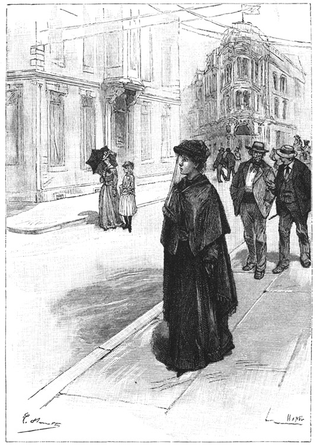Dolly glaubte zuerst, sie sei nicht in der richtigen Straße.
»Mein Herr, in Ihrem Dienste stand einst ein Matrose namens Zach Fren?
– Ja, gnädige Frau, erwiderte der Beamte. Dieser Matrose ist zwar nicht lange bei uns gewesen, aber ich kann mich seiner ganz genau erinnern.
– Nicht wahr, es ist doch der, welcher sein Leben für die Rettung einer Frau ... einer unglücklichen Mutter ... gewagt hat?
– Ja, ich erinnere mich ... Mrs. Branican ... Ja ... das ist er.
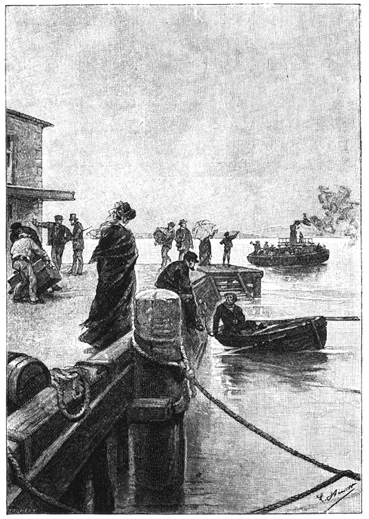Eben stieß eines dieser Schiffe ab.
– Und jetzt ist er auf der See?
– Auf der See.
– Auf welchem Schiffe befindet er sich?
– Auf dem Dreimaster »Californian«.
– Von San-Diego?
– Nein, Mistreß, von San-Francisco.
– Wohin segelt das Schiff?
Mrs. Branican, die schwächer war, als sie selbst dachte, schwieg einige Augenblicke und der Beamte wartete, bis sie ihn wiederum fragen werde. Als sie sich ein wenig erholt hatte, sagte sie:
»Ist Zach Fren in San-Diego heimisch?
– Ja, Mistreß.
– Können Sie mir sagen, wo seine Familie wohnt?
– Ich habe immer sagen hören, daß Zach Fren keinen Menschen auf der Welt hat.
– Er ist nicht verheiratet?
– Nein, gnädige Frau ...«
Der Beamte konnte sich wohl kaum irren, da er ja den Matrosen genau kannte. Da ließ sich also für den Augenblick nichts machen und Mrs. Branican mußte nun die Rückkehr des »Californian« nach Amerika abwarten.
»Weiß man, wie lange das Schiff ausbleiben wird? fragte sie.
– Ich weiß dies wirklich nicht, denn der »Californian« hat eine große Reise vor sich.
– Ich danke Ihnen, mein Herr. Es würde mich ungemein freuen, wenn ich mit Zach Fren bald sprechen könnte, aber es wird wohl ohne Zweifel noch lange dauern ...
– Gewiß, gnädige Frau!
– Aber man wird doch sicher bald irgend welche Nachrichten über den »Californian« erhalten ... vielleicht in einigen Monaten ... in einigen Wochen? ...
– Nachrichten? erwiderte der Beamte. Aber das Haus von San-Francisco, welchem das Schiff gehört, muß schon mehrmals Nachrichten erhalten haben ...
– Schon?
– Ja ... gnädige Frau!
– Mehrmals? ...«
Indem Mrs. Branican diese Worte wiederholte, stand sie auf und sah den Beamten starr an, als ob sie ihn nicht verstanden hätte.
»Da, gnädige Frau, hub dieser an, indem er ihr eine Schiffszeitung reichte, da ist die Shipping-Gazette ... Sie meldet, daß der ›Californian‹ vor acht Tagen Liverpool verlassen hat ...
– Vor acht Tagen! sagte Mrs. Branican leise, die zitternd die Zeitung in der Hand hielt.«
Mit ganz veränderter Stimme, die der Beamte kaum verstehen konnte, fragte sie:
»Seit wann ist Zach Fren fort?
– Seit achtzehn Monaten ...
– Achtzehn Monaten!«
Dolly mußte sich an den Tisch halten ... Ihr Herz blieb für einige Augenblicke stehen ...
Plötzlich fielen ihre Blicke auf einen Fahrplan, der die Sommerfahrten der Schraubendampfer anzeigte und der an der Wand hing. Sie stand demselben gegenüber und las:
März 1879.
März 1879! ... Man hatte sie getäuscht! ... Es waren vier Jahre seit dem Tode ihres Kindes verflossen ... vier Jahre, daß John San-Diego verlassen hatte ... Sie war also vier Jahre irrsinnig gewesen! ... Ja! ... Und wenn ihr Mr. William Andrew und der Dr. Brumley sagten, daß ihr Wahnsinn nur drei Monate dauerte, so sagten sie das nur, um ihr die Wahrheit über den »Franklin« zu verbergen ... weil man seit vier Jahren ohne jede Nachricht von John und seinem Schiffe war!
Zum großen Schrecken des Beamten zitterte der ganze Körper der Frau. Aber sie wußte sich doch zu beherrschen, verließ die Kanzlei und eilte durch die Straßen der unteren Stadt.
Die Passanten, welche ihr bleiches Antlitz, ihren starren Blick sahen, mußten denken, daß sie wahnsinnig wäre ...
Und wenn sie es nicht war ... die unglückliche Dolly ... konnte sie es nicht wieder werden?
Wohin eilte sie? Nach dem Hause des Mr. William Andrew, wo sie nach einigen Minuten ankam. Sie durcheilte die Bureaux, durchbrach die Reihen der Commis, welche keine Zeit hatten, sie aufzuhalten, und stieß die Thür des Zimmers auf, in welchem sich der Chef befand.
Zuerst war Mr. William Andrew über das plötzliche Eintreten der Mrs. Branican ganz bestürzt, dann, als er ihre auffallende Blässe sah, ganz erschrocken. Bevor er noch ein Wort sagen konnte, rief sie:
»Ich weiß es ... ich weiß es! ... Sie haben mich getäuscht! Ich bin vier Jahre wahnsinnig gewesen! ...
– Meine liebe Dolly ... beruhigen Sie sich!
– Antworten Sie! ... Der ›Franklin‹ ... nicht wahr, es sind schon vier Jahre, daß er fort ist?«
Mr. William Andrew senkte den Kopf.
»Sie haben noch keine Nachrichten ... seit vier Jahren ... seit vier Jahren?«
Mr. William Andrew schwieg noch immer.
»Man sieht den ›Franklin‹ als untergegangen an ... Es wird Niemand zurückkehren ... Ich werde John nie mehr wiedersehen!« ...
Nur Thränen waren die Antwort Mr. William Andrew's.
Mrs. Branican fiel plötzlich bewußtlos auf einen Stuhl hin.
Mr. William Andrew rief eine der Frauen des Hauses herbei, die Dolly rasch zu helfen suchte. Einer der Commis lief schnell nach Dr. Brumley, der in demselben Viertel war und auch gleich erschien.
Mr. William Andrew setzte ihn rasch von dem Vorgefallenen in Kenntniß. Durch Zufall, durch eine Indiscretion hatte Mrs. Branican Alles erfahren. Ob sie das im Prospect-House oder in den Straßen von San-Diego erfuhr, war ja gleichgiltig. Sie wußte es jetzt! Sie wußte, daß vier Jahre seit dem Tode ihres Kindes verflossen waren, daß sie vier Jahre geisteskrank gewesen war, daß vier Jahre vorübergegangen waren, ohne daß man von dem »Franklin« etwas hörte ...
Nur mit Mühe brachte Dr. Brumley die unglückliche Dolly wieder zum Bewußtsein, während er sich fragte, ob ihr Geist diesem furchtbarsten Schlage, der sie noch treffen konnte, widerstanden hätte.
Als Mrs. Branican allmählich wieder zur Besinnung kam, da wußte sie sofort, was ihr enthüllt worden war ... Sie war mit dem vollen Geiste wieder zum Leben erwacht! ... Und durch Thränen hing ihr Blick fragend an dem Gesichte Mr. William Andrew's, der neben ihr kniete.
»Sprechen Sie ... sprechen Sie ... Herr Andrew!«
Das waren die einzigen Worte, die sie hervorbringen konnte.
Mit schluchzender Stimme theilte ihr dann Mr. William Andrew mit, welche Unruhe ihm das Ausbleiben jeder Nachricht über den »Franklin« bereitet habe ... Depeschen und Briefe seien nach Indien und Singapore abgeschickt worden ... eine Untersuchung der Route, welche John hätte nehmen sollen, wäre eingeleitet worden ... Nichts habe auf eine Spur der Schiffbrüchigen geführt! ...
Unbeweglich, schweigend, hörte Mrs. Branican zu. Als Mr. William Andrew mit seinem Berichte fertig war, da sagte sie leise:
»Mein Kind todt! ... Mein Gatte todt! ... Ach, warum hat mich Zach Fren dem Tode entrissen!«
Doch ihr Gesicht belebte sich plötzlich, ihre angeborene Energie trat auf einmal so deutlich hervor, daß Dr. Brumley darüber ganz bestürzt war.
»Seit den letzten Nachforschungen, sagte sie, hat man nichts mehr über den ›Franklin‹ erfahren?
– Nichts, erwiderte Mr. William Andrew.
– Und Sie sehen ihn als untergegangen an?
– Ja ... untergegangen.
– Und von John und seinen Leuten ist nichts gehört worden?
– Nein, arme Dolly, und wir haben gar keine Hoffnung mehr ...
– Keine Hoffnung mehr,« erwiderte Mrs. Branican in ironischem Tone.
Sie erhob sich, trat ans Fenster, aus welchem man auf das Meer sehen konnte.
Mr. William Andrew und Dr. Brumley beobachteten sie ängstlich, da sie für ihren Geist fürchteten.
Aber Dolly war im vollen Besitze desselben und mit Feuer wiederholte sie:
»Keine Hoffnung mehr! ... Sie sagen, keine Hoffnung mehr! ... Herr Andrew, wenn John für Sie verloren ist, so ist er es doch nicht für mich! ... Dieses Vermögen, welches mir gehört, ich will es nicht ohne ihn haben ... Ich werde es dazu benutzen, um John und seine Mannschaft zu suchen! ... Und mit Gottes Hilfe werde ich sie wiederfinden! ... Ja, ich werde sie wiederfinden!«
Ein neues Leben begann für Mrs. Branican. Wenn sie die volle Gewißheit von dem Tode ihres Kindes hatte, so hatte sie doch nicht die von dem Tode ihres Mannes. Konnten John und seine Leute nicht den Schiffbruch überlebt und sich auf eine jener zahlreichen Inseln in den Gewässern der Philippinen, von Celebes oder Java gerettet haben? War es denn unmöglich, daß sie in die Gefangenschaft eines dortigen Volkes gerathen waren und nicht die Mittel hatten zu entfliehen?
An diese Hoffnung sollte sich Mrs. Branican von nun an klammern, und zwar mit einer so außerordentlichen Zähigkeit, daß sie bald in ganz San-Diego die allgemeine Meinung über den »Franklin« umstürzte. Nein! Sie glaubte es nicht, sie konnte es nicht glauben, daß John und seine Mannschaft untergegangen wären, und vielleicht war es gerade dieser ausdauernde Gedanke, der sie nicht wieder den Verstand verlieren ließ. Waren auch einige geneigt zu glauben, daß diese ihre Idee nichts anderes als der »Irrsinn einer überspannten Hoffnung« wäre, so war doch keine Störung ihrer geistigen Kräfte vorhanden, wie uns das Folgende zeigen wird. Mrs. Branican war im vollen Besitze ihrer Geisteskräfte und sie hatte jene scharfe Urtheilskraft wieder erlangt, die sie seit jeher ausgezeichnet hatte.
Es schwebte ihr nun nur ein Ziel vor, John wiederzufinden, und sie ging demselben mit einer seltenen Energie entgegen, welche die ganze Lage nur noch erschwerte. Da Gott gestattet hatte, daß Zach Fren sie rettete, daß sie ihren Verstand wieder erlangt und er ihr alle Mittel zur Verfügung gestellt hatte, Nachforschungen anzustellen, so mußte John leben und würde durch sie gerettet werden. Dieses Vermögen würde sie zu steten Nachforschungen, zu Belohnungen und Ausrüstungen verwenden; es sollte keine Insel, kein Felsen, der auf der Route des jungen Capitäns lag, unbeachtet und undurchforscht bleiben. Was Lady Franklin für John Franklin gethan hatte, das wollte Mrs. Branican auch für John Branican thun, und sie würde dort Erfolg haben, wo die Witwe des berühmten Mannes Mißerfolg hatte.
Von jenem Tage an mußten die Freunde Dollys – das sahen sie sofort ein – sie in dieser neuen Phase unterstützen, sie in ihren Plänen ermuthigen, ihre Bemühungen mit denen der Frau vereinigen. Das that auch Mr. William Andrew, obwohl er kaum einen Erfolg von dem Ganzen erhoffte, die Ueberlebenden des Schiffbruches je aufzufinden. Er stand ihr mit Rath und That bei, und auch der Capitän des »Boundary«, der sich damals wegen Ausbesserung seines Schiffes in San-Diego aufhielt, war ihr mit allen seinen Kräften behilflich. Der Capitän Ellis, ein entschlossener Mann, auf den man rechnen konnte, ein ergebener Freund Johns, wurde nun eingeladen, an den Sitzungen der Mrs. Branican und des Mr. William Andrew theilzunehmen.
Seitdem kamen sie oft im Prospect-House zusammen, das Dolly trotz des ungeheuren Reichthums nicht verlassen wollte. Hier hatte John sie bei seinem Scheiden zurückgelassen, hier sollte er sie bei seiner Rückkehr wiederfinden. Nichts sollte in ihrer Lebensweise geändert werden, bevor nicht ihr Gatte nach San-Diego zurückkehre. Sie lebte nun ebenso einfach weiter und gab nichts aus, was nicht zur Auffindung ihres Gatten oder zur Unterstützung von Bedürftigen nöthig war.
Das verbreitete sich bald in der ganzen Stadt, die mit Bewunderung auf diese tapfere Frau blickte, welche nicht die Witwe John Branican's sein wollte. Ohne daß sie die geringste Ahnung hatte, vergötterte man sie förmlich, denn ihr furchtbares Unglück verdiente wohl eine solche Verehrung. Aber viele Leute hatten nicht allein gute Wünsche für das Gelingen des Unternehmens, sondern sie wollten auch daran glauben. Wenn Dolly von den oberen Stadtvierteln die Straßen hinabging, um sich entweder in das Haus des Mr. William Andrew oder zu dem Capitän Ellis zu begeben, und man erblickte diese ernste, schwarz gekleidete Frau, die um zehn Jahre älter aussah – sie war erst fünfundzwanzig Jahre alt – da grüßten sie die Leute ehrerbietigst und verbeugten sich vor ihr. Sie aber sah all diese ihr gezollte Verehrung gar nicht.
In den ersten Sitzungen der Mrs. Branican mit Mr. William Andrew und dem Capitän Ellis handelte es sich vor Allem darum, mit der größten Genauigkeit die Route festzusetzen, welche der »Franklin« hätte nehmen müssen.
Das Haus Andrew hatte sein Schiff nach Indien geschickt, nachdem es in Singapore einen Theil seiner Ladung gelöscht haben würde. Indem der Capitän John westlich von der amerikanischen Küste in die offene See fuhr, war es höchst wahrscheinlich, daß er den Archipel der Sandwichsinseln berührte. Wenn der »Franklin« die Zonen von Mikronesien verließ, sollte er sich gegen die Mariannen und Philippinen wenden, dann durch das Meer von Celebes und die Meerenge von Mahkassar das Javanische Meer durchsegeln, das im Süden von der Insel Sunda begrenzt ist, um so nach Singapore zu kommen. Im äußersten Westen der Meerenge von Malakka, die von der gleichnamigen Halbinsel und der Insel Java gebildet wird, breitet sich der Golf von Bengalen aus, in dem, außer auf den Nicobaren- und Andamaninseln, die Schiffbrüchigen hätten keinen Zufluchtsort mehr finden können. Uebrigens stand es außer allem Zweifel, daß John Branican nicht in diesem Golfe erschienen war, denn in dem Augenblicke, wo er nicht in Singapore landete – was nur allzu sicher war – konnte er nicht die Grenze des Javanischen Meeres und der Sundainseln überschritten haben.
Die Annahme, daß der »Franklin« nicht den Weg über die Malayeninseln genommen und gesucht hätte, durch die Torresstraße, entlang der nördlichen Küste von Australien nach Calcutta zu kommen, würde jeder Seefahrer verworfen haben. Der Capitän Ellis behauptete, daß John Branican nie eine so nutzlose Unvorsichtigkeit hätte begehen können, sich den Gefahren der Meerenge von Torres auszusetzen. Diese Hypothese wurde fallen gelassen, da nur an den malayischen Küsten die Nachforschungen angestellt werden könnten.
In der That zählen in den Gewässern der Carolineninseln und Javas die Inseln und Inselchen nach Tausenden, und nur hier konnte sich die Mannschaft des »Franklin«, wenn sie sich aus dem Schiffbruch gerettet hatte, aufhalten oder von den Eingeborenen gefangen gehalten werden, so daß sie nicht in ihre Heimat zurückkehren konnte.
Auf Grund dieser Feststellungen wurde beschlossen, eine Expedition in das Malayische Meer zu senden. Mrs. Branican machte einen Vorschlag, dem sie große Bedeutung beilegte. Sie fragte nämlich den Capitän Ellis, ob er den Befehl über diese Expedition übernehmen wolle.
Da der »Boundary« in Ausbesserung war, so war der Capitän Ellis frei; und obgleich er durch diesen Antrag überrascht war, zögerte er doch nicht, denselben mit Bewilligung Mr. William Andrew's anzunehmen. Mrs. Branican dankte ihm in bewegten Worten für diese Bereitwilligkeit.
»Ich thue nur meine Pflicht, sagte er, und ich werde Alles, was in meinen Kräften steht, versuchen, die Ueberlebenden des ›Franklin‹ wiederzufinden! ... Wenn der Capitän lebt ...
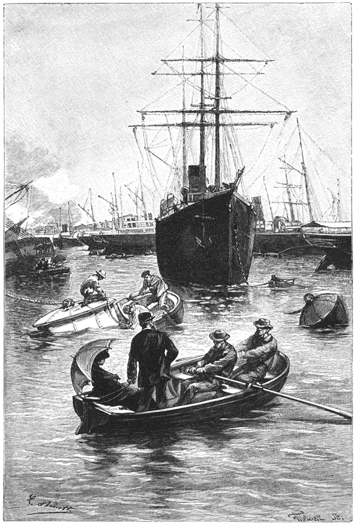Es befand sich im Hafen von San-Diego eine große Anzahl von Schiffen.
– John lebt!« rief Mrs. Branican in so überzeugendem Tone aus, daß selbst die Ungläubigsten nicht gewagt hätten, ihr zu widersprechen. Der Capitän Ellis brachte hierauf noch einige sehr wichtige Punkte zur Sprache. Eine Bemannung zusammenzubringen, die seinem Vorhaben gewachsen wäre, würde auf keine Schwierigkeiten stoßen. So blieb nur noch die Frage betreffs des Schiffes offen. Gewiß konnte der »Boundary« dabei nicht in Betracht kommen, da kein Segelschiff, sondern nur ein Dampfschiff für diese Fahrt geeignet wäre. Es befand sich um jene Zeit in dem Hafen von San-Diego eine große Anzahl von Schiffen, die für diese Fahrt ganz gut paßten. Mrs. Branican beauftragte daher Capitän Ellis, das schnellste dieser Dampfschiffe zu erwerben, und stellte ihm eine hinreichende Summe zur Verfügung. Nach einigen Wochen war der Kauf Thatsache geworden und Mrs. Branican war Eigenthümerin des »Davitt«, dessen Name in »Dolly-Hope« (Dolly-Hoffnung) als gutes Omen verändert wurde.
Es war ein Schraubendampfer von neunhundert Tonnen und konnte eine große Menge Kohlen fassen, so daß er nicht sobald wegen Kohlenmangels irgendwo zu landen brauchte. Dieser Dreimaster hatte ein ausgezeichnetes Takelwerk und eine Maschine von tausendzweihundert Pferdekräften, so daß er fünfzehn Knoten in einer Stunde zurücklegen konnte. In Folge dieser großen Schnelligkeit und des großen Tonnengehaltes entsprach der »Dolly-Hope« allen Anforderungen einer Fahrt durch jene Meere, die mit Inseln, Inselchen und Klippen reich besäet waren. Man hätte keine bessere Wahl treffen können.
Man brauchte nur drei Wochen, um den »Dolly-Hope« segelfertig zu machen, seine Kessel zu untersuchen, seine Maschine zu prüfen, sein Takelwerk mit den Segeln auszubessern, die Compasse zu reguliren, Kohlen einzuschiffen und Lebensmittel an Bord zu bringen, die für eine mehr als einjährige Reise hinreichen würden. Der Capitän Ellis war entschlossen, die Breitengrade, wo der »Franklin« verschollen war, nicht eher zu verlassen, bis er alle Zufluchtsorte durchsucht hätte.
Wenn auf einem guten Schiffe eine gute Mannschaft sich befindet, so kann dies nur zum Erfolge beitragen. Ellis konnte sich wirklich zu den Angeboten, die man ihm von allen Seiten aus der Seebevölkerung von San-Diego machte gratuliren. Die tüchtigsten Seeleute boten sich an, unter ihm zu dienen.
Die Bemannung des »Dolly-Hope« bestand aus dem Ober- und Untersteuermann, zwei Officieren und fünfundzwanzig Matrosen, die Maschinisten und Heizer eingerechnet. Der Capitän Ellis wußte, daß er Alles von diesen ergebenen und muthigen Matrosen verlangen könnte, so lange und so anstrengend auch die Fahrt durch die Malayischen Gewässer werden würde.
Es ist selbstverständlich, daß während dieser Vorbereitungen auch Mrs. Branican nicht unthätig blieb. Sie stand dem Capitän überall zur Seite, und wo immer es sich um Geld handelte, gab sie es mit vollen Händen hin, um ja Alles zu thun, was den Erfolg der Expedition verbürgen konnte.
Diese mitleidige Frau hatte aber auch die Familien nicht vergessen, welche durch das Verschwinden des »Franklin« in Noth gerathen waren. In dieser Richtung hin hatte sie nur die schon von dem Hause Andrew getroffenen Maßregeln ergänzt und zu den öffentlichen Subscriptionen ihr Scherflein beigetragen. Unterdessen war für die Angehörigen der Schiffbrüchigen des »Franklin« genügend gesorgt, bis die Expedition der Mrs. Branican die Lieben wieder zurückbringen würde.
Warum konnte sie das gute Werk, welches sie für die so schwer geprüften Familien gethan hatte, nicht auch für Jane Burker thun? Sie erfuhr jetzt, wie gut diese arme Frau sie in ihrer Krankheit gepflegt, daß Jane sie nicht einen Augenblick allein gelassen hatte. Jetzt wäre Jane im Prospect-House, würde ihre Hoffnungen theilen, wenn die betrügerischen Handlungen ihres Gatten sie nicht genöthigt hätten, San-Diego, vielleicht ohne Zweifel sogar die Vereinigten Staaten, zu verlassen. Wie sehr auch Len Burker wegen seines Vorgehens zu verurtheilen war, so war es sicher, daß Jane sich ihr gegenüber als eine aufrichtige, aufopferungswürdige Verwandte gezeigt hatte. Dolly hatte ihr also noch immer die alte Freundschaft bewahrt und bedauerte jetzt, in ihren glänzenden Verhältnissen, daß sie nichts für sie thun konnte, um ihre Dankbarkeit zu bezeugen. Aber trotz der sorgfältigsten Nachforschungen Mr. William Andrew's konnte man nicht erfahren, was aus dem Ehepaare Burker geworden war. Wenn ihr Aufenthaltsort bekannt geworden wäre, so hätte Mrs. Branican sie zwar auch nicht nach San-Diego zurückbringen können, da Len Burker wegen Betrugs verhaftet worden wäre, aber sie hätte Jane schleunigst Hilfsmittel zukommen lassen, deren die Unglückliche sicher sehr bedurfte.
Am 27. Juli war der »Dolly-Hope« zur Abfahrt bereit. Mrs. Branican kam am Morgen dieses Tages an Bord des Schiffes, um dem Capitän Ellis noch einmal ans Herz zu legen, Alles zu versuchen und Nichts zu scheuen, um die Spuren des »Franklin« zu finden. Sie zweifelte übrigens nicht, daß es ihm gelingen werde. Man würde John, man würde die Mannschaft zurückbringen! ... Sie wiederholte diese Worte mit einer solchen Ueberzeugung, daß die Matrosen in die Hände schlugen. Alle theilten ihr Vertrauen, ihre Freunde, ihre Verwandten, Alle, die zur Abfahrt des »Dolly-Hope« herbeigeeilt waren.
Der Capitän Ellis wandte sich Mrs. Branican wie Mr. William Andrew zu, der sie an Bord des Schiffes begleitet hatte, und sagte:
»Vor Ihnen, Mistreß, vor Mr. William Andrew schwöre ich im Namen meiner Officiere und meiner Bemannung, ja, ich schwöre, daß ich vor keiner Gefahr, vor keiner Anstrengung zurückschrecken werde, um den Capitän John und seine Leute wiederzufinden. Das Schiff, welches Sie ausgerüstet haben, heißt ›Dolly-Hope‹ und wird seinen Namen auch rechtfertigen ...
– Mit Gottes Hilfe und mit der Hingebung Derer, die auf ihn vertrauen, erwiderte Mrs. Branican.
– Hurrah! ... Hurrah für John und Dolly Branican!«
Die Rufe pflanzten sich durch die Zuschauermenge fort, die dicht gedrängt auf den Quais des Hafens stand.
Die Anker wurden aufgezogen, der »Dolly-Hope« gehorchte den ersten Drehungen der Schraube und fuhr gegen den Ausgang des Hafens. Sobald er denselben verlassen hatte, nahm er die Richtung nach Süd-West und war unter dem mächtigen Arbeiten seiner großen Maschine bald dem amerikanischen Festlande entschwunden.
Nach einer Fahrt von zweiundzwanzighundert Meilen oder viertausend Kilometern kam der »Dolly-Hope« in Sicht des Gebirges Mouna-Kea, das sich fünfzehntausend Fuß hoch auf der Insel Hawaï, der südlichsten der Sandwichgruppe erhebt.
Diese Gruppe besteht außer fünf großen und drei kleinen Inseln noch aus einer Anzahl von Inselchen, wo man nach dem »Franklin« gar nicht erst zu suchen brauchte. Es war augenscheinlich, daß dieser Schiffbruch längst bekannt geworden wäre, wenn er an den zahlreichen Klippen dieses Archipels, wie an denen von Medo-Manou stattgefunden hätte, obwohl diese nur von zahlreichen Seevögeln bewohnt sind. In der That sind die Sandwichinseln dicht bevölkert – die Insel Hawaï hat allein hunderttausend Bewohner – und Dank den französischen, englischen und amerikanischen Matrosen, die sich auf diesen Inseln aufhalten, hätte die Nachricht von diesem Unglücke bald nach San-Diego gelangen müssen.
Außerdem trafen sich vor vier Jahren, wo der Capitän Ellis dem »Franklin« begegnete, die beiden Schiffe schon jenseits der Sandwichinseln. Ter »Dolly-Hope« setzte daher seinen Weg gegen Südwesten durch jenen prächtigen Theil des Stillen Oceans fort, der während einiger Sommermonate hier wirklich seinen Namen verdient.
Sechs Tage später hatte der schnelle Dampfer die Linie überschritten, welche die Geographen vom Süden zum Norden zwischen Polynesien und Mikronesien ziehen. Auch in dem östlichen Theile der polynesischen Gewässer hatte der Capitän nichts zu thun; aber jenseits desselben, in den Gewässern von Mikronesien, wimmelte es von Inselchen, Felsen und Klippen, und hier fiel dem »Dolly-Hope« die gefährliche Aufgabe zu, nach einem Schiffbruche Ausschau zu halten.
Am 22. August legte man in Otia an, der wichtigsten Insel der Marschallgruppe, die im Jahre 1817 von Kotzebue und den Russen besucht wurde. Diese Gruppe, welche sich dreißig Meilen von Osten nach Westen und dreizehn Meilen von Norden nach Süden erstreckt, besteht aus nicht weniger als fünfundsechzig Inselchen.
Der »Dolly-Hope«, welcher mit Leichtigkeit seinen Wasservorrath in einigen Stunden an dieser Insel hätte aufnehmen können, hielt sich doch fünf Tage auf. Mit Hilfe seiner Dampfschaluppe konnte sich der Capitän Ellis überzeugen, ob in den letzten vier Jahren auf diesen Riffen ein Schiff gescheitert sei. Man stieß zwar entlang der Mulgraveinseln aus viele Trümmer, doch das waren nur Tannen-, Palmen- und Bambusstämme, welche die Strömung von Norden oder Süden hierhergetragen hatte und die von den Eingeborenen zu ihren Booten benutzt wurden. Der Capitän Ellis erfuhr von dem Gouverneur der Insel Otia, daß man seit dem Jahre 1872 nur von dem Untergange eines einzigen Schiffes gehört habe, und das war eine englische Brigg, deren Mannschaft auch später heimkehrte.
Als der »Dolly-Hope« den Marschall-Archipel verlassen hatte, nahm er seine Richtung gegen die Carolinen. Im Vorüberfahren landete die Schaluppe auf der Insel Oualam, deren Durchforschung von keinem Erfolge begleitet war. Am 3. September fuhr der Dampfer in den großen Archipel ein, der sich zwischen dem 12. Grade nördlicher Breite und dem 3. Grade südlicher Breite einerseits, und zwischen dem 29. Grade östlicher Länge und dem 170. Grade westlicher Länge andererseits, also zweihundertfünfundzwanzig Meilen nördlich und südlich von dem Aequator und tausend Meilen von Westen nach Osten ausdehnt.
Der »Dolly-Hope« blieb drei Monate in den Gewässern der Carolinen, die seit den Forschungen Lütke's, des berühmten russischen Seefahrers, und denen der Franzosen Duperrey und Dumont d'Urville genügend bekannt sind. Man durchsuchte auch dann noch die hauptsächlichsten Gruppen, die diesen Archipel bilden, so die Peliou-, die Märtyrer-, die Matrosen-, die Saavedra-, die Sonsorol-, die Mariera-, die Anna-, die Lord-North-Inseln u. a. m.
Der Capitän Ellis hatte als Ausgangspunkt seiner Nachforschungen Jap oder Gouap gewählt, das zu den Carolinen im engeren Sinne gehört, welche ungefähr 500 Inseln umfassen. Von hier aus fuhr der Dampfer zu den entferntesten Punkten. Von wie viel Schiffbrüchen ist dieser Archipel der Schauplatz gewesen! So der »Antilope« im Jahre 1793 und des amerikanischen Capitäns Barnard bei den Mortz- und Lord-North-Inseln im Jahre 1832.
Während dieser ganzen Zeit war die Haltung der Matrosen eine musterhafte. Keiner von ihnen kümmerte sich weder um die Gefahren, noch um die Strapazen, die ihnen aus den Fahrten in diesen unheilvollen Gewässern erwuchsen. Dazu kam auch noch, daß jetzt die Jahreszeit anbrach, wo hier so häufig furchtbare Stürme wüthen.
Wenn die Matrosen ans Land gingen, so waren sie gut bewaffnet, denn es handelte sich hier nicht darum, Nachforschungen anzustellen, die denen glichen, die zur Auffindung des Admirals Franklin unternommen wurden, d. h. in öden Gegenden. Diese Inseln waren meistens bewohnt, und die Aufgabe des Capitäns Ellis bestand besonders darin, so vorzugehen, wie es Entrecasteaux that, als er die Inseln durchsuchte, wo man glaubte, daß Lapérouse verloren gegangen sei. Vor Allem war es wichtig, sich mit den Eingeborenen ins Einvernehmen zu setzen. Die Mannschaft des »Dolly-Hope« wurde oft von Völkerschaften feindlich empfangen, die durchaus nicht in dem Rufe standen, gegen die Fremden gastfreundlich zu sein. Sie wurden angegriffen, und man mußte sich mit den Waffen vertheidigen. Zwei oder drei Matrosen wurden sogar verwundet, was aber glücklicherweise von keinen schlimmen Folgen begleitet war.
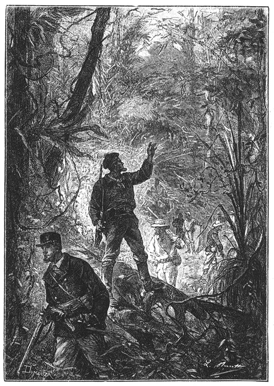Wenn die Matrosen ans Land gingen, so waren sie gut bewaffnet.
Aus dem Archipel der Carolinen konnte der Capitän Ellis die ersten Briefe an Mrs. Branican schicken, da von hier Schiffe nach Amerika fuhren. Aber sie enthielten nichts Positives über eine Spur des »Franklin« oder der Schiffbrüchigen. Die Nachforschungen sollten dann noch im Westen vorgenommen werden, wo man auf den zahlreichen Inseln eher eine Spur zu finden hoffte.
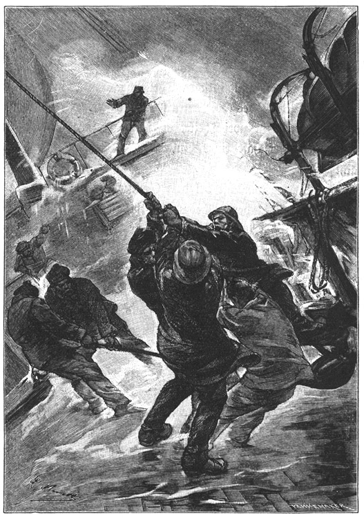Die Wogen brachen sich mit solcher Wuth, daß das Schiff furchtbare Stöße erhielt.
Am 2. September erreichte der »Dolly-Hope« eine der großen Philippinen, die wichtigste der malayischen Gruppe. Diese Gruppe wurde im Jahre 1521 von Magellan entdeckt und erstreckt sich vom 5. bis zum 21. Grade nördlicher Breite und vom 114. bis zum 123. Grade östlicher Länge.
Der »Dolly-Hope« wollte sich nicht bei der Insel Luçon, die auch Manilla heißt, aufhalten. Wie konnte man annehmen, daß der »Franklin« so hoch hinauf in das Chinesische Meer gefahren sei, da er doch die Route nach Singapore hatte. Aus diesem Grunde fuhr der Capitän Ellis zur Insel Mindanao, südlich von genanntem Archipel, d. h. gerade auf den Weg, den John Branican nehmen mußte, um in das Javanische Meer zu kommen. Um diese Zeit lag der »Dolly-Hope« im südöstlichen Theile der Insel, in dem Hafen von Zamboanga, der Residenz des Gouverneurs, vor Anker.
Mindanao zerfällt in zwei Theile, in einen spanischen und in einen unabhängigen unter der Herrschaft eines Sultans, der Selangan zu seiner Hauptstadt gemacht hat.
Capitän Ellis zog zunächst bei dem Gouverneur und den Alcaden Erkundigungen ein, ob nicht in der Nähe von Mindanao ein Schiff gesunken sei. Die Behörden stellten sich ihm bereitwilligst zur Verfügung, aber in dem spanischen Theile von Mindanao war seit fünf Jahren nichts von einem Schiffsunfalle gehört worden.
Freilich konnte an den Küsten des unabhängigen Theiles der Insel, die von den Mindanaern, Caragos, Loutas, Soubanis und anderen, in dem Verdachte des Cannibalismus stehenden Völkern bewohnt waren, alles mögliche geschehen, ohne daß man etwas davon erfuhr. Unter jenen Malayen giebt es sogar viele, die in dem Rufe standen, Seeräuber zu sein. Diese machen mit ihren kleinen Kähnen Jagd auf die großen Handelsschiffe, die die Stürme gegen ihre Küste treiben, und wenn sie sich derselben bemächtigen, so zerstören sie dieselben. Wie leicht konnte ein solches Unglück auch dem »Franklin« zugestoßen sein, ohne daß der Gouverneur etwas davon wußte. Die wenigen Auskünfte, die er über den ihm unterstehenden Theil der Insel geben konnte, waren ganz ungenügend.
Der »Dolly-Hope« hatte in diesen Gewässern auch mit der rauhen Jahreszeit zu kämpfen. Manchmal landete man an mehreren Punkten und die Matrosen wagten sich dann in jene herrlichen Bambus- und Ebenholzwälder, die den Reichthum der Philippinen bilden. Inmitten der fruchtbaren Landschaften, wo sich die Erzeugnisse der gemäßigten Zone mit denen der tropischen mengen, besuchten Ellis und seine Leute verschiedene Dörfer, indem sie hofften, hier einige Anhaltspunkte, wie Schiffstrümmer oder Gefangene, zu finden; aber Ihre Bemühungen waren fruchtlos und der Dampfer mußte wieder nach Zamboanga zurückkehren, nachdem er sehr unter der Ungunst der Witterung gelitten hatte und nur wie durch ein Wunder den Untiefen und Klippen entgangen war.
Die Durchsuchung der Philippinen dauerte nicht weniger als zwei Monate; hierauf fuhr man zu den Bassilaninseln, südlich von Zamboanga, und dann gegen den Archipel von Holo, wo man am 25. Februar 1880 ankam.
Da war ein förmliches Piratennest, dessen Eingeborne inmitten der zahlreichen mit Dschungeln dicht bedeckten Inseln umherschweifen, die zwischen der Südspitze Mindanaos und der Nordspitze Borneos zerstreut sind. Von hier fuhr man auf Bevouan zu, wo vielleicht der Sultan, der eine Bevölkerung von ungefähr sechstausend bis siebentausend Einwohnern beherrschte, einige Auskunft geben konnte. Ellis scheute keine Geschenke, weder in Geld, noch in Naturalien. Die Eingeborenen machten ihn dann auf verschiedene Schiffbrüche aufmerksam, deren Schauplatz diese korallenreichen Gewässer gewesen waren.
Aber unter all den Schiffstrümmern, welche gesammelt worden waren, fanden sich keine, die dem »Franklin« hätten gehören können. Uebrigens waren die betreffenden Schiffbrüchigen zu Grunde gegangen oder längst heimgekehrt.
Dem »Dolly-Hope« blieb, da Kohlenmangel eintrat, nun nichts weiter übrig, als nach den Maratoubasinseln zu fahren, um in den Hafen Bandger-Massing, im Süden von Borneo, zu kommen.
Der Capitän Ellis fuhr in dieses Meer, welches wie ein See von den großen Malayischen Inseln und einem Gürtel von Inselchen umgeben ist. Das Meer von Celebes ist trotz dieser natürlichen Hindernisse schlecht gegen die Wuth der Stürme geschützt, und wenn man auch die Farbenpracht seiner Gewässer rühmen kann, die von Zoophyten in den glänzendsten Farben und von tausenderlei Mollusken wimmeln, und die Phantasie der Seefahrer sie sogar mit einem Beete flüssiger Blumen verglichen hat, so werfen doch die Wirbelstürme, die hier hausen, einen Schatten auf das wunderbare Bild.
Der »Dolly-Hope« mußte diese Erfahrung in der Nacht vom 28. zum 29. September machen. Während des Tages war der Sturm nach und nach gestiegen, und obgleich er sich am Abend ein wenig gelegt hatte, so konnte man doch aus den mächtigen Wellen, die sich am Horizonte aufthürmten, auf eine sehr unruhige Nacht schließen.
Und wirklich brauste gegen elf Uhr der Orkan mit einer solchen Heftigkeit einher, daß sich das Meer in einer furchtbaren, selten dagewesenen Aufregung befand.
Der Capitän Ellis, mit Recht um die Maschine des »Dolly-Hope« besorgt, wollte jedem Unfalle, der seiner Fahrt verderblich werden konnte, vorbeugen. Er ließ daher die Schraube nur gerade so schnell in Bewegung setzen, als es nöthig war, damit das Schiff dem Steuer gehorchte.
Trotz dieser Vorsichtsmaßregeln brachen sich die Wogen mit einer solchen Wuth, daß das Schiff furchtbare Stöße erhielt. Mehrmals stürzten hunderte Tonnen Wassers auf das Verdeck und füllten alle Räumlichkeiten. Aber die fest geschlossenen Luken widerstanden dem furchtbaren Anpralle des Wassers und hielten es auf, in den Heiz- und Maschinenraum zu dringen. Das war ein Glück, denn wenn das Feuer erlosch, so war der »Dolly-Hope« waffenlos dem Wüthen der Elemente verfallen, und gehorchte er nicht mehr dem Steuer, so wurde er auch von der Seite her angegriffen und war dann verloren.
Die Mannschaft zeigte in dieser furchtbaren Lage ebensoviel Kaltblütigkeit wie Muth. Sie führte rasch die Befehle ihres Commandanten und ihrer Officiere aus und sie war würdig des Capitäns, der sie aus den besten Matrosen von San-Diego gewählt hatte. Das Schiff wurde durch die schnelle, geschickte Ausführung der einzelnen Befehle gerettet.
Nach einem Kampfe von fünfzehn Stunden mit dem wüthend gepeitschten Meere legte sich der Sturm; man kann sagen, er fiel plötzlich in der Nähe der Insel Borneo, und das Schiff hatte am Morgen des 2. März die Maratoubainseln in Sicht. Diese Inseln, welche in geographischer Beziehung zu Borneo gehören, wurden in den ersten vierzehn Tagen des März mit einer außerordentlichen Genauigkeit durchforscht. Dank den Geschenken, welche nicht gescheut wurden, betheiligten sich die Eingeborenen an allen Nachforschungen. Aber es war unmöglich, nur den geringsten Anhaltspunkt über das Verschwinden des »Franklin« zu entdecken. Da diese malayischen Gewässer sehr oft von Piraten heimgesucht werden, so konnte man die Befürchtung hegen, daß John Branican und seine Leute ermordet worden seien.
Eines Tages sprach der Capitän Ellis mit seinem Officier über diese Möglichkeit und sagte:
»Es ist möglich, daß das Verschwinden des ›Franklin‹ mit einem solchen Angriffe zusammenhängt. Deshalb würde es sich erklären, daß wir bisher nicht den geringsten Anhaltspunkt über den Schiffbruch erlangt haben. Diese Piraten rühmen sich eben nicht ihrer Thaten. Wenn ein Schiff verschwindet, so schreibt man es ganz einfach dem Typhon zu und Alles ist gut!
– Sie haben nur allzu recht, Capitän, bemerkte der zweite Officier. Die Piraten sind in diesen Gewässern sehr zahlreich und sogar wir müssen unsere Wachsamkeit verdoppeln, wenn wir die Meerenge von Mahkassar passiren werden.
– Ohne Zweifel, erwiderte der Capitän, aber wir sind in einer besseren Lage als John Branican und können ihnen leicht entrinnen. Mit so unregelmäßigen und wechselnden Winden hat ein Segelschiff immer viel zu thun; so lange aber unsere Maschine arbeitet, können uns diese Malayen nicht einholen. Nichtsdestoweniger empfehle ich die größte Vorsicht.«
Der »Dolly-Hope« fuhr in die Meerenge von Mahkassar ein, welche Borneo von Celebes trennt. Durch zwei Monate – vom 15. März bis zum 15. Mai – untersuchte der Capitän, nachdem er seinen Kohlenvorrath im Hafen von Damaring ergänzt hatte, alle Buchten und Einschnitte im Osten.
Die Insel Celebes, welche von Magellan entdeckt wurde, hat nicht weniger als hundertzweiundneunzig Meilen Länge und fünfundzwanzig Meilen Breite. Sie hat eine so eigenthümliche Gestalt, daß einige Geographen sie mit einer Tarantel verglichen haben, deren große Füße, welche Halbinseln bilden, ausgestreckt sind. Der landschaftliche Reiz, der Reichthum ihrer Producte, die glückliche Lage ihrer Gebirge wetteifern mit denen von Borneo.
Aber ihre zerklüftete Küste bietet den Piraten ausgezeichnete Schlupfwinkel, so daß hier den Schiffen die größten Gefahren erwachsen.
Trotzdem setzte Ellis mit peinlichster Genauigkeit seine Nachforschungen fort. Nachdem er seine Kessel ordentlich hatte heizen lassen, besichtigte er die Küste mit den Booten, immer bereit, bei der geringsten Gefahr sofort an Bord zurückzukehren.
Als das Schiff sich dem südlichen Theile dieser Meerenge näherte, war die Gefahr keine so große mehr. Dieser Theil von Celebes steht ja unter holländischer Herrschaft.
Die Hauptstadt dieser Besitzungen ist Mahkassar, früher Wlaardingen, die von dem Fort Rotterdam geschützt wird. Hier landete der Capitän Ellis am 17. Mai, um seiner Mannschaft ein wenig Ruhe zu gönnen. Wenn er hier auch nichts vernahm, was ihn auf die Spur des »Franklin« hätte führen können, so erhielt er doch in diesem Hafen eine höchst wichtige Nachricht: Am 3. Mai 1875 war dieses Schiff in einer Entfernung von zehn Meilen von Mahkassar in der Richtung nach dem Javanischen Meer gesehen worden. Es war daher mit Bestimmtheit anzunehmen, daß es nicht in den furchtbaren malayischen Gewässern gescheitert war. Also jenseits von Borneo und Celebes, d. h. im Javanischen Meere, mußte man die Nachforschungen fortsetzen, und zwar bis nach Singapore selbst.
In einem Briefe, den er über diese wichtige Nachricht sofort an Mrs. Branican absandte, erneuerte er sein Versprechen, sie von den Untersuchungen im Javanischen Meere und zwischen den Sundainseln auf dem Laufenden zu halten.
Und es war auch wirklich schon von vornherein bestimmt gewesen, daß der »Dolly-Hope« nicht den Meridian von Singapore überschreite, der also die äußerste Grenze nach Westen bilden sollte. Bei der Rückfahrt sollte er dann noch die südlichen Gestade des Javanischen Meeres durchsuchen und die Inselgruppe, welche hier die Grenze bildet, durchforschen; dann sollte er durch die Molukken wieder in den Stillen Ocean fahren und nach Amerika zurückkehren.
Der »Dolly-Hope« verließ am 23. Mai Mahkassar, fuhr den südlichen Küsten der Meerenge, welche die Insel Celebes von der Insel Borneo trennt, entlang und landete in Bandger-Massing. Hier residiert der Gouverneur von Borneo oder vielmehr von Kalematan, um schon den richtigen geographischen Namen zu nennen. Die Schiffsregister wurden hier mit der größten Genauigkeit durchgesehen, doch konnte man nirgends finden, daß der »Franklin« signalisiert worden wäre.
Zwei Tage später fuhr das Schiff südwestlich weiter und warf in dem Hafen von Batavia Anker, an der äußersten Spitze jener großen Javanischen Insel, die vulcanischen Ursprunges ist und fast noch immer thätige feuerspeiende Berge hat.
Einige Tage genügten der Mannschaft, die Vorräthe in dieser großen Stadt zu ergänzen, welche der Hauptort der holländischen Besitzungen in Oceanien ist. Auch der Generalgouverneur konnte nicht die geringste Mittheilung über das Schicksal des »Franklin« machen. In dieser Zeit ging die Meinung der Seeleute von Batavia dahin, daß der amerikanische Dreimaster in einen Wirbelsturm gerathen und mit Mann und Maus untergegangen sei. In den ersten sechs Monaten des Jahres 1875 ging eine große Anzahl von Schiffen verloren, von denen man nichts mehr gehört hatte, und die so verschwunden waren, daß nicht die geringsten Trümmer an die Küste gespült wurden.
Das Schiff verließ Batavia, ließ die Sunda-Meerenge, welche das Javanische Meer mit dem von Timor verbindet, backbord und fuhr dann auf die Inseln Billitow und Bangha zu. Ehemals war das Anlaufen der Schiffe, die hier Eisen und Zinn faßten, wegen der Piraten mit steten Angriffen verbunden, aber die Seepolizei vernichtete dieselben schließlich, und es war kein Grund vorhanden, zu denken, daß der »Franklin« und seine Mannschaft ihnen zum Opfer gefallen wären.
Der »Dolly-Hope« fuhr nun nordwestlich weiter, besuchte Sumatra, fuhr um die Spitze der Halbinsel Malakka herum und legte nach einer ziemlich stürmischen Fahrt am Morgen des 20. Juni in Singapore an.
Da einige Reparaturen an der Maschine vorgenommen werden mußten, so blieb der Capitän Ellis in dem Hafen, der im Süden der Insel liegt, volle vierzehn Tage. Obwohl sie nur einen Flächeninhalt von zweihundertsiebzig Quadratmeilen hat, so ist diese Besitzung doch durch den großen Handelsverkehr mit Europa und Amerika höchst wichtig und ist eine der reichsten Inseln des äußersten Asien geworden, seitdem die Engländer im Jahre 1818 ihre ersten Kontore dort errichtet haben.
In Singapore sollte, wie wir wissen, der »Franklin« einen Theil seiner Ladung für Rechnung des Hauses Andrew löschen, bevor er weiter nach Calcutta fuhr. Man weiß auch noch, daß der amerikanische Dreimaster nie in Singapore erschienen war. Trotzdem wollte Ellis seinen Aufenthalt dazu benutzen, um Erkundigungen über die Schiffsunfälle im Javanischen Meere in den letzten Jahren einzuziehen.
Da der »Franklin« einerseits auf der Höhe von Mahkassar gesehen worden und andererseits nicht nach Singapore gekommen war, so mußte der Schiffbruch zwischen diesen beiden Punkten stattgefunden haben, wenn nicht Capitän John Branican das Javanische Meer verlassen und durch eine jener Meerengen gefahren war, welche die Sundainseln trennen, und gegen die Timorsche See seine Richtung genommen hatte ... Aber warum hätte er dies thun sollen, nachdem er doch die Bestimmung nach Singapore hatte? Das wäre unerklärlich, unwahrscheinlich gewesen.
Da die Erkundigungen zu einem negativen Resultate führten, so blieb dem Capitän Ellis nichts übrig, als sich von dem Gouverneur von Singapore zu empfehlen und nach Amerika zurückzukehren.
Am 25. August war ein ungemein gewitterreicher Tag. Die Hitze war erdrückend, wie sie es gewöhnlich um diese Zeit in jenen Tropengegenden ist, die nur einige Grade vom Aequator entfernt liegen.
Der »Dolly-Hope« mußte viel unter der schlechten Witterung leiden, welche die letzten Wochen dieses Monates ausfüllten. Unterdessen ließ er, während er die Sundainseln entlang fuhr, keinen Punkt undurchforscht zurück. So wurden der Reihe nach Madura, eine der zwanzig javanischen Regentschaften, Bâli, eine der wichtigsten Inseln für den Handel, besucht und auch Lombok und Sumbava, dessen Vulcan Tombovo damals diese Gegend mit einer ähnlichen Katastrophe bedrohte wie im Jahre 1815.
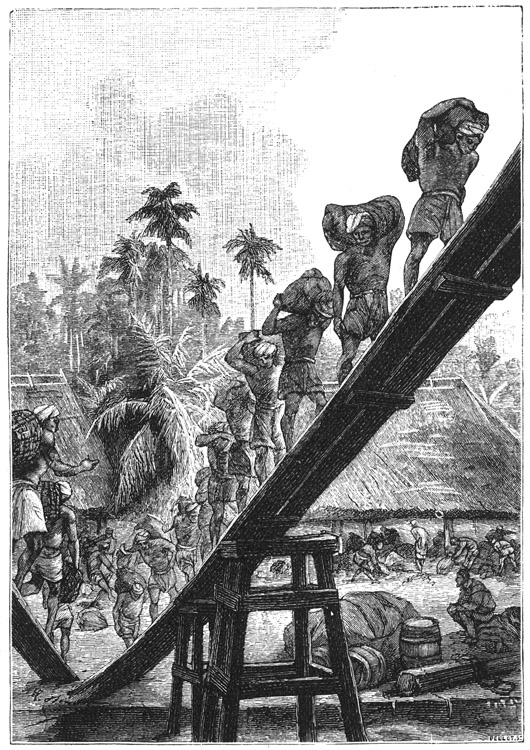... die Vorräthe in dieser großen Stadt zu ergänzen.
Zwischen diesen Inseln befinden sich eine Menge von Meerengen, die sich alle gegen die See von Timor öffnen. Der »Dolly-Hope« mußte in diesen klippenreichen Gegenden ungemein vorsichtig fahren, da gerade in den malayischen Gewässern die meisten Schiffbrüche vorkommen. Von der Insel Flores ab fuhr Capitän Ellis den anderen Inselketten, die im Süden das Meer der Molukken abschließen, entlang, ohne aber zu einem Erfolge zu kommen. Bei einem solchen Mißerfolge kann man sich nicht wundern, wenn die Mannschaft schließlich entmuthigt wurde.
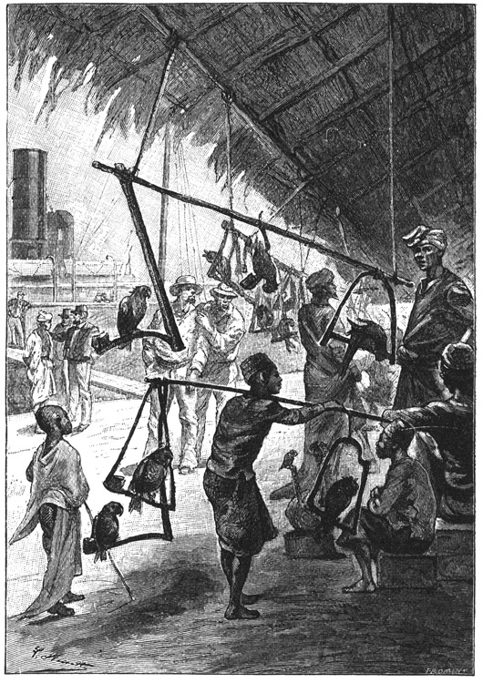... legte am Morgen des 20. Juni in Singapore an
Aber deswegen durfte man noch nicht die Hoffnung aufgeben, den »Franklin« doch noch zu finden, denn es war möglich, daß Capitän John, als er die Philippinen verließ, nicht durch die Meerenge von Mahkassar, sondern durch den Archipel der Molukken gefahren war, um das Javanische Meer zu erreichen, und sich dann entlang der Insel Celebes gehalten hatte.
Unterdessen floß die Zeit dahin. Weder auf Timor, noch auf den Molukken war es möglich, irgend eine Spur oder Nachricht über ein Schiff zu erhalten, das im Frühjahre 1875 in diesen Breitegraden gesunken wäre. Am 23. September kam der »Dolly-Hope« nach Timor, am 27. December nach Gilolo, und diese drei Monate flossen dahin, ohne einen Lichtstrahl in die Sache zu bringen. Das Schiff hatte seine Fahrt beendigt, denn bei der Insel Gilolo, der wichtigsten der Molukken, schloß sich jener Kreis, den Ellis um die malayischen Länder gefahren war. Die Mannschaft pflegte dann durch einige Tage der Ruhe, deren sie auch sehr bedurfte. Und doch, was hätten diese Leute nicht noch Alles gewagt, wenn sie auf eine Spur gekommen wären.
In Ternate, der Hauptstadt der Insel Gilolo, nahm der »Dolly-Hope« Lebensmittel und Kohlen für die Rückfahrt an Bord, und hier ging das Jahr 1881 zu Ende ... das sechste seit dem Verschwinden des »Franklin«. Am 9. Januar wurden die Anker gelichtet und das Schiff schlug die Richtung nach Nordost ein.
Die Fahrt war wegen der vielen Stürme eine gefährliche und langwierige, so daß erst am 23. Januar das Schiff von den Semaphoren von San-Diego signalisirt wurde.
Die Fahrt hatte neunzehn Monate gedauert, und trotz der Anstrengungen des Capitäns Ellis, trotz der Todesverachtung seiner Mannschaft blieb das Verschwinden des »Franklin« in ein undurchdringliches Dunkel gehüllt.
Die Briefe, welche Mrs. Branican über den Verlauf der Expedition erhalten hatte, ließen sie kaum noch hoffen, daß dieselbe von Erfolg gekrönt sein werde. Sobald sie erfahren hatte, daß der »Dolly-Hope« in Sicht sei, begab sie sich mit Mr. William Andrew sogleich an Bord desselben, nachdem er Anker geworfen hatte.
Man sah es sofort dem Capitän Ellis und seiner Mannschaft an, daß auch der zweite Theil der Expedition von keinem Erfolge begleitet gewesen war. Mrs. Branican reichte dem Capitän die Hand, trat dann auf die Matrosen zu, die so viel Strapazen erduldet hatten, und sagte:
»Ich danke Ihnen, Capitän Ellis, ich danke Euch, meine Freunde! ... Sie haben Alles gethan, was ich von Ihrer Hingebung erwarten konnte! Sie haben keinen Erfolg gehabt und vielleicht verzweifeln Sie für immer an einem solchen ... Ich verzweifle nie! ... Nein! Ich verzweifle nicht, wir werden John und seine Leute wiederfinden! ... Ich vertraue auf Gott ... Er wird mein Gebet erhören! ...« Diese Worte zeugten von einer seltenen Entschlossenheit und drückten so fest ihre Hoffnung auf Erfolg aus, daß ihre Ueberzeugung alle Herzen mit sich hätte reißen müssen, wenn nicht jeder fest an den Untergang des »Franklin« geglaubt hätte.
Und wäre es doch nicht vielleicht besser gewesen, sich dem Ahnungsvermögen nicht zu verschließen, womit die Natur eine Frau so oft ausstattet? Während der Mann nur auf Thatsachen und deren Folgen sieht, so ist sicher, daß die Frau besser in die Zukunft blickt. Wer weiß, ob Mrs. Branican nicht eines Tages gegen die öffentliche Meinung Recht behalten würde?
Mr. William und sie stiegen dann in die Cajüte hinab, wo der Capitän Ellis ihnen einen genauen Bericht über die Fahrt gab. Die auf dem Tische ausgebreiteten Karten gestatteten, die Routen des Dampfers zu all den Inseln und Inselchen und die Nachforschungen in dem Innern der vielen Länder zu verfolgen. Zum Schlusse sagte er:
»Gestatten Sie mir, Mrs. Branican, Ihre Aufmerksamkeit auf Folgendes zu lenken: Der ›Franklin‹ ist zum letztenmale auf der Südspitze von Celebes am 3. Mai 1875 gesehen worden, also sieben Wochen nach seiner Abfahrt von San-Diego, und seit diesem Tage ist er verschollen. Da er nun nicht nach Singapore gekommen ist, so hat die Katastrophe ohne Zweifel im Javanischen Meere stattgefunden. Auf welche Weise? Da giebt es zwei Muthmaßungen: Entweder ist der ›Franklin‹ untergegangen oder er ist bei einem Zusammenstoße gesunken, ohne eine Spur zurückzulassen. Die zweite Muthmaßung ist, daß er an den Klippen zerschellte oder durch malayische Seeräuber zerstört wurde; in den beiden letzten Fällen wäre es wohl möglich gewesen, einige Trümmer zu finden. Doch trotz der sorgfältigsten Nachforschungen gelang es uns nicht, einen Beweis von der Zerstörung des Schiffes zu erhalten. Aus alledem ergiebt sich logisch, daß wir nur einen Fall der ersten Hypothese ins Auge fassen müssen, nämlich, daß der ›Franklin‹ einem jener furchtbaren Wirbelstürme zum Opfer gefallen ist, die in den malayischen Gewässern so häufig sind. Im zweiten Falle wäre doch früher oder später etwas über den Zusammenstoß zweier Schiffe bekannt geworden. Es bleibt also keine Hoffnung mehr übrig.«
Das sah auch Mr. William Andrew ein und er schlug vor den fragenden Blicken der Mrs. Branican traurig die Augen zu Boden.
»Nein, nein! sagte sie, nein! ... Der ›Franklin‹ ist nicht untergegangen! ... Nein! John und seine Leute leben noch! ...«
So mußte denn der Capitän Ellis die Einzelheiten seiner Expedition immer wieder erklären und auseinandersetzen. Nachdem diese Unterredung drei Stunden gedauert hatte, fragte Capitän Ellis, als sich Mrs. Branican verabschieden wollte, ob sie wünsche, daß man den »Dolly-Hope« abtakle.
»Nein, Herr Capitän, erwiderte sie, ich würde es mit Bedauern sehen, wenn Ihre Mannschaft und Sie die Absicht hätten, sich auszuschiffen. Können nicht neue Angaben uns veranlassen, noch eine zweite Expedition zu unternehmen? Wenn Sie daher gewillt wären, das Commando des ›Dolly-Hope‹ ...
– Sehr gern, Mrs. Branican, aber ich gehöre dem Hause Andrew, und es ist möglich, daß es meiner Dienste bedarf ...
– Das soll Sie nicht abhalten, lieber Ellis, erwiderte Mr. William Andrew. Es freut mich, wenn Sie sich Mrs. Branican zur Verfügung stellen.
– Ich stehe zu Diensten, Herr Andrew. Meine Mannschaft und ich werden den »Dolly-Hope« nicht verlassen.
– Und ich bitte Sie, Herr Capitän, erwiderte Mrs. Branican, darauf zu achten, daß das Schiff stets bereit ist, in See zu stechen.«
Als William Andrew seine Zustimmung gab, da that er es nur, um Mrs. Branican einen Gefallen zu erweisen, denn sowohl er wie der Capitän Ellis zweifelte nicht, daß sie nach den Mißerfolgen der ersten Expedition auf eine zweite wohl verzichten werde. Wenn auch die Zeit nie in ihr die Erinnerung an die Katastrophe auslöschen würde, so würde sie wenigstens schließlich jede Hoffnung vernichten.
So wurde also nach den Befehlen der Mrs. Branican der »Dolly-Hope« nicht abgetakelt. Ellis und seine Leute blieben auf dem Schiffe und erhielten ihren Gehalt ebenso, als wenn sie auf der Fahrt begriffen wären. Uebrigens hatte das Schiff auch mehrfache Ausbesserungen nöthig, da es doch sehr gelitten hatte. Als diese Arbeiten beendigt waren, wurden Lebensmittel und Kohlen eingeschifft, so daß es bei dem ersten Befehle in See stechen konnte.
Mrs. Branican wohnte immer noch im Prospect-House, wo außer Ellis und Mr. William Andrew Niemand Zutritt hatte. Sie lebte ganz in der Erinnerung und Hoffnung, indem sie stets an ihr doppeltes Unglück dachte. Der kleine Wat wäre jetzt sieben Jahre alt, gerade die Zeit, wo das erste Licht den jungen Geist erleuchtet – und der kleine Wat war nicht mehr! Dann dachte sie an Zach Fren, der sie mit Lebensgefahr gerettet hatte und den sie so gerne kennen gelernt hätte, aber er war noch nicht von San-Francisco zurück. Doch das würde nicht mehr so lange dauern, da die Schiffszeitungen schon einigemale über den »Californian« Nachrichten brachten; gewiß würde er gegen Ende des Jahres 1881 zurück sein. Dann würde sie ihn sofort zu sich rufen und ihm ihre große Schuld abtragen.
Auch hörte Mrs. Branican nicht auf, die Familien, welche durch den Untergang des »Franklin« so schwer betroffen worden waren, zu unterstützen, und sie verließ nur ihr Haus, um sich in die armen Viertel der Stadt zu begeben.
Ihr Edelmuth zeigte sich bei den verschiedensten Angelegenheiten. Auch fragte sie Mr. William Andrew wegen der Gründung eines Waisenhauses in San Diego um Rath.
»Herr Andrew, sagte sie, ich will dasselbe zur Erinnerung an unser Kind errichten und es mit allen nothwendigen Hilfsmitteln ausstatten. Ich zweifle nicht, daß John bei seiner Rückkunft das billigen wird, denn welch' besseren Gebrauch könnten wir von unserem Vermögen machen?«
Mr. William Andrew hatte keine Ursache, etwas dagegen einzuwenden und er stellte sich wegen Einleitung der nothwendigen Schritte Mrs. Branican zur Verfügung. Hundertfünfzigtausend Dollars sollten zur Erwerbung eines passenden Hauses und zur Ausführung der nothwendigen Einrichtungen verwendet werden.
Dieses Project ging, Dank dem Gemeinderathe der Stadt, bald seiner Ausführung entgegen. Es wurde ein großes Gebäude, welches in frischer Luft auf den Abhängen von San-Diego stand, gekauft und ein geschickter Baumeister richtete dasselbe für seine Bestimmung ein, indem fünfzig Kinder mit dem genügenden Personal zu ihrer Pflege und Erziehung darin Platz finden sollten. Da sich um dasselbe auch ein großer, schattiger Garten mit stets frischem Wasser befand, so entsprach dieses Haus vollkommen allen modernen Anforderungen.
Am 10. Mai wurde dieses Hospiz, welches den Namen Wat-House erhielt, unter dem Beifalle der ganzen Stadt, die bei dieser Gelegenheit der edlen Gründerin ihre Sympathie ausdrücken wollte, eröffnet. Aber Mrs. Branican erschien nicht zu dieser Feierlichkeit und wollte ihr Haus nicht verlassen. Sobald eine Anzahl Kinder in dem Wat-House aufgenommen waren, kam sie jeden Tag zu ihnen, als wenn sie ihre Mutter gewesen wäre. Die Kinder blieben in diesem Hause bis zu ihrem zwölften Jahre, lernten lesen, schreiben und rechnen und konnten sich ein beliebiges Handwerk wählen. Diejenigen, welche sich dem Seeleben widmen wollten, konnten sich als Schiffsjungen einschiffen, und gerade diese waren der Gründerin am liebsten, gewiß aus Erinnerung an ihren John.
Bis zum Ende des Jahres 1881 war noch immer keine Nachricht über den »Franklin« nach San Diego oder anderswohin gedrungen, obwohl die größten Belohnungen demjenigen in Aussicht gestellt wurden, der die kleinste Spur gefunden hätte. Und doch verzweifelte die Frau nicht. Was ihr das Jahr 1881 nicht gebracht hatte, würde ihr vielleicht das Jahr 1882 bringen ...
Was war denn aus Mr. und Mrs. Burker geworden? Wohin hatte sich dieser Mann geflüchtet, um den Verfolgungen zu entgehen? Die Polizei gab ihre Nachforschungen schließlich auf, und Mrs. Branican mußte verzichten, jemals zu erfahren, was aus Jane geworden war.
Aber sie wunderte sich, daß sie nie von ihr einen Brief erhielt, den sie doch hätte schreiben können, ohne die Sicherheit ihres Mannes auf das Spiel zu setzen. Wußten sie denn Beide nicht, daß Dolly ihren Verstand wiedererlangt, daß sie ein Schiff zur Auffindung des »Franklin« ausgeschickt hatte, und daß diese Expedition ohne Erfolg geblieben war? Hatten denn nicht die Zeitungen beider Halbkugeln lange Artikel über diese Reise gebracht, und konnte man glauben, daß sie dies nie erfahren hätten? Sie mußten sogar von der großen Erbschaft gehört haben, die sie gemacht hatte, und daß sie im Stande war, ihnen zu helfen. Und doch hatte weder Len noch Jane gewagt, ihr zu schreiben, obwohl sie sich in einer traurigen Lage befinden mußten.
Die ersten drei Monate des Jahres 1882 waren verflossen; noch immer hörte man nichts über den »Franklin«. Schon glaubte man, daß auch dieses Jahr so vorüberfließen würde, als etwas eintrat, was ein wenig Licht auf das Verschwinden dieses Schiffes zu werfen schien.
Am 27. März kam der Dampfer »Californian«, auf welchem sich der Matrose Zach Fren befand, nach San-Francisco, nachdem er durch mehrere Jahre die Meere Europas befahren hatte. Sobald Mrs. Branican dies hörte, schrieb sie an Zach Fren, indem sie ihn einlud, sofort zu ihr nach San-Diego zu kommen. Da er selbst die Absicht hatte, seine Vaterstadt zu besuchen, um einige Monate hier auszuruhen, so antwortete er, daß er sich nach der Ausschiffung sofort nach San-Diego begeben und sein erster Besuch dem Prospect-House gelten werde.
In derselben Zeit aber verbreitete sich eine Nachricht, die in allen Zeitungen der Vereinigten Staaten widerhallte. Man erzählte nämlich, daß der »Californian« einen Balken aufgefischt hatte, welcher wahrscheinlich vom »Franklin« herrührte. Eine Zeitung von San-Francisco setzte hinzu, daß der »Californian« dieses Holz im Norden von Australien, in den Gewässern bei der Insel Melville, westlich von der Meerenge Torres, gefunden habe.
Als diese Nachricht nach San-Diego gelangte, eilten Mr. William Andrew und der Capitän Ellis sofort in das Prospect-House. Bei dem ersten Worte erbleichte Mrs. Branican, dann aber sagte sie in jenem Tone, der eine feste Ueberzeugung ausdrückt:
»Nach dem Stück Holze wird man den ›Franklin‹ finden und nach dem ›Franklin‹ John und seine Gefährten.«
In der That war das höchst bedeutungsvoll. Man besaß jetzt einen Ring jener Kette, die die Gegenwart mit der Vergangenheit verband.
Sofort ließ Mrs. Branican eine Karte von Australien bringen, und nun mußten Mr. William Andrew und der Capitän Ellis die Frage einer neuen Seereise studieren, denn sie wollte, daß dieser Entschluß sogleich gefaßt werde.
»So hat der ›Franklin‹ nicht seinen Weg über Singapore genommen, bemerkte zuerst William Andrew.
– Aber das ist unmöglich ... das ist unmöglich, erwiderte der Capitän Ellis.
– Doch, wenn er diesen Weg genommen hätte, wieso hätte man nördlich von der Insel Melville dieses Holz finden können?
– Das kann ich mir nicht erklären, Herr Andrew, erwiderte der Capitän. Ich weiß nur, daß der ›Franklin‹ auf seiner Fahrt südwestlich von der Insel Celebes gesehen worden ist, nachdem er die Meerenge von Mahkassar verlassen hatte. Wenn er durch diese Meerenge gefahren ist, so konnte er nur von Norden und nicht von Osten gekommen sein; er hat daher nicht durch die Meerenge von Torres fahren können.«
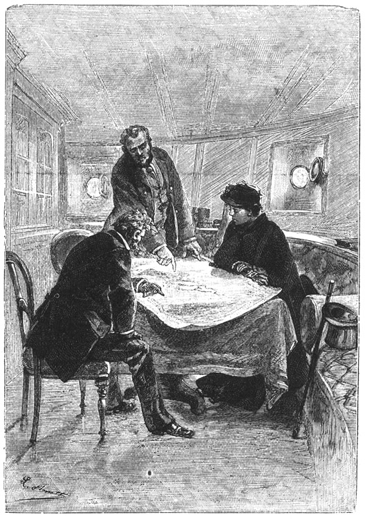... wo der Capitän Ellis einen genauen Bericht über seine Fahrt gab.
Diese Frage wurde lange in Erwägung gezogen, und schließlich mußte William Andrew dem Capitän Recht geben.
Mrs. Branican hörte das Für und das Wider stillschweigend an, aber eine Falte auf ihrer Stirn zeigte, mit welcher Zähigkeit, mit welchem Eigensinn sie sich weigerte, den Untergang Johns und seiner Gefährten zuzugeben. Nein! Sie würde nicht daran glauben, so lange sie nicht einen wirklichen Beweis von ihrem Tode in den Händen hätte.
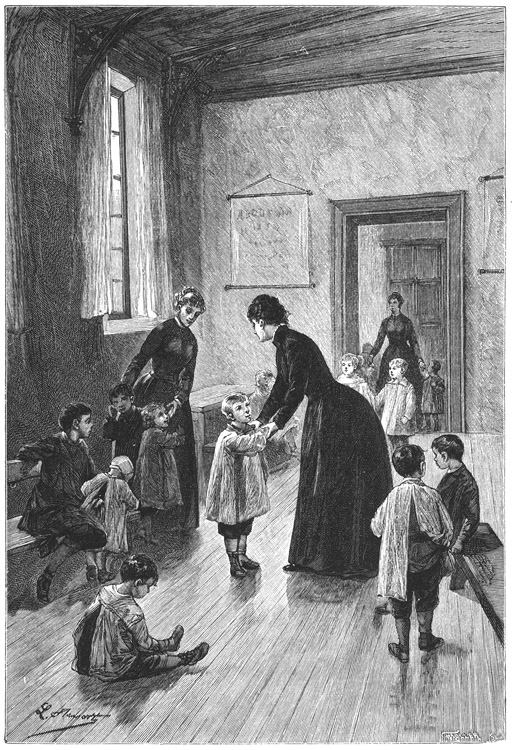... kam sie jeden Tag zu ihnen, als wenn sie ihre Mutter wäre.
»Es sei, sagte Mr. William Andrew, ich bin Ihrer Meinung, lieber Ellis, daß der ›Franklin‹ das Javanische Meer durchschneiden mußte, indem er gegen Singapore fuhr ...
– Wenigstens theilweise, Herr Andrew, weil zwischen Singapore und der Insel Celebes der Schiffbruch hat stattfinden können.
– Gut, aber wie konnte das Holz bis nach Australien kommen, wenn der ›Franklin‹ auf einer Klippe jenes Meeres gescheitert ist?
– Das ist mir nur auf eine Weise verständlich, indem nämlich dieses Holz durch die Meerenge der Sundainseln oder eine der anderen Meerengen getrieben wurde, welche diese Inseln von der Timor-See trennen.
– Geht die Strömung nach dieser Seite?
– Ja, Herr Andrew, ich sage sogar, daß, wenn der ›Franklin‹ durch einen Sturm verschlagen worden war, er leicht bis an die nördliche Küste Australiens getrieben werden konnte.
– Wirklich, lieber Ellis, das ist die einzige plausible Hypothese, und wenn ein Stück Holz des Schiffes bei der Insel Melville sechs Jahre nach dem Schiffbruche gefunden wurde, so kann es sich nur von den Klippen losgemacht haben, an denen der ›Franklin‹ gescheitert ist.«
Auf diese Erklärung eines so tüchtigen Seemannes war nichts zu erwidern.
Mrs. Branican, die keinen Blick von der Karte gewendet hatte, sagte dann:
»Da der ›Franklin‹ wahrscheinlich an die Küste von Australien geworfen wurde und die Schiffbrüchigen nicht zurückgekehrt sind, so werden sie bei den Eingeborenen gefangen gehalten ...
– Dolly, das ist nicht unmöglich ... und doch ...« erwiderte Mr. William Andrew.
Mrs. Branican wollte eben gegen jeden Zweifel energisch protestiren, als der Capitän Ellis sagte:
»Jetzt handelt es sich vor Allem darum, ob das aufgefischte Holz wirklich zu dem ›Franklin‹ gehörte.
– Zweifeln Sie daran? fragte Dolly.
– Das werden wir bald wissen, erwiderte Mr. William Andrew, denn ich habe Befehl gegeben, uns diesen Fund zu senden.
– Und ich, fügte Mrs. Branican bei, gebe den Befehl, daß der ›Dolly-Hope‹ sich bereit halte, in See zu stechen.«
Drei Tage später kam der Hochbootsmann Zach Fren, der soeben in San-Diego angelangt war, in das Prospect-House.
Er war ungefähr siebenunddreißig Jahre alt, von kräftiger Gestalt, und hatte in dem wettergebräunten Gesichte jenen offenen Zug, der sofort Vertrauen einflößt.
Mrs. Branican nahm ihn mit so großer Dankbarkeit auf, daß er nicht wußte, was er sagen sollte.
»Mein Freund ... Sie ... Sie haben mir das Leben gerettet ... Sie ... der Alles gethan hat, um mein Kind zu retten ... was kann ich für Sie thun?«
Der Hochbootsmann erklärte, daß er nur seine Pflicht gethan habe ... Ein Matrose, der nicht so handeln würde, wäre kein Matrose ... Er bedauere nur, daß er nicht auch das Kind hätte retten können ... Aber er verdiene dafür nichts ... Er dankte Mrs. Branican für ihre Aufmerksamkeit ... Wenn sie es ihm erlaube ... so würde er sie besuchen, so lange er am Lande wäre ...
»Seit vielen Jahren, Zach Fren, sehe ich Ihrer Rückkehr entgegen und ich hoffe, daß Sie an meiner Seite sein werden, wenn der Capitän John wiederkehren wird ...
– Wenn der Capitän John wiederkehren wird!
– Zach Fren, glauben Sie? ...
– Daß der Capitän John todt ist? ... Nein! ... Nein! ...
– O ... Sie haben auch noch Hoffnung?
– Mehr als Hoffnung, Mrs. Branican ... eine schöne, gute Gewißheit ... Geht ein solcher Capitän, wie Capitän John, in einem Windstoße wie eine Landratte unter? ... Nein! ... So etwas ist noch nicht dagewesen!«
Die Worte des Matrosen regten Mrs. Branican ungemein auf, denn sie sah, daß sie nicht die einzige war, zu glauben, daß John wiedergefunden würde ... Noch ein Mensch theilte ihre Ueberzeugung ... und dieser andere war ihr Lebensretter ... Sie sah dies für ein Zeichen der Vorsehung an.
»Ich danke, Zach Fren, ich danke! ... Sie wissen nicht, wie wohl mir diese Worte thun ... Sagen Sie noch einmal ... sagen Sie noch einmal ... daß der Capitän John den Schiffbruch überlebt hat.
– Allerdings ... allerdings, Mrs. Branican! Der Beweis ist doch da ... und wenn dies noch kein Beweis ist ... so wird man noch einen anderen finden ...«
Dann erzählte Zach Fren, auf welche Weise jenes Stück Holz von dem »Californian« aufgefischt worden war. Endlich sagte Mrs. Branican:
»Ich bin entschlossen, Zach Fren, sofort neue Nachforschungen anstellen zu lassen ...
– Gut ... und diesmal werden Sie Erfolg haben ... und wenn Sie mir erlauben, so fahre ich mit.
– Sie wollen sich dem Capitän Ellis anschließen? ...
– Von Herzen gern!
– Ich danke, Zach Fren! ... Ich glaube, wenn Sie an Bord des Schiffes sein werden, wird das von guter Vorbedeutung sein.
– Ich glaube es auch, Mrs. Branican, sagte Zach Fren, indem er mit den Augen zwinkerte ... ja, ich glaube es auch ... und ich fahre mit.«
Dolly nahm ihn bei der Hand und druckte sie wie die eines Freundes. Die Hoffnung riß sie mit sich – verwirrte sie. Sie wollte glauben, daß der Matrose dort Glück haben würde, wo die Andern Mißerfolg hatten. Aber man wollte doch, wie dies auch der Capitän Ellis bemerkt hatte – obwohl Mrs. Branican fest überzeugt war – die Gewißheit haben, daß das Holz dem »Franklin« gehöre. Dieses Bruchstück, welches ungefähr zehn Meilen von der Küste der Insel Melville aufgefischt worden war, war ein Stück des vorderen Steven oder vielmehr jener Verzierung, der Gallion, die sich gewöhnlich am Vordertheile der Segelschiffe befindet. Dieses Holzstück war schon sehr verwittert, nicht weil es lange im Wasser gelegen hatte, sondern weil es den Einwirkungen der Luft ausgesetzt gewesen war. Daraus konnte man also schließen, daß es lange Zeit auf den Klippen lag, an denen das Schiff scheiterte, und daß es durch irgend eine Ursache – wahrscheinlich durch einen Sturm – losgerissen und mehrere Monate oder Wochen herumgeschwommen war, als es von dem »Californian« aufgefischt wurde. Was nun das Schiff anbelangt, war das wirklich der »Franklin«? ... Ja, denn die Schnitzerei, die auf diesem Holze gefunden wurde, sah der ähnlich, die sich am Vordertheile des »Franklin« befand. Und wirklich verhielt es sich so. Das Stück Holz wurde nach San-Diego gebracht und man erkannte bald, daß es dem verschollenen Schiffe angehörte.
Jetzt konnte man auch der Ansicht des Capitän Ellis zustimmen: Da der »Franklin« im Südwesten von Celebes gesehen wurde, so mußte er einige Tage später durch die Meerenge der Sundainseln oder anderer, die sich gegen die See von Timor öffneten, schwimmen und so an die Küste von Australien gelangen.
Es war daher ganz gerechtfertigt, ein Schiff zur Erforschung der Sundainseln und der Nordküste von Australien auszusenden. Würde diese Fahrt von mehr Erfolg begleitet sein, als die zwischen den Philippinen und den Molukken? Man konnte es wohl hoffen.
Diesmal wollte Mrs. Branican selbst an der Fahrt theilnehmen, aber Mr. William Andrew, der Capitän Ellis und auch Zach Fren überzeugten sie schließlich – wenn auch mit Mühe – daß diese Fahrt sehr lange dauern und die Anwesenheit einer Frau nur störend einwirken würde.
Es ist selbstverständlich, daß Zach Fren als Hochbootsmann aufgenommen wurde, und der Capitän traf nun die letzten Anstalten, um sobald wie möglich abzufahren.
Der ›Dolly-Hope‹ verließ am 3. April 1882 den Hafen von San-Diego, und der Capitän nahm mehr eine Richtung nach Südwest, denn er wollte auf dem kürzesten Wege durch die Meerenge von Torres in die See von Arafoura kommen, jenseits deren das Bruchstück des ›Franklin‹ gefunden worden war.
Am 26. April hatte man die Gilbertinseln in Sicht, welche in jenen Breitegraden zerstreut liegen, wo die Windstillen des Großen Oceans den Segelschiffen so lästig sind. Nachdem Capitän Ellis die zwei Inselgruppen Scarborough und Kingsmill seitwärts gelassen hatte, durchschnitt er die Inselgruppe Vanikoro.
Zweihundert Meilen weiter durchkreuzte der ›Dolly-Hope‹ den Salomon-Archipel, der aus ungefähr einem Dutzend großer Inseln besteht. Er fuhr weiter und beeilte sich in die Meerenge von Torres zu kommen, da der Capitän nicht weniger ungeduldig war als Zach Fren, den Theil des Meeres von Arafoura zu erreichen, wo das Stück Holz gefunden wurde. Von hier aus sollten dann mit unermüdlicher Ausdauer die sorgfältigsten Nachforschungen angestellt werden, die vielleicht von Erfolg begleitet sein würden.
Einige Tage später, nachdem sie den Salomon-Archipel durchfahren hatten, gelangten sie an den Inseln Rossel, Trobriand und einer großen Anzahl Inselchen vorüber.
Nach dreiwöchentlicher Fahrt hatten sie Neu-Guinea in Sicht, dann das Cap York, die nördliche und südliche Grenze der Meerenge von Torres,
Letztere ist ungemein gefährlich für die Schifffahrt, und kein Capitän wagt es, dieselbe zu durchsegeln, weil die Versicherungsgesellschaften der Schiffe für diese Gegend keine Garantie übernehmen.
Fortwährende Sturzwellen, welche von Osten nach Westen gehen, schleudern die Gewässer des Stillen Oceans in den Indischen. Man kann sich nur durch einige Stunden des Tages, wo die Stellung der Sonne das Brechen der Wogen an den Klippen erkennen läßt, dorthin wagen.
Als man diese Meerenge vor sich hatte, fragte der Capitän seinen Hochbootsmann Zach Fren:
»Also auf der Höhe von Melville hat der ›Californian‹ das Stück Holz aufgefischt?
– Ja.
– Man kann also sagen, ungefähr fünfhundert Meilen von hier?
– Ja, Capitän, und ich verstehe Sie: Da die Strömung regelmäßig von Osten nach Westen geht und dieses Holz auf der Höhe von Melville aufgefangen wurde, so muß der ›Franklin‹ am Eingange der Meerenge von Torres gescheitert sein.
– Ohne Zweifel, Zach Fren, und man müßte daraus schließen, daß Capitän John diesen gefährlichen Weg nach Singapore eingeschlagen hat. Das werde ich nie glauben. Im Gegentheil, er hat das Malayische Meer durchfahren, weil er das letztemal auf der Anhöhe von Celebes gesehen worden ist.
– Und da dies feststeht, bemerkte der Obersteuermann, so folgt daraus, daß der Capitän Branican, wenn er in die See von Timor vorgedrungen ist, nur durch eine der Meerengen dahin gelangen konnte, welche die Sundainseln trennen.
– Das ist unbestreitbar, erwiderte der Capitän.
– Und ich verstehe nicht mehr, warum der »Franklin« nach Osten getrieben werden konnte, versetzte der Obersteuermann.
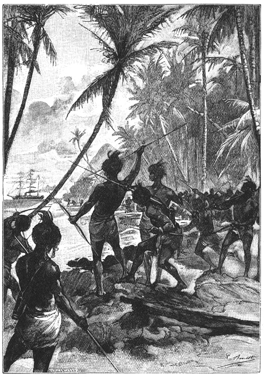... und die Eingeborenen in Respect zu halten.
– Ich kann mir nur denken, daß nach dem Holze, welches in dem Indischen Meere gefunden wurde, der Schiffbruch in der Nähe der Sundainseln oder an der westlichen Küste von Australien stattgefunden hat.
– Da das Holz auf der Höhe von Melville aufgefischt wurde, erwiderte der Capitän, so glaube ich, daß der »Franklin« in dem Theile des Meeres von Arafoura, der an die Meerenge von Torres grenzt, oder in dieser selbst gescheitert ist.
– Vielleicht, bemerkte Zach Fren, sind entlang der Küste Australiens Strömungen, welche den »Franklin« gegen die Meerenge getrieben haben. In diesem Falle müßte der Schiffbruch im Westen von dem Meere von Arafoura stattgefunden haben.
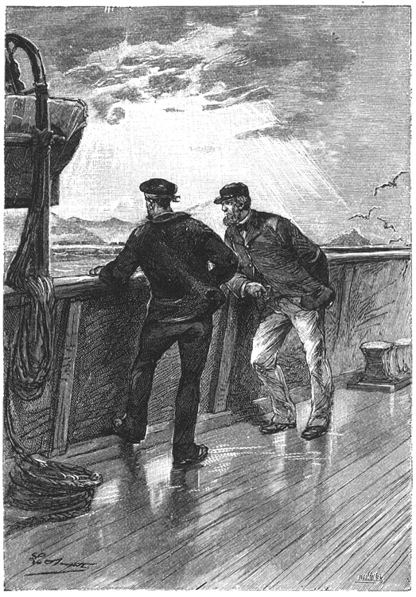»Das ist sonderbar«, bemerkte Zach Fren.
– Wir werden's ja sehen, sagte der Capitän. Unterdessen aber fahren wir so, als wenn der »Franklin« an den Klippen von Torres gescheitert wäre ...
– Und wenn wir gut fahren, wiederholte Zach Fren, so werden wir den Capitän John auch finden.«
So war es im Ganzen das Beste und so wurde es auch durchgeführt.
Die Breite der Meerenge von Torres beträgt ungefähr dreißig Meilen. Man kann sich schwer einen Begriff von den Inselchen und Klippen in diesem Wasser machen, die auf den besten Karten nicht richtig dargestellt sind.
Man zählt deren ungefähr neunhundert, deren bedeutendste kaum einen Flächeninhalt von drei bis vier Meilen haben. Ihre Bewohner sind die Andamenenstämme, die den Schiffen, welche in ihre Hände fallen, sehr gefährlich werden können, wie dies die Ermordung der Matrosen des »Chesterfield« und ›Hormuzier‹ beweist.
In ihren leichten Booten können diese Eingeborenen ohne Mühe von Neu-Guinea nach Australien und von Australien nach Neu-Guinea fahren. Wenn sich daher John und seine Gefährten auf eine dieser Inselchen geflüchtet hatten, so wäre es ihnen etwas Leichtes gewesen, die australische Küste, dann irgend einen Vorsprung des Golfes von Carpentaria oder der Halbinsel York zu erreichen und ihre Rückkehr wäre nicht mehr schwierig gewesen. Da aber Alle verschollen waren, so waren sie wahrscheinlich in die Hände jener Eingeborenen gefallen, von denen sie dann nicht viel Schonung erwarten konnten. Diese Wilden tödten ihre Gefangenen und fressen sie. Wo hätte man dann eine Spur von solchen blutigen Katastrophen finden können?
So dachte es sich der Capitän Ellis, so sagten es die Matrosen vom »Dolly-Hope«. Ein solches Schicksal mußten die Ueberlebenden des »Franklin« gefunden haben, wenn sie in die Meerenge von Torres gerathen waren ... Zwar blieb noch die Möglichkeit, daß sie eben nicht durch diese Meerenge gefahren waren; aber wie kam dann das Stück Holz zur Insel Melville?
Unerschrocken fuhr der Capitän Ellis in diese gefährlichen Gewässer ein, indem er alle von der Klugheit gebotenen Maßregeln traf. Da er ein gutes Dampfschiff, wachsame Officiere und eine muthige und kaltblütige Mannschaft hatte, so hoffte er glücklich durch dieses Klippenlabyrinth zu kommen und die Eingeborenen, die einen Angriff versuchen würden, in Respect zu halten.
Die Schiffe, welche in die Meerenge von Torres eindringen, deren Oeffnung auf der Seite gegen den Stillen Ocean reich an Korallenbänken ist, fahren mit Vorliebe der australischen Küste entlang. Da sich aber im Süden von Papouasien eine ziemlich große Insel, Namens Murray, befindet, so fuhr der »Dolly-Hope« zwischen den zwei berühmten Riffen Eastern-Fields und Boot-Reef hindurch. Letzteres machte durch die eigenthümliche Gestalt seiner Felsen den Eindruck, als läge ein Schiff auf denselben. Die Schaluppe wurde rasch ausgesetzt, doch wurde man ebenso schnell gewahr, daß man sich getäuscht hatte.
Manchmal umkreisten mehrere einfache Boote der Eingeborenen das Schiff, doch dieses konnte ganz um die Insel herumfahren, ohne von ihnen angegriffen zu werden.
Nachdem der »Dolly-Hope« in Somerset, einem Hafen von Nordaustralien, seine Vorräthe ergänzt hatte, durchsuchte der Capitän sorgfältig die Inseln zwischen dem Golfe von Carpentaria und Neu-Guinea.
Nach mehreren Versuchen gelang es dem Capitän, mit einigen Mados oder Häuptlingen auf diesen Inseln in Verbindung zu treten. Da man sich aber sehr schwer verständlich machen konnte, so gelang es nicht zu erfahren, ob diese Andamenen von einem Schiffbruche Kenntniß hatten, der mit der Zeit des Verschwindens des »Franklin« übereinstimmte. In jedem Falle schien es nicht, daß sie Gegenstände amerikanischer Abkunft besaßen, denn man fand bei ihnen weder Eisen noch Leinenstücke, oder Holztheile von Raaen- und Mastbäumen, die von einem Schiffe herrühren konnten. Als nun Ellis die Inseln der Meerenge von Torres verließ, da konnte er sich sagen, daß er keine Spur von dem Untergange des »Franklin« gefunden habe, wenn es sich auch nicht ganz bestimmt behaupten ließ, daß er hier nicht gescheitert sei.
Es handelte sich jetzt nun darum, das Meer von Arafoura, eine Fortsetzung dessen von Timor, zu durchforschen, das sich zwischen den kleinen Sundainseln im Norden und der australischen Küste im Süden ausdehnt. Hier wollte er zuerst das »Arnheimland« und dann die zahlreichen Inseldurchgänge durchforschen. Auch hier suchte man mit einem Eifer und einer Kühnheit, die nichts entmuthigen konnte. Aber man fand nirgends die Spur eines gescheiterten Schiffes, und weder die Eingeborenen, noch die Chinesen, welche in diesen Gewässern lebhaften Handel treiben, wußten etwas von einem Schiffbruche. Ueberdies, wäre die Bemannung des »Franklin« hier von den australischen Stämmen gefangen genommen worden, so wäre Keiner diesen Cannibalen entkommen.
Am 11. Juli begann Ellis die Inseln Melville und Bathurst, die nur durch einen schmalen Streifen getrennt sind, zu durchforschen. Da zehn Meilen von dieser Inselgruppe das Holz vom »Franklin« gefunden wurde und es nicht mehr weiter nach Westen getrieben worden war, so mußten die Wellen es erst kurz vor der Ankunft des »Californian« von den Klippen weggespült haben. Es war daher möglich, daß der Schauplatz der Katastrophe nicht sehr weit entfernt war.
Diese Durchforschung dauerte ungefähr vier Monate, denn sie umfaßte nicht nur die beiden Inseln, sondern auch die Küsten des »Arnheimlandes« bis zum Queens-Canal und sogar bis zur Mündung des Victoria-River.
Es war sehr schwer, auch das Innere zu durchsuchen, da die Eingeborenen Cannibalen sind und sie stets ihre Gefangenen fressen. Wenn Ellis daher auch verzichten mußte zu erfahren, wo und wann die Bemannung des »Franklin« in die Hände der Wilden gefallen war, so würde es ihm vielleicht doch gelingen, eine Spur von dem Schiffbruche zu finden. Das konnte er umsomehr hoffen, als erst acht Monate seit der Auffischung des Holzes durch den »Californian« verflossen waren, doch trotz der eifrigsten Nachforschungen wurde nichts entdeckt.
Was sollte nun Ellis jetzt beginnen? Sah er seine Fahrt als abgeschlossen an, wenigstens was die australische Küste und die dazugehörigen Inseln anbelangte? Sollte er an die Rückkehr denken, nachdem er noch die kleinen Sundainseln durchforscht haben würde? Kurz, konnte er mit gutem Gewissen sagen, daß er Alles gethan habe, was in seiner Macht stand? Der brave Seemann zögerte, sich zu sagen, daß er Alles gethan habe, obwohl er bis zu den Küsten Australiens vorgedrungen war.
Ein Ereigniß machte diesem Zögern ein plötzliches Ende.
Am Morgen des 4. November ging der Capitän mit Zach Fren auf dem Hinterdeck des Dampfers umher, als der Hochbootsmann ihn auf einige Gegenstände aufmerksam machte, die in der Entfernung von einer halben Meile herumschwammen. Es waren keine Holzstücke oder Baumstämme, sondern ungeheure Haufen Gräser, gelbliche Tange, die aus der Tiefe des Meeres emporgerissen worden waren.
»Das ist sonderbar, bemerkte Zach Fren. Ich will nicht Zach Fren heißen, wenn diese Gräser nicht aus dem Westen oder sogar aus dem Südwesten kommen! Da ist gewiß eine Strömung, die sie von der Seite der Meerenge dahertreibt.
– Ja, erwiderte der Capitän, und das muß eine locale Strömung sein, die nach Osten geht, wenigstens, wenn keine Fluth ist.
– Das glaube ich nicht, erwiderte Zach Fren, denn ich erinnere mich ganz genau – ich sah schon zeitlich früh eine Menge dieser Tange dahintreiben.
– Das ist wirklich wahr?
– So wahr, als wir schließlich den Capitän John finden werden!
– Nun, wenn die Strömung da ist, so könnte es möglich sein, daß das Holz des »Franklin« aus dem Westen kam und entlang der australischen Küste schwamm.
– Das ist auch meine Meinung, versetzte Zach Fren.
– Dann haben wir nicht zu zögern. Wir müssen noch die Küsten an dem Meere von Timor bis zu der äußersten Spitze von West-Australien durchsuchen.
– Ich war nie mehr davon überzeugt, da außer allem Zweifel eine Strömung, deren Lauf deutlich wahrzunehmen ist, die Insel Melville berührt. Wenn daher Capitän Branican in den westlichen Gewässern verschollen ist, so würde es sich deutlich daraus ergeben, daß ein Stück Holz seines Schiffes in die Gegenden getrieben wurde, wo es von dem ›Californian‹ aufgefischt wurde.«
Der Capitän ließ seinen Obersteuermann rufen und fragte ihn, ob sie die Fahrt mehr nach Westen fortsetzen sollten. Dieser war der Meinung, man sollte jene locale Strömung wenigstens bis zu ihrem Anfang verfolgen.
»Gut, fahren wir nach Westen, erwiderte der Capitän. Jetzt müssen wir keinen Zweifel, sondern Gewißheit nach San-Diego bringen. Die Gewißheit, daß von dem ›Franklin‹, wenn er an der australischen Küste gescheitert ist, nichts übrig geblieben ist.«
So fuhr denn der »Dolly-Hope« bis zur Spitze der Insel Timor, um seine Kohlen zu erneuern. Nach einem Aufenthalte von vierundzwanzig Stunden fuhr er auf das Cap von Londonderry zu, das sich an der Westspitze von Australien befindet. Bei dem Verlassen des Queens-Canals fuhr der Capitän so weit wie möglich dem Festland entlang und bemerkte von Turtle Point aus genau, wie die Strömung von Westen nach Osten hin verlief.
Das war keine jener Strömungen, die von der Ebbe und Fluth abhängig war, sondern ein steter Zufluß von Wasser in den südlichen Theil des Meeres von Timor. Nun konnte man die Riffe und Klippen durchsuchen, so lange sich das Schiff an der Grenze des Indischen Oceans nicht auf hoher See befand.
Im Golf von Cambridge eingetroffen, erklärte Ellis, daß es sehr unvorsichtig wäre, sich mit seinem Schiffe in diese klippenreiche und von wilden Stämmen bewohnte Gegend zu wagen. Es wurde daher die Dampfschaluppe von einem halben Dutzend wohlbewaffneter Matrosen bestiegen, um unter dem Befehle Zach Fren's das Innere zu untersuchen.
»Wenn John Branican in die Hände der Eingeborenen dieser Gegenden gefallen ist, bemerkte Ellis ihm gegenüber, so werden die Armen kaum am Leben geblieben sein. Aber uns handelt es sich darum zu wissen, ob einige Trümmer von dem ›Franklin‹ noch vorhanden sind, im Fall die Australier ihn hier angegriffen haben ...
– Das würde mich von diesen Schurken gar nicht wundern,« erwiderte Zach Fren.
Die Vorsicht des Hochbootsmannes war ganz gerechtfertigt und er hielt stets gut Umschau. Er fuhr mit der Schaluppe bis zur Insel Adolphus, dann um sie herum, ohne etwas zu entdecken, was ihn zu weiteren Nachforschungen veranlaßt hätte.
Der »Dolly-Hope« fuhr nun jenseits des Golfes von Cambridge weiter, umschiffte das Cap Dusséjour und fuhr dann gegen Nordwesten der Küste von Westaustralien entlang. Auch hier wurde die unermüdliche Mannschaft durch keinen Erfolg belohnt. Die Anstrengungen und Gefahren wurden jetzt in diesen Gegenden viel größer, weil das Schiff an dieser Küste direct von den heftigen Wirbelstürmen des Indischen Oceans belästigt wurde und es wenig Zufluchtsstellen für ein Segelschiff gab. Ein Dampfer ist immer von seiner Maschine abhängig, welche ihm aber nicht helfen kann, wenn das Meer so furchtbar aufgewühlt wird. Man fuhr nun an Hunderten von kleinen Inseln vorüber, durchsuchte sie ... Alles vergebens.
Gegen Ende des Monats Januar 1883 wurde die Dampfschaluppe an der Mündung des Fitz-Roy im Kingsund von den Eingeborenen angegriffen, wobei zwei Matrosen leicht verletzt wurden. Dank der Kaltblütigkeit des Capitäns war dieser Angriff von keinen weiteren unheilvollen Folgen begleitet.
Der »Dolly-Hope« legte nun auf der Höhe von Lévêque an und der Capitän hielt mit seinem Steuermann und Hochbootsmann eine Besprechung ab, in der man nach sorgfältigem Studium der Karten zu dem Resultate kam, hier an der Grenze des 18. Breitegrades der südlichen Hemisphäre die Expedition zu beendigen. Jenseits des Kingsund ist die Küste ziemlich frei von Inseln und dieser Theil von Tasmanien, der an das Indische Meer grenzt, ist noch immer auf der Karte ein weißer Fleck.
Da dem »Dolly-Hope« auch die Kohlen bald ausgingen, wollte man direct nach Batavia fahren, hier dieselben ergänzen und durch die See von Timor, entlang der Sundainseln, wieder in den Stillen Ocean zurückkehren.
Die Strecke zwischen der nordwestlichen Küste von Australien und dem westlichen Theile der See von Timor enthält keine wichtigen Inseln und man findet dort nur jene eigenthümlichen Formationen von Korallenbänken, die »Felsen, Schalen oder Bänke« genannt werden. Da diese sich oft unter der Oberfläche des Meeres befinden, so ist die Fahrt in diesem Gebiete mit großen Gefahren verbunden.
Das Wetter war schön, das Meer ziemlich ruhig und die ausgezeichnete Maschine des »Dolly-Hope« hatte seit der Abfahrt von San-Diego noch gar nicht gelitten. So kam Alles zusammen, um eine günstige Fahrt zwischen dem Cap Lévêque und der Insel Java zu erwarten. Aber in Wirklichkeit war dies schon die Heimkehr, und der Capitän wollte gerade nur noch die kleinen Sundainseln durchsuchen.
In den ersten Tagen nach der Abfahrt auf der Höhe von Lévêque ereignete sich nichts Besonderes. Den Wachen wurde die strengste Aufmerksamkeit anempfohlen, und sie mußten aus den Mastkörben herab schon von weitem die Riffe und Bänke und Schalen signalisiren, die sich oft kaum über die Oberfläche des Meeres erheben.
Am 7. Februar, gegen neun Uhr Morgens, rief ein Matrose von den Raaen herab:
»Riff in Sicht! Backbordseite!«
Da dasselbe von der Brücke aus nicht gesehen werden konnte, so stieg Zach Fren selbst an den Wanten hinauf und bemerkte ziemlich deutlich ein felsiges Plateau in einer Entfernung von ungefähr sechs Meilen. In Wirklichkeit war es weder ein Felsen noch ein Riff, sondern eine kleine Insel, welche die Form eines Eselrückens hatte, so daß sie vielleicht noch größer war, als sie sich auf diese Entfernung ausnahm.
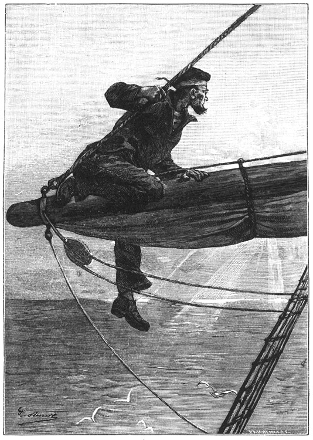... so stieg Zach Fren selbst die Wanten hinauf.
Nach einigen Minuten stieg Zach Fren wieder hinab und meldete dies dem Capitän, der sofort den Befehl gab, um ein Quart anzuluven, um sich der Insel zu nähern. Sie befanden sich jetzt 14 Grad 7 Minuten südlicher Breite und 133 Grad 13 Minuten östlicher Länge, und diese kleine Insel hieß auf den neuesten Karten Browse und lag ungefähr zweihundertfünfzig Meilen vom Yorksund der australischen Küste entfernt.
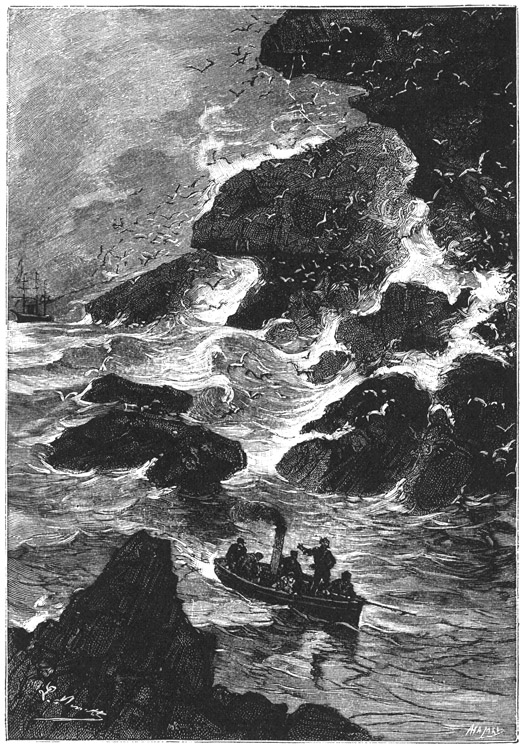Die Einschiffung erfolgte über die Durchfahrt hinüber.
Da diese Insel fast in seiner Route lag, so beschloß der Capitän, sie zu umfahren, ohne sich aber dort aufzuhalten. Nach einer Stunde lag die Insel Browse nur noch eine Meile entfernt, und das Meer brach sich an einem Vorgebirge im Nordwesten mit donnerndem Geräusch. Da sie schief vor den Blicken lag, konnte man sich von ihrer Größe keinen Begriff machen.
Unterdessen war keine Zeit zu verlieren, und der Capitän, der bisher etwas langsamer fahren ließ, rief in den Heizraum den Befehl hinab, wieder schneller zu fahren, als Zach Fren seine Aufmerksamkeit erweckte, indem er sagte:
»Herr Capitän ... Sehen Sie ... dort ... unten ... Steht dort nicht ein Mast auf dem Cap?«
Dabei zeigte er nach Nordosten hin.
»Ein Mast? ... Nein! ... Es scheint nur ein Baum zu sein,« erwiderte Ellis.
Er nahm dann das Fernrohr und sah aufmerksam hin.
»Es ist richtig, sagte er, Sie täuschen sich nicht, Hochbootsmann! ... Es ist ein Mast ... und ich glaube, es hängt auch der Fetzen einer Fahne daran ... Ja! ... Ja! ... Das muß ein Signal sein! ...
– Da wäre es vielleicht besser, wir fahren hin.
– Das ist auch meine Meinung,« erwiderte der Capitän.
Sofort gab er den Befehl, auf die Insel zuzuhalten. Der »Dolly-Hope« näherte sich nun vorsichtig den Riffen, welche die Insel wie ein Gürtel umgaben, an dem sich das Meer donnernd brach.
Bald konnte man die Küste mit freiem Auge wahrnehmen. Sie sah wild und öde aus, ohne das geringste Grün, und war ziemlich zerklüftet; an manchen Stellen durchschnitt ein Vorsprung die Felsenreihen, über denen Scharen von Seevögeln flogen.
Auf dieser Seite sah man keine Schiffstrümmer. Der Mast, welcher auf der äußersten Spitze des Vorgebirges stand, mußte von einem Bugspriet herstammen, aber aus dem Fetzen, der sich am Ende desselben befand, konnte man nicht mehr die Farben der Fahne erkennen.
»Dort sind Schiffbrüchige ... rief Zach Fren.
– Oder gewesen! erwiderte der zweite Officier.
– Es läßt sich nicht bezweifeln, daß hier ein Schiff gescheitert ist.
– Ebenso bestimmt ist es, daß die Schiffbrüchigen dort einen Zufluchtsort gefunden haben; vielleicht haben sie die Insel noch nicht verlassen, weil die nach Indien oder Australien fahrenden Schiffe selten hier vorüberkommen.
– Wollen Sie diese Insel durchsuchen, Herr Capitän? fragte Zach Fren.
– Gewiß, aber bis jetzt habe ich noch keine Stelle gefunden, wo wir landen könnten. Fahren wir also zuerst herum. Wenn sie noch von den unglücklichen Schiffbrüchigen bewohnt ist, so müssen sie uns ja bemerken und ein Zeichen geben.
– Und wenn wir Niemand sehen, was wollen Sie dann thun? fragte Zach Fren.
– Wir werden landen. Wenn diese Insel nicht bewohnt ist, so können sich doch Spuren eines Schiffbruches vorfinden, was für uns von gleichem Interesse ist.
– Und wer weiß? ...
– Wer weiß? Wollen Sie damit sagen, daß der »Franklin« hier an der Insel Browse gescheitert ist, die doch gar nicht auf seiner Route lag?
– Warum nicht?
– Obgleich das sehr unwahrscheinlich ist, so werden wir doch landen.«
Man fuhr also um die Insel herum, die auf allen Seiten gleich felsig und zerklüftet war. Im Hintergrunde standen auf einem Plateau, das weiter keine Spuren von Cultur zeigte, einige Gruppen von Cocosbäumen. Von Bewohnern keine Spur. Keine Schaluppe, kein Fischerboot. So öde wie das Meer, so war es auch die Insel.
Wenn diese Insel Schiffbrüchigen auch keinen genügenden Lebensunterhalt bieten konnte, so doch wenigstens einen Zufluchtsort.
Die Insel Browse hat einen Umfang von etwa sieben bis acht Meilen, was durch den »Dolly-Hope« constatirt wurde, als er um dieselbe herumfuhr. Vergebens spähten die Matrosen nach einem Hafen oder wenigstens einem Einschnitt in die Felsen aus, wo der Dampfer einige Stunden geschützt sein könnte. Sie sahen bald ein, daß eine Landung unmöglich war, und daß sie nur mit den Booten eine Durchfahrt suchen konnten.
Es war ungefähr ein Uhr Nachmittags, als der »Dolly-Hope« sich unter der Windseite der Insel befand. Da der Wind von Nordwesten kam, schlugen die Wogen weniger heftig an die Felsen. Weil die Küste hier einen großen Bogen bildete, wo ein Schiff mit weniger Gefahr hätte vor Anker gehen können, sollte der Dampfer, wenn auch nicht Anker werfen, so doch mit geringerer Geschwindigkeit fahren, während die Dampfschaluppe ans Land ging.
Als Ellis mit dem Fernrohre die Küste untersuchte, entdeckte er schließlich eine Art Kluft in den Felsen, aus der sich ein Bach ins Meer ergoß. Zach Fren glaubte, nachdem er diese Stelle ins Auge gefaßt hatte, daß dort eine passende Landungsstelle wäre.
Der Capitän befahl also, die Dampfschaluppe in Bereitschaft zu setzen, was in einer halben Stunde geschehen war. Dann schiffte er sich mit Zach Fren und vier anderen Matrosen ein, indem sie aus Vorsicht zwei Gewehre, zwei Hacken und mehrere Revolver mitnahmen. Während der Abwesenheit des Capitäns übernahm der Obersteuermann den Befehl des Schiffes, indem er langsam hin- und herfahren und auf etwaige Signale achten sollte.
Um halb zwei fuhr die Schaluppe ab und landete in einigen Minuten an einem sandigen, da und dort von Felskanten durchbrochenen Strande. Ellis, Zach Fren und zwei Matrosen stiegen sofort aus, während die zwei anderen als Wache in der Schaluppe blieben. Die Vier kletterten nun den Felseneinschnitt hinauf und erreichten das Plateau.
Da sich in einer Entfernung von ungefähr hundert Metern ein sonderbar geformter Felsen erhob und dessen Gipfel einen Ausblick zu gewähren schien, so stiegen sie, nicht ohne Schwierigkeiten, hinauf, von wo sie die Insel in ihrer ganzen Ausdehnung überblicken konnten. Sie hatte eine ovale Gestalt, die einer Schildkröte nicht unähnlich aussah, deren Schweif das Vorgebirge bildete. Theilweise von fruchtbarer Erde bedeckt, hatte sie keine madreporische Formation wie die Koralleninseln in der Meerenge von Torres. Hier und da leuchtete das Grün zwischen den Granitfelsen, das aber mehr von Moos als von Gras, mehr von Steinen als Wurzeln, mehr von Gestrüpp als Strauchwerk herrührte. Woher kam denn dieser Bach? Wurde er vielleicht durch eine unterirdische Quelle gespeist? Das war nicht leicht zu erkennen, obwohl sie bis zu dem Mastsignale blicken konnten.
Von dem Felsen sahen sie nun nach allen Richtungen hin, ob sie nicht einen aufsteigenden Rauch oder ein menschliches Wesen erblicken könnten. Vergebens! Die Insel konnte wohl einmal bewohnt gewesen sein, aber sie war es nicht mehr.
»Ein trauriger Zufluchtsort für Schiffbrüchige! sagte der Capitän Ellis. Wenn sie sich hier haben lange aufhalten müssen, so möchte ich wohl wissen, wovon sie gelebt haben!
– Ja, erwiderte Zach Fren, es ist nur ein ödes Plateau. Hier und da einige Bäume ... Der Felsen ist kaum mit fruchtbarer Erde bedeckt ... Aber es ist doch nicht zu verschmähen, wenn man Schiffbruch gelitten hat! ... Ein Stück Felsen unter den Füßen ist immer noch besser als zu ertrinken!
– Für den ersten Augenblick schon, erwiderte der Capitän, später dann ...
– Uebrigens ist es möglich, daß die Schiffbrüchigen, die sich auf diese Insel gerettet hatten, von irgend einem Schiffe aufgenommen worden sind ...
– Wie es auch möglich ist, daß sie den Entbehrungen unterlegen sind ...
– Was bringt Sie auf diesen Gedanken, Herr Capitän?
– Weil sie doch sicher das Mastsignal entfernt hätten, wenn sie auf diese oder jene Weise die Insel verlassen haben würden. Es ist auch zu befürchten, daß der letzte dieser Unglücklichen gestorben ist, bevor man ihm Hilfe bringen konnte. Nun, gehen wir auf diesen Mast zu; vielleicht finden wir ein Anzeichen über die Nationalität des Schiffes, das in diesen Graden gescheitert ist.«
Die Seeleute stiegen nun den Felsen wieder hinab und gingen auf das Vorgebirge zu, das sich gegen Norden ausdehnte. Aber kaum waren sie weiter gegangen, als einer von ihnen mit dem Fuße an einen Gegenstand stieß.
»Da ... was ist denn das? ... rief er.
– Gieb her!« erwiderte Zach Fren.
Es war eine Messerklinge nach Art jener, welche die Matrosen in ihrem Gürtel in einem ledernen Futteral tragen. Diese Klinge mochte vom Griff abgebrochen und als unnütz weggeworfen worden sein.
»Nun? fragte der Capitän.
– Ich suchte nach einer Fabriksmarke,« erwiderte Zach Fren.
Die Klinge mochte auch eine solche Marke haben, aber sie war so verrostet, daß sie zuerst abgekratzt werden mußte. Dies that nun Zach Fren und er konnte, wenn auch mit Mühe, die Worte »Sheffield – England« lesen.
So war also die Klinge englisches Fabrikat, aber daraus zu schließen, daß die Schiffbrüchigen der Insel Browse Engländer waren, wäre zu gewagt gewesen. Warum hätte dieses Instrument nicht auch einem Matrosen einer anderen Nationalität gehören können, da die Erzeugnisse von Sheffield ja in der ganzen Welt verbreitet sind? Nur wenn man noch andere Gegenstände fände, konnte diese Hypothese zur Gewißheit werden.
Die Seeleute setzten nun ihren Weg gegen das Vorgebirge fort, der aus Mangel eines jeden Pfades ziemlich beschwerlich war. Nach einem Marsche von ungefähr zwei Meilen blieb der Capitän Ellis bei einer Gruppe von Cocosbäumen stehen, deren Nüsse vor langer Zeit herabgefallen und nur noch Staub und Moder waren. Bis jetzt war noch nichts weiter gefunden worden, aber einige Schritte von diesen Bäumen entfernt, konnte man deutlich einige Spuren von Bebauung in den mit Gestrüpp ausgefüllten Furchen bemerken. Unter dem dichten Gestrüpp fand ein Matrose eine Hacke, die nach der Bearbeitung des Eisens, das mit dickem Roste überzogen war, wohl amerikanisches Fabrikat sein konnte.
»Was denken Sie davon, Capitän? fragte Zach Fren.
– Ich denke, daß sich jetzt gar nichts darüber sagen läßt, erwiderte dieser.
– Gut, gehen wir weiter,« versetzte Zach Fren, indem er den übrigen Matrosen ein Zeichen gab.
Sie stiegen nun die Abhänge des Plateaus hinab und kamen auf eine Ebene, an der sich nördlich das Vorgebirge anschloß. Dieser Platz war ungefähr einen Acker groß, sandig und von Felsen umgeben. Hier lagen nun verschiedene Gegenstände herum, ein Zeichen, daß Menschen sich daselbst länger aufgehalten hatten, so Glas- und Thonstücke, Conservenbüchsen, deren amerikanisches Fabrikat nicht bezweifelt werden konnte, dann verschiedene andere Werkzeuge, die bei der Marine verwendet wurden: Stücke von Ketten, gebrochene Ringe, eine Spritzenspitze, Eisenblechstücke, über deren Herkunft die Matrosen sich kaum mehr täuschen konnten.
»Das ist kein englisches Schiff, welches hier gescheitert ist, sagte der Capitän Ellis, das ist ein Schiff der Vereinigten Staaten ...
– Und man könnte behaupten, daß es in einem unserer Häfen des Stillen Oceans erbaut worden ist,« antwortete Zach Fren, dessen Meinung auch die anderen beiden Matrosen theilten.
Aber nichts konnte noch zu dem Glauben führen, daß dieses Schiff der »Franklin« gewesen war.
In jedem Falle drängte sich die Frage auf, ob dieses Schiff auf hoher See gescheitert wäre, da sich keine Trümmer von demselben vorfanden, und ob die Bemannung sich auf Booten auf diese Insel retten konnte.
Nein! Der Capitän fand bald den Beweis, daß das Schiff an den Klippen der Insel selbst gescheitert war. In einer kleinen Bucht, umgeben von spitzigen Felsen und Korallenriffen, erblickte man den Rumpf eines Schiffes, an welches die Wogen mit furchtbarer Gewalt anschlugen. Nicht ohne tiefe Bewegung sahen die Seeleute auf diese Reste hin. Es war nicht ein Stück mehr ganz und man konnte sich leicht vorstellen, daß das Schiff an diese Felsen geworfen worden war.
»Suchen wir, sagte der Capitän, vielleicht finden wir einen Namen, einen Buchstaben, ein Zeichen, welches uns die Nationalität des Schiffes erkennen läßt.
– Ja, und gebe Gott, daß es nicht der ›Franklin‹ ist, der so furchtbar zugerichtet erscheint,« erwiderte Zach Fren.
Aber existirte wirklich ein solches Zeichen? Angenommen, der Theil der Schiffswand, worauf gewöhnlich der Name des Schiffes steht, war erhalten, konnten nicht die Buchstaben durch Regen und Meereswogen ganz verwischt sein?
Es zeigte sich jedoch nichts, und die Nachforschungen blieben erfolglos. Wenn wirklich einige von den gefundenen Gegenständen am Strande amerikanisches Fabrikat waren, konnte man da behaupten, daß sie dem »Franklin« gehörten?
Zugegeben, die Schiffbrüchigen hatten auf dieser Insel eine Zufluchtsstätte gefunden – was der aufgestellte Mast deutlich bewies – zugegeben, daß sie während einer unbestimmbaren Zeit dort gelebt hatten, so mußten sie sicher in einer Felsenhöhle, wahrscheinlich in der Nähe des Strandes, Schutz gesucht haben, um die Trümmer des Schiffes, die sich zwischen den Felsen aufgespeichert hatten, benutzen zu können.
Einer der Matrosen entdeckte auch bald diese Höhle, welche sich in einem ungeheuren Felsen befand. Der Capitän und Zach Fren wurden von dem Matrosen gerufen. Vielleicht enthielt diese Höhle das Geheimniß? Vielleicht enthüllte sie den Namen des Schiffes?
Vor dem schmalen Eingang erblickten sie die Ueberreste eines Feuers, dessen Rauch die Felsenwand geschwärzt hatte. Die Höhle selbst war ungefähr zehn Fuß hoch, zwanzig Fuß tief und fünfzehn Fuß breit, so daß bequem ein Dutzend Menschen darin wohnen konnten. Die Einrichtungsstücke bestanden aus einer Streu von trockenem Grase, bedeckt mit einem Stück Segel, einer Bank, die aus Schiffstrümmern gebaut zu sein schien, einem Tisch und mehreren Stühlen; außerdem aus einigen Tellern und blechernen Schüsseln, drei Gabeln, zwei Löffeln, einem Messer, drei Bechern; in einer Ecke ein Wasserbehälter; auf dem Tische stand eine Schiffslampe. Sonst lagen verschiedene Küchengegenstände umher, auf der Streu mehrere Kleider.
»Die Unglücklichen, rief Zach Fren aus, was müssen Sie auf dieser Insel gelitten haben?
– Sie konnten kaum etwas von ihrem Schiffe retten, erwiderte der Capitän, woraus man ersieht, mit welcher Heftigkeit das Schiff an die Küste geschleudert wurde. Alles wurde vernichtet. Wie konnten diese Armen leben?
– Ohne Zweifel säeten sie ein wenig Korn, hatten ein bischen gesalzenes Fleisch und Conserven, die sie bis auf die letzte Büchse geleert haben ... Aber welches Leben, welche Leiden!
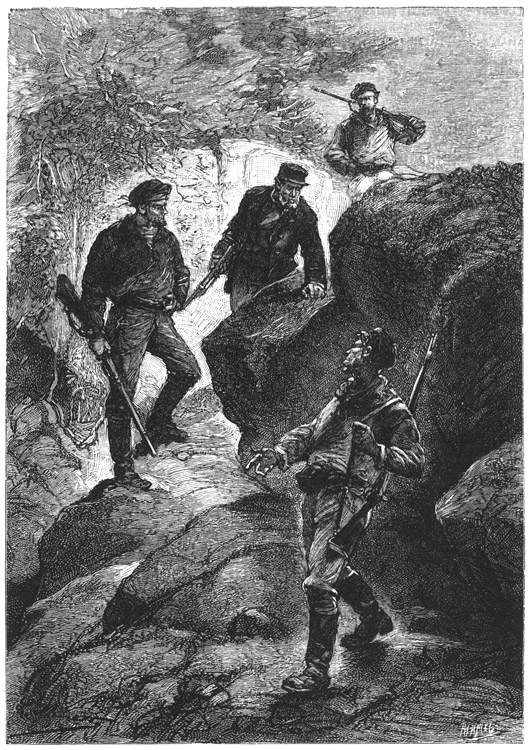Sie stiegen nun die Abhänge des Plateaus hinab.
– Höchstens durch den Fischfang konnten sie ihren Bedürfnissen noch genügen.«
Was nun die Frage anbelangt, ob diese Leute noch auf der Insel wären, so mußte sie wohl verneint werden; übrigens würde man ja die Ueberreste des letzten Ueberlebenden finden ... Man durchsuchte sorgfältig die ganze Höhle, aber ohne Erfolg.
»Das bringt mich zu dem Glauben, bemerkte Zach Fren, daß die Schiffbrüchigen heimgekehrt sind.
– Und auf welche Weise? fragte der Capitän. Konnten sie sich denn aus den Trümmern ihres Schiffes ein seetüchtiges Boot bauen?
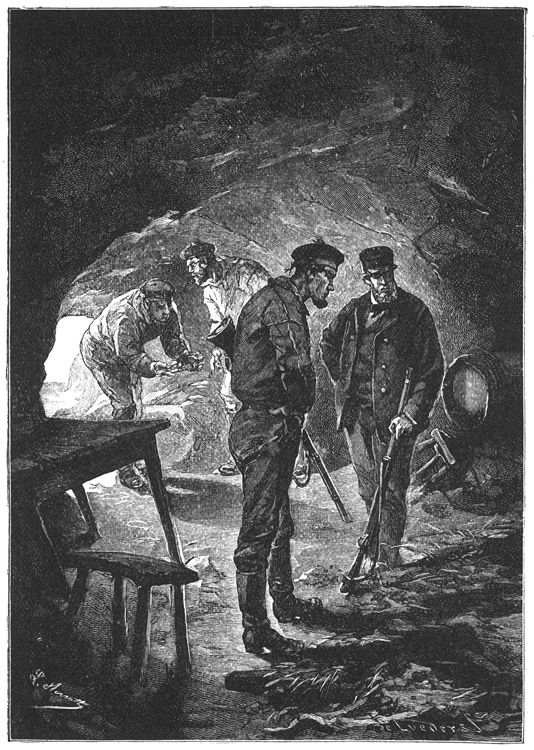»Die Unglücklichen!« rief Zach Fren aus.
– Nein, denn sie hatten nicht einmal genug Holz für einen Kahn. Ich glaube eher, daß ihre Signale von einem vorüberfahrenden Schiffe bemerkt worden sind.
– Das glaube ich nicht.
– Und warum nicht, Herr Capitän?
– Weil, wenn sie ein Schiff aufgenommen haben würde, sich dies in der ganzen Welt verbreitet hätte, vorausgesetzt, daß dieses Schiff nicht mit Mann und Maus untergegangen ist. Ich bezweifle daher, daß diese Schiffbrüchigen auf solche Weise gerettet worden sind.
– Gut, sagte Zach Fren, der sich nicht leicht von seiner Meinung abbringen ließ, wenn es ihnen unmöglich war, eine Schaluppe zu bauen, so kann ihnen doch aus dem Schiffbruche ein Boot übrig geblieben sein und in diesem Falle ...
– Nun, selbst in diesem Falle, erwiderte der Capitän, glaube ich, da man seit Jahren nichts gehört hat, daß in diesen Gegenden Schiffbrüchige aufgenommen worden wären, daß dieses Boot während seiner Fahrt von mehreren hundert Meilen zwischen der Insel Browse und der Küste Australiens zu Grunde gegangen ist.«
Es wäre schwer gewesen, darauf etwas zu erwidern. Zach Fren sah es ein, aber er wollte doch gern wissen, was aus den Schiffbrüchigen geworden sei, und er sagte:
»Herr Capitän, Sie haben doch die Absicht, alle Theile der Insel zu durchsuchen?
– Ja ... um mir keine Gewissensbisse zu machen. Aber zuerst wollen wir diesen Signalmast niederlegen, damit er nicht mehr die vorüberfahrenden Schiffe herbeilockt, da doch Niemand zu retten ist.«
Die Seeleute verließen die Höhle und untersuchten noch einmal den Strand, dann gingen sie dem Vorgebirge zu. Sie mußten ein tiefes Becken, eine Art steinernen Teiches umgehen, in welchem sich das Regenwasser sammelte und dann weiter floß. Plötzlich blieb der Capitän stehen. An dieser Stelle zeigte der Boden vier Erhöhungen, und wahrscheinlich hätten diese keine Aufmerksamkeit erregt, wenn auf denselben nicht kleine hölzerne Kreuze, halb verfault, gestanden hätten. Das waren Gräber. Hier war der Friedhof der Schiffbrüchigen.
»Nun endlich, rief der Capitän aus, werden wir vielleicht etwas erfahren können!«
Es war sicher nicht Mangel an Achtung vor den Todten, als man beschloß, die Gräber zu öffnen, um vielleicht ein Anzeichen ihrer Nationalität zu finden.
Die zwei Matrosen machten sich sofort an die Arbeit. Aber es mußten seit der Bestattung dieser Leichen Jahre verflossen sein, denn die Gräber enthielten nur Knochen. Der Capitän ließ sie wieder zumachen und die Kreuze daraufsetzen.
Wenn die vier Menschen hier begraben wurden, was war denn aus dem geworden, der ihnen den letzten Liebesdienst erwiesen hatte? Und als ihn der Tod erreichte, wo mag er zusammengebrochen sein? Würde man sein Skelett nicht auf einem andern Punkte der Insel finden?
Der Capitän hoffte es nicht.
»Es wird uns nicht gelingen, rief er aus, den Namen des Schiffes kennen zu lernen ... Sollen wir denn nach San-Diego zurückkehren, ohne die Trümmer des ›Franklin‹ gefunden zu haben, ohne zu wissen, was aus John Branican und seinen Gefährten geworden ist?
– Warum könnte das Schiff hier nicht der »Franklin« sein? fragte ein Matrose.
– Und warum könnte er es sein?« erwiderte Zach Fren.
In der That konnte nichts die Annahme rechtfertigen, daß die Schiffstrümmer an dieser Insel dem »Franklin« angehörten, und so schien denn auch die zweite Expedition keinen besseren Erfolg zu haben als die erste.
Der Capitän blickte schweigend auf die Gräber, wo die Armen mit dem Ende des Lebens auch das ihrer Leiden gefunden hatten. Waren das Landsleute, Amerikaner, wie er? ... Waren das Diejenigen, welche sie suchten?
»Nach dem Signalmaste!« sagte er.
Zach Fren und seine Matrosen folgten ihm. Die halbe Meile, welche sie von diesem trennte, wurde in zwanzig Minuten zurückgelegt, denn der Boden war felsig. Als sie neben dem Maste standen, sahen sie, daß er tief in den Felsen eingerammt war. Nur deshalb konnte er so lange stehen. Wie man schon durch das Fernrohr erkannt hatte, rührte dieser Mast – die äußerste Spitze des Bugspriets – von den Trümmern des Schiffes her. Der Fetzen, der an demselben hing, war nur ein Stück Segeltuch, ohne jedes Anzeichen der Nationalität. Auf Befehl des Capitäns schickten sich die beiden Matrosen an, den Mast zu fällen, als Zach Fren plötzlich ausrief: »Herr Capitän ... Da ... da sehen Sie!
– Was denn?
– Diese Glocke!«
An einem noch ziemlich festen Gerüste hing eine Glocke, deren Metall ganz mit Rost überzogen war. So hatten sich die Schiffbrüchigen nicht allein damit begnügt, den Mast zu errichten und die Fahne daran zu befestigen, sondern sie hatten an diesen Ort auch die Schiffsglocke gebracht, da sie hofften, sie könnte von einem vorüberfahrenden Schiffe gehört werden. Doch trug denn diese Glocke nach dem allgemeinen Gebrauche nicht den Namen des Schiffes?
Der Capitän trat auf das Gerüst zu, als er plötzlich erstarrt stehen blieb. Am Fuße desselben lagen die Reste eines Skelettes, oder, um besser zu sagen, ein Haufe von Knochen, an denen nur noch einige Lumpen klebten. So waren also fünf Schiffbrüchige dagewesen. Vier waren gestorben und der fünfte war allein zurückgeblieben ...
Dann hatte er eines Tages die Grotte verlassen, sich zur äußersten Spitze des Vorgebirges geschleppt, die Glocke geläutet, um sich einem Schiffe in der Ferne bemerkbar zu machen ... er fiel aber wohl an diesem Platze nieder, um nicht mehr aufzustehen ... Nachdem der Capitän den Matrosen befohlen hatte, ein Grab für die Gebeine auszuheben, gab er Zach Fren ein Zeichen, ihm zu folgen, um die Glocke zu prüfen ...
Auf dem Metalle las man deutlich folgenden Namen und folgende Ziffern:
Franklin
1875.
Während der »Dolly-Hope« seine zweite Expedition durch die See von Timor unternahm und sie unter den geschilderten Umständen beendigte, brachten Mrs. Branican, ihre Freunde und die Familien der verschwundenen Mannschaft lange Wochen ängstlicher Erwartung zu. Wie viel Hoffnungen wurden dem von dem »Californian« aufgefischten Holzstücke beigelegt, das sicher dem »Franklin« gehörte! Würde es dem Capitän Ellis gelingen, die Trümmer des Schiffes auf einer der Inseln oder einem Punkte der australischen Küste zu finden? Würde er John Branican, Harry Felton und die zwölf eingeschifften Matrosen finden? Würde er endlich einen oder mehrere der Ueberlebenden nach San-Diego zurückbringen?
Seit der Abfahrt des »Dolly-Hope« waren zwei Briefe des Capitäns eingetroffen. In dem ersten theilte er die vergebliche Durchforschung der Gewässer von Timor bis zu der äußersten Grenze des Meeres von Arafoura mit; in dem zweiten, daß die Inseln Melville und Bathurst besucht wurden, ohne die geringste Spur von dem »Franklin« zu finden. Zu gleicher Zeit wurde Mrs. Branican mitgetheilt, daß die Fahrt noch bis zu dem westlichen Theile von Australien durch die verschiedensten umliegenden Inselgruppen fortgesetzt werde. Dann würde, wenn auch die kleinen Sundainseln besucht worden wären, das Schiff wieder heimkehren und damit wäre jede Hoffnung geschwunden.
Seitdem traf monatelang kein weiteres Schreiben ein und nun hoffte man täglich in San-Diego, daß die Ankunft des Schiffes werde signalisirt werden. Unterdessen ging das Jahr 1882 vorüber. Obwohl Mrs. Branican keine weiteren Nachrichten von dem Capitän Ellis erhalten hatte, so beunruhigte sie sich doch nicht über das Schicksal des »Dolly-Hope«, weil die Postverbindungen, besonders im Stillen Ocean, sehr schlecht sind.
Als auch schon der Februar herankam, da fand denn auch Mr. William Andrew diese Expedition sehr lang dauernd. Jeden Tag begaben sich einige Personen auf die Islandspitze, indem sie hofften, das Schiff in Sicht zu bekommen, denn die Seeleute von San-Diego hätten es gleich an seinem Gange erkannt.
Am Morgen, den 27. März, erschien endlich der »Dolly-Hope« auf der Höhe und legte nach einer Stunde im Hafen von San-Diego an. Diese Neuigkeit hatte sich schnell in der Stadt verbreitet und die Leute eilten von allen Seiten dem Hafen zu.
Mrs. Branican, Mr. William Andrew und einige andere Freunde begaben sich sofort an Bord des »Dolly-Hope«. In einigen Augenblicken hatten sie Alle den Erfolg der Expedition erfahren: An der westlichen Grenze der See von Timor, auf der Insel Browse war der »Franklin« gescheitert ... Hier hatten die Schiffbrüchigen einen Zufluchtsort gefunden ... Hier waren sie gestorben ...
»Alle? fragte Mrs. Branican.
– Alle!« erwiderte Ellis.
Die Bestürzung war eine allgemeine, als der »Dolly-Hope« mit halb gehißter Flagge – zum Zeichen der Trauer für die Schiffbrüchigen des »Franklin« – in die Bucht von San-Diego einfuhr.
Die zweite Fahrt hatte ungefähr ein Jahr gedauert und trotz der Anstrengungen der Bemannung hatte sie keinen anderen Erfolg, als daß sie alle Hoffnungen zerstörte. In der kurzen Zeit, welche Mrs. Branican und Mr. William Andrew an Bord des Schiffes verweilten, theilte ihnen Ellis seine Erlebnisse auf der Insel Browse mit. Obgleich Mrs. Branican erfuhr, daß kein Zweifel über den Untergang Johns und seiner Gefährten bestehen konnte, so bewahrte sie doch ihre Fassung. Sie weinte keine Thräne, sie stellte keine Frage. Da die Trümmer des »Franklin« auf dieser Insel gefunden wurden und keiner der Schiffbrüchigen am Leben geblieben war, was hätte sie noch zu fragen gehabt? Man würde ihr die ganze Fahrt später näher beschreiben; nachdem sie dem Capitän Ellis und Zach Fren die Hand gedrückt hatte, setzte sie sich auf das Hintertheil des Schiffes und versank in tiefes Nachdenken; trotz so vieler Beweise wollte sie es nicht glauben, daß sie Witwe sei.
Sie lud für Nachmittag den Capitän Ellis, Zach Fren und Mr. William Andrew in das Prospect-House ein, um einen ganz genauen Bericht über die Fahrt zu erhalten.
Als ein Boot Mrs. Branican wieder ans Land setzte, machte die dicht gedrängte Menge der schwer geprüften Frau ehrerbietigst Platz.
Gegen drei Uhr Nachmittags begaben sich Mr. William Andrew, Zach Fren und Ellis in das Prospect-House, wo sie sofort in den Salon geführt wurden, auf dessen Tisch eine große Karte der Gewässer von Nordaustralien ausgebreitet lag.
»Herr Capitän, sagte Dolly, ich bitte mir über Ihre Fahrt zu berichten.«
Und nun schilderte Ellis die ganze Reise, als wenn er sie aus dem Tagebuche läse, indem er nichts vergaß, nichts wegließ und sich manchmal an Zach Fren wendete, damit dieser seine Worte bestätige. Als er nun auf die Insel Browse zu sprechen kam, da mußte er Alles erzählen, was von Stunde zu Stunde, von Minute zu Minute vorgefallen war; und Mrs. Branican, stets unbeweglich und nur leicht mit den Händen zitternd, sah Alles vor ihren Augen, als wenn sie es selbst erlebt hätte: Die Landung des Capitäns und seiner Leute, die Besteigung des Felsens, die Auffindung der Messerklinge, die Spuren des Feldbaues, die Schiffstrümmer an den Klippen, die Höhle, welche die Ueberlebenden bewohnt hatten, die Entdeckung der vier Gräber, das Skelett des letzten dieser Unglücklichen am Fuße des Signalmastes, die Alarmglocke ... in diesem Augenblicke erhob sich Dolly, als wenn sie diese Glocke in ihrem einsamen Hause gehört hätte ...
Der Capitän Ellis nahm aus seiner Tasche ein Medaillon, das durch Nässe sehr gelitten hatte und reichte es ihr. Eine halb verwischte Photographie Dollys enthielt dies Medaillon, welches sie John bei der Abfahrt des »Franklin« gegeben hatte und das in einem dunklen Winkel der Höhle gefunden wurde. Wenn dieses Medaillon bewies, daß John sich unter den fünf Schiffbrüchigen auf dieser Insel befand, folgte daraus, daß er auch einer jener war, die der Noth und den Entbehrungen zum Opfer gefallen waren?
Die Karte der australischen Meere lag ausgebreitet auf dem Tische, jene Karte, vor welcher Dolly seit sieben Jahren so oft die Erinnerung an John wachgerufen hatte. Sie ersuchte den Capitän, ihr die Insel Browse zu zeigen, jenen kaum sichtbaren Punkt, den die Wirbelstürme des Indischen Meeres umbrausen.
»Wäre man einige Jahre früher gekommen, fügte der Capitän hinzu, so hätte man vielleicht John und seine Gefährten noch lebend angetroffen ...
– Ja, vielleicht, sagte Mr. William Andrew, und dorthin hätte der »Dolly-Hope« auf seiner ersten Reise fahren sollen! ... Aber wer hätte glauben können, daß der »Franklin« auf einer Insel des Indischen Oceans scheitern würde?
– Das konnte man nicht, erwiderte der Capitän, nach der Route, welche er nehmen mußte, und er auch wirklich genommen hat, weil das Schiff im Süden der Insel Celebes gesehen worden ist ... Der Capitän John, der seines Schiffes nicht mehr Herr war, wurde jedenfalls durch die Meerengen der Sundainseln in die See von Timor und bis zur Insel Browse getrieben.
– Ja, und so mag es sich auch verhalten, sagte Zach Fren.
– Herr Capitän, sagte dann Mrs. Branican, indem Sie den ›Franklin‹ in dem malayischen Meere suchten, haben Sie gehandelt, wie Sie handeln mußten ... aber Sie hätten zuerst zur Insel Browse fahren sollen ... Ja! ... dorthin!«
Dann betheiligte sie sich an dem Gespräche und wollte, gestützt auf gewisse Ziffern, noch einen Hoffnungsstrahl bewahren.
»An Bord des ›Franklin‹, sagte sie, befanden sich der Capitän John, der Obersteuermann Harry Felton und zwölf Matrosen. Sie haben auf der Insel die Ueberreste von vier Menschen gefunden und der letzte lag todt am Fuße des Signalmastes, was ist denn aus den anderen neun geworden?
– Das wissen wir nicht, erwiderte der Capitän.
– Das weiß ich, erwiderte Mrs. Branican, aber ich frage Sie, was konnte aus ihnen werden?
– Vielleicht sind sie zugrunde gegangen, als der »Franklin« an die Klippen der Insel geworfen wurde.
– Sie glauben also, daß nur Fünf den Schiffbruch überlebt haben?
– Das ist unglücklicherweise die nächstliegende Erklärung, fügte Mr. William Andrew hinzu.
– Dieser Ansicht bin ich nicht, erwiderte Mrs. Branican. Warum hätte nicht die ganze Bemannung die Insel gesund erreichen können? ... Warum hätte es neun von ihnen nicht gelingen können, sie zu verlassen?
– Und auf welche Weise, Mrs. Branican? erwiderte lebhaft der Capitän.
– Indem sie sich auf einer Schaluppe einschifften, die sie sich aus den Trümmern des Schiffes erbauten ...
– Mrs. Branican, versetzte Ellis, Zach Fren und ich können Ihnen sagen, daß das unmöglich gewesen wäre, da sich die Trümmer des Schiffes in einem elenden Zustande befanden.
– Aber ... auf eines ihrer Boote.
– Die Boote des »Franklin« konnten, wenn sie nicht zerschmettert wurden, sich nicht bis nach den Küsten von Australien oder den Sundainseln wagen.
– Und wenn neun Schiffbrüchige die Insel verlassen konnten, bemerkte Mr. William Andrew, warum blieben die fünf anderen dort zurück?
– Dann will ich nur noch erwähnen, hub Ellis von neuem an, daß, wenn sie sich wirklich auf einem Boote aufs Meer gewagt haben, sie entweder untergegangen oder den Eingeborenen Australiens zum Opfer gefallen sind, weil sie nie zurückkehrten.«
Mrs. Branican wandte sich an den Hochbootsmann:
»Zach Fren, sagte sie, sind Sie ganz derselben Meinung wie der Capitän Ellis?
– Ich denke, ... erwiderte Zach Fren, ich denke, daß, wenn die Dinge so sein konnten, ... sie auch möglicherweise hätten anders sein können.
– Auch ich glaube, erwiderte Mrs. Branican, daß wir nicht die absolute Gewißheit über das Schicksal der neun Menschen haben, deren Ueberreste nicht auf der Insel gefunden worden sind. Was Sie und Ihre Mannschaft anbelangt, Herr Capitän, so haben Sie Alles gethan, was ein Mensch zu thun im Stande ist.
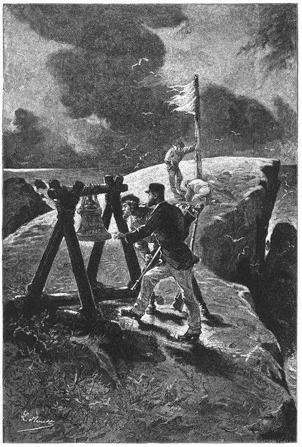... las man deutlich folgenden Namen und folgende Jahreszahl: Franklin 1875.
– Ich hätte mir nur besseren Erfolg gewünscht, Mrs. Branican!
– Wir wollen uns zurückziehen, liebe Dolly, sagte Mr. William Andrew, da er glaubte, daß die Sitzung schon zu lange gedauert habe.
– Ja, lieber Freund, erwiderte Mrs. Branican, ich fühle das Bedürfnis; allein zu sein ... Aber so oft Capitän Ellis mich besuchen wird, werde ich glücklich sein, wenn ich mit ihm von John und seinen Gefährten werde sprechen können.
– Ich stehe stets zu Ihrer Verfügung, antwortete Ellis.
– Und auch Sie, Zach Fren, fügte Mrs. Branican hinzu, vergessen Sie nicht, daß mein Haus das Ihrige ist.
– Das meinige? ... fragte der Hochbootsmann. Aber was soll aus »Dolly-Hope« werden?
– Der »Dolly-Hope«? sagte Mrs. Branican, als ob diese Frage ihr ganz unnöthig erschien.
– Sie werden doch nicht die Absicht haben, bemerkte Mr. William Andrew, ihn zu verkaufen, wenn sich eine Gelegenheit fände ...
– Ihn zu verkaufen? ... versetzte Mrs. Branican lebhaft, ihn zu verkaufen? ... Nein, Herr Andrew, niemals!«
Mrs. Branican und Zach Fren sahen sich an und sie hatten sich verstanden.
Von jenem Tage an lebte Dolly sehr zurückgezogen im Prospect-House, wohin sie alle Dinge vom Schiffe bringen ließ, die man auf der Insel Browse gefunden hatte.
Der »Dolly-Hope« wurde nun abgetakelt und der Aufsicht Zach Fren's unterstellt. Die Bemannung wurde reichlich belohnt entlassen. Aber wenn jemals das Schiff wieder in See stechen sollte, so konnte man auf sie rechnen.
So oft Zach Fren in das Prospect-House kam, sprach Mrs. Branican über die Einzelheiten der letzten Fahrt mit ihm. Eines Tages sagte sie zu ihm:
»Zach Fren, weder John noch seine acht Gefährten sind todt!
– Die acht? ... Das weiß ich nicht. Aber das weiß ich, daß Capitän John lebt.
– Ja ... Er lebt! Aber wo ihn suchen, Zach Fren? ... Wo ist mein armer John?
– Er ist dort, wo er ist, und sicher irgendwo ... Und wenn wir nicht zu ihm fahren ... so werden wir doch von ihm Nachricht erhalten! ... Ich sage nicht in einem frankirten Briefe ... aber wir werden doch von ihm Nachricht erhalten!
– John lebt, Zach Fren!«
So hatten denn Mrs. Branican und Zach Fren immer noch Hoffnungen, die Mr. William Andrew, der Capitän Ellis und Jeder in San-Diego schon verloren hatten.
Das Jahr 1883 brachte nichts, was die Angelegenheit hätte in Fluß bringen können. Der Capitän Ellis war für sein Haus Andrew wieder in die See gestochen. Mr. William Andrew und Zach Fren waren die einzigen Besucher im Prospect-House. Was Mrs. Branican anbelangt, so widmete sie sich ganz dem Waisenhause Wat-House. Außerdem hörte sie nicht auf, die Armen zu unterstützen. Nicht Einer klopfte vergebens an ihre Thüre, und mit den bedeutenden Einkünften aus ihrem Vermögen, das Mr. William Andrew verwaltete, stand sie stets den armen Matrosenfamilien zur Seite, deren Angehörige sich auf dem »Franklin« befunden hatten. Hoffte sie nicht, daß einige von ihnen einmal zurückkehren würden?
Das bildete immer den Gegenstand des Gespräches mit Zach Fren. Welches Schicksal hatten die Schiffbrüchigen gehabt, von denen man keine Spur auf der Insel Browse gefunden hatte? ... Warum hätten sie die Insel nicht auf einem Boote verlassen können, das sie sich gebaut hatten? ... Freilich waren jetzt schon so viele Jahre verflossen, daß es thöricht erschien, noch weiter zu hoffen.
Dolly sah im Traume stets John ... Er hatte sich aus dem Schiffbruche gerettet ... Das Schiff, das ihn heimbringen sollte, war in Sicht ... John war nach San-Diego zurückgekehrt ... Diese Träume faßte Dolly immer wieder als ein Zeichen auf, daß Alles so kommen werde.
Es verflossen wieder einige Jahre und 1860 waren es schon vierzehn Jahre, daß der »Franklin« San-Diego verlassen hatte. Mrs. Branican war damals siebenunddreißig Jahre alt. Wenn auch ihr Haar schon zu bleichen begann und ihr Teint blässer wurde, so hatte doch ihr Auge das frühere Feuer bewahrt. Es schien, als habe sie nichts von jener Energie verloren, die ihr stets eigenthümlich war und die sie bei einer passenden Gelegenheit wieder beweisen sollte.
In diesen langen Jahren, die kein Licht über die geheimnißvolle Katastrophe brachten, hatte Mrs. Branican nicht aufgehört, Nachforschungen nach Len und Jane Burker anzustellen. Da gar kein Brief nach San-Diego kam, so mußte Len Burker Amerika ganz verlassen haben und wohl unter falschem Namen in einem fernen Lande wohnen. Das war ein großer Schmerz für Mrs. Branican, denn wie glücklich wäre sie in ihrer Einsamkeit gewesen, wenn sie Jane bei sich gehabt hätte! ... Jane wäre eine hingebende Gefährtin gewesen ... Aber sie war weit weg und für Dolly ebenso verschollen wie John.
Die Hälfte des Jahres 1890 war schon verflossen, als eine Zeitung in San-Diego in ihrer Nummer vom 26. Juli eine Nachricht brachte, die eine ungeheuere Sensation auf beiden Continenten hervorrief. Diese Nachricht wurde aus dem »Morning Herald«, einer Zeitung in Sydney, abgedruckt und lautete ungefähr folgendermaßen:
»Man erinnert sich, daß die vor sieben Jahren angestellten Nachforschungen des »Dolly-Hope« nach dem »Franklin« aufgegeben wurden. Man mußte annehmen, daß alle Schiffbrüchigen umgekommen seien, entweder bevor sie die Insel Browse erreichten, oder, nachdem sie dieselbe verlassen hatten.
Jetzt ist die Frage in ein neues Stadium getreten. Einer der Officiere des »Franklin« ist soeben in Sydney angekommen, nämlich Harry Felton, der Steuermann des Capitäns John Branican. Er wurde an den Ufern des Parru, einem Nebenflusse des Darling, nahe der Grenze des südlichen Neu-Südwales und Queensland gefunden und nach Sydney gebracht. Aber er ist so schwach, daß er keine Auskunft geben kann und mau befürchtet täglich seinen Tod. Es wird gebeten, dies denen, die sich für die Katastrophe des »Franklin« interessiren, mitzutheilen.«
Mr. William Andrew erhielt diese Nachricht auf telegraphischem Wege und eilte sofort in das Prospect-House, wo sich gerade Zach Fren befand.
Als Mrs. Branican dies hörte, antwortete sie nur:
»Ich fahre nach Sydney.
– Nach Sydney? ... fragte Mr. William Andrew.
– Ja, nach Sydney! Wollen Sie mich begleiten, Zach Fren?
– Ich gehe überallhin mit, Mrs. Branican.
– Ist der »Dolly-Hope« segelfertig?
– Nein, erwiderte Mr. William Andrew, und man brauchte drei Wochen.
– Ich muß in weniger als drei Wochen in Sydney sein! Fährt kein Postdampfer nach Australien?
– Der »Oregon« verläßt noch heute Nacht San-Francisco.
– Zach Fren und ich werden heute Abend in San-Francisco sein.
– Liebe Dolly, sagte Mr. William Andrew, möge Gott Sie mit Ihrem John vereinigen!
– Er wird uns vereinigen!« erwiderte Mrs. Branican.
Um elf Uhr Abends fuhren Mrs. Branican und Zach Fren mit einem Extrazuge nach der Hauptstadt Californiens.
Um ein Uhr Nachts verließ der »Oregon« San-Francisco in der Richtung nach Sydney.
Der Dampfer »Oregon« fuhr mit der Schnelligkeit von siebzehn Knoten in der Stunde und wurde durch prachtvolles Wetter begünstigt – eine nicht ungewöhnliche Erscheinung in diesem Theile des Stillen Oceans, besonders um diese Jahreszeit. Das tüchtige Schiff schien gleichsam die Ungeduld der Mrs. Branican und Zach Fren's zu theilen. Es ist selbstverständlich, daß die Passagiere, die Officiere und die Mannschaft dieser energischen und so tapferen Frau die größten Sympathien entgegenbrachten.
Als sich der »Oregon« in 33 Grad 51 Minuten südlicher Breite und 148 Grad 40 Minuten östlicher Länge befand, signalisirten die Wachen Land. Am 15. August fuhr er nach einer Fahrt von neunzehn Tagen, auf der siebentausend Meilen zurückgelegt wurden, in die Bai von Port-Jackson, dessen Felsen gleichsam ein offenes Thor gegen das Meer zu bilden. Dann glitt das Schiff an den kleinen Golfen, die mit Villen und Häusern besäet sind, vorüber und kam nach Darling-Harbour, dem eigentlichen Hafen von Sydney, an dessen Quai es anlegte.
Als erster stieg ein Zollbeamter an Bord des Schiffes.
»Lebt Harry Felton? fragte Mrs. Branican.
– Er lebt,« erwiderte dieser Beamte, der ahnte, daß er Mrs. Branican vor sich hatte.
Wußte nicht ganz Sydney, daß sich diese muthige Frau auf dem »Oregon« eingeschifft hatte, und erwartete sie nicht die ganze Stadt mit der größten Ungeduld?
»Wo ist Harry Felton?
– Im Seehospiz.«
Mrs. Branican und Zach Fren schifften sich sogleich aus und die Menge begrüßte sie mit jener Ehrerbietung, die man ihr in San-Diego entgegenbrachte und überall auf der Erde entgegengebracht hätte.
Ein Wagen brachte sie zu dem Seehospiz, wo sie von dem diensthabenden Arzte empfangen wurden.
»Hat Harry Felton sprechen können? ... Ist er bei Bewußtsein? ... fragte Mrs. Branican.
– Nein, Mistreß, erwiderte der Arzt. Der Unglückliche ist noch nicht zu sich gekommen ... Er kann wahrscheinlich nicht sprechen ... Sein Leben kann stündlich erlöschen ...
– Harry Felton darf nicht sterben! sagte Mrs. Branican. Er allein weiß, ob Capitän John, ob einige seiner Gefährten noch leben! ... Er allein kann sagen, wo sie sind! ... Ich bin wegen Harry Felton's hergekommen ... um ihn zu hören ...
– Mistreß, ich führe Sie sofort zu ihm,« erwiderte der Arzt.
In einigen Augenblicken befanden sie sich in dem Zimmer Harry Felton's.
Vor sechs Monaten durchzogen Reisende die Provinz Ulakarra in Neu-Südwales, an der südlichen Grenze von Queensland, und bemerkten, als sie an das linke Ufer des Parru kamen, einen Mann an einem Baume liegen. Mit einigen Lumpen bedeckt, von Entbehrungen erschöpft und durch Anstrengungen gebrochen, konnte dieser Mensch nicht zum Bewußtsein gebracht werden; wenn sich nicht das Officierspatent in seiner Tasche vorgefunden hätte, so würde man nicht gewußt haben, wer der Unglückliche war.
Es war Harry Felton, der zweite Officier des »Franklin«.
Woher kam er? Aus welchem fernen, unbekannten Theile Australiens? Seit wann irrte er in diesen furchtbaren Einöden umher? Hatten ihn die Eingeborenen gefangen genommen und konnte er nicht entfliehen? Wo hatte er seine Gefährten zurückgelassen? Er wird doch nicht der einzig Ueberlebende der seit vierzehn Jahren Verschollenen sein? ... Alle diese Fragen harrten jetzt noch der Lösung.
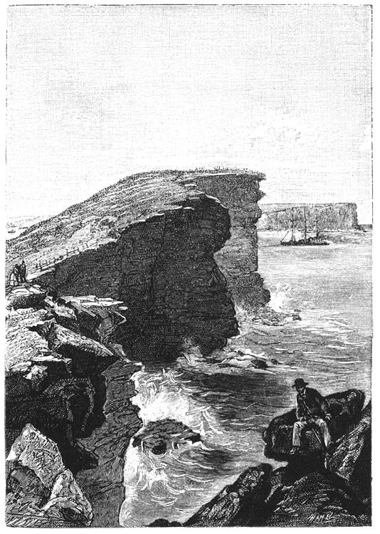... fuhr er in die Bai von Fort Jackson.
Es erregte ein allgemeines Interesse, zu erfahren, woher Harry Felton käme, sein Leben seit dem Schiffbruche des »Franklin« kennen zu lernen und endlich eine Beschreibung der Katastrophe zu vernehmen.
Harry Felton wurde zur nächsten Bahnstation Oxley gebracht und von hier nach Sydney geführt. Der »Morning Herald«, der vor allen anderen Zeitungen von seiner Ankunft Kenntniß erhielt, brachte einen Artikel über ihn, den wir schon oben wiedergegeben haben.
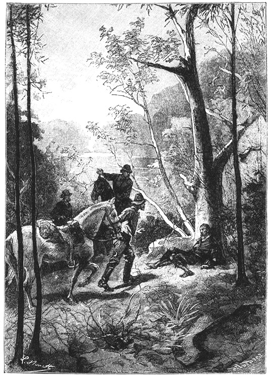... und bemerkten einen Mann an einem Baume liegen.
Jetzt stand Mrs. Branican neben Harry Felton, den sie freilich nicht erkannt haben würde. Er war damals sechsundvierzig Jahre alt und man hätte ihn für sechzig gehalten. Er war der einzige Mensch – fast ein Leichnam – der etwas über Capitän John und seine Gefährten sagen konnte.
Die sorgfältigste Pflege hatte bis zu diesem Tage den Zustand Harry Felton's nicht zu bessern vermocht, woran sicher die furchtbaren Entbehrungen Schuld waren, die er wochenlang – wer weiß? – vielleicht jahrelang durch ganz Centralaustralien ertragen hatte. Der Lebensfunke, der in ihm noch glimmte, konnte jeden Augenblick erlöschen.
So lange er in dem Seehospize war, hatte er kaum die Augen geöffnet, ohne daß man wußte, ob er sich von dem Rechenschaft gebe, was um ihn vorging. Man labte ihn ein wenig, er schien es nicht zu bemerken. Es war daher zu befürchten, daß die furchtbaren Leiden seine geistigen Kräfte so zerstört haben möchten, daß er sich an nichts mehr erinnerte; und doch hing von ihm die Rettung der Anderen ab, wenn sie noch lebten.
Mrs. Branican setzte sich an das Bett und achtete auf jede Bewegung der Augenlider, auf jede Bewegung der Lippen, auf das geringste Lebenszeichen. Zach Fren stand neben ihr und suchte irgend einen Lichtstrahl seines Geistes zu erhaschen, wie der Schiffer in dem dichten Nebel den Leuchtthurm sucht.
Aber dieses Licht leuchtete weder an diesem Tage noch an den folgenden. Die Augenlider des Kranken blieben beharrlich geschlossen, und wenn Dolly sie hob, so sah sie nur einen starren Blick.
Aber weder sie noch Zach Fren verzweifelten.
»Wenn Harry Felton die Frau seines Capitäns erkennt, sagte Zach Fren, so wird er sich auch verständlich machen können, ohne zu sprechen.«
Ja, es war wichtig, daß er Mrs. Branican erkenne, und möglicherweise auch auf seinen Zustand von heilsamen Folgen. Man würde daher mit der größten Vorsicht vorgehen, während er sich an die Anwesenheit Dollys gewöhnen würde ...
Er würde das durch Zeichen angeben können, wenn ihm auch die Zunge versagte.
Obgleich man Mrs. Branican rieth, sich nicht stets in diesem Krankenzimmer aufzuhalten, so wollte sie sich doch keine Stunde der Ruhe, keinen Augenblick in der frischen Luft gönnen.
»Harry Felton kann sterben, und wenn das letzte Wort sich seinen Lippen entringt, so muß ich dabei sein, um es hören! ... Ich weiche nicht von ihm!«
Gegen Abend schien sich an Harry Felton eine kleine Besserung zu zeigen. Er schlug manchmal die Augen auf, aber sein Blick fiel nicht auf Mrs. Branican. Und doch beugte sie sich über ihn und nannte seinen Namen, nannte John ... nannte San-Diego! ... Würden all diese Namen ihn nicht an seine Gefährten erinnern? ... Ein Wort ... nur ein einziges Wort sollte er sprechen: »Leben sie? ... Sind sie am Leben?«
Alles, was Harry Felton leiden mußte, bevor er hierher kam, litt vielleicht auch John, sagte sich Dolly ... Dann dachte sie, daß John unterwegs zusammengebrochen sei ... Aber nein, John hatte Harry Felton nicht folgen können ... Er war dort unten geblieben ... mit den Anderen ... Wo? ... Bei einem Australierstamme? ... Wie hieß dieser Stamm? ... Nur Harry Felton konnte diese Fragen beantworten und es schien, daß sein Gedächtniß geschwunden sei, seine Lippen verlernt hätten zu sprechen.
In der Nacht nahm die Schwäche Harry Felton's zu. Seine Augen öffneten sich nicht mehr, seine Hände wurden kalt, wie wenn das wenige Leben, das noch in ihm wohnte, sich zum Herzen zöge. Sollte er denn sterben, ohne ein Wort gesprochen zu haben? ... Dolly fiel es ein, daß auch sie die Erinnerung und den Geist mehrere Jahre lang verloren hatte! ... Auch von ihr konnte man damals nichts erfahren, wie man jetzt von diesem Unglücklichen nichts erfahren konnte ... nichts, das er doch nur allein wußte!
Am folgenden Tage wendete der Arzt, den der Zustand des Bewußtlosen sehr beunruhigte, die stärksten Mittel an, die aber keine Wirkung hervorbrachten. Es konnte mit ihm nicht, mehr lange dauern ...
Dann zerfielen die ganzen Hoffnungen der Mrs. Branican in ein Nichts! ... An Stelle des Lichtes, das die Rückkehr Harry Felton's in diese Katastrophe zu bringen versprach, trat wieder die Dunkelheit! ... Wann würde es gelingen, dieselbe zu erhellen? ... Dann wäre Alles, Alles verloren!
Dolly ließ die berühmtesten Aerzte der Stadt an das Krankenbett Harry Felton's rufen, aber sie erklärten sich nach sorgfältigster Prüfung seines Zustandes für machtlos.
»Sie können für diesen Unglücklichen gar nichts thun? fragte Mrs. Branican.
– Nein, geehrte Frau, versetzte einer der Aerzte.
– Nicht einmal eine Minute ihn zum Bewußtsein zu bringen ... eine Minute der Erinnerung?«
Für diese eine Minute hätte Mrs. Branican ihr ganzes Vermögen hingegeben. Aber was dem Menschen nicht mehr möglich ist, das kann Gott. An ihn muß sich der Mensch wenden, wenn alle menschliche Hilfe vergebens ist.
Sobald die Aerzte das Zimmer verlassen hatten, knieten Dolly und Zach Fren nieder und beteten an dem Bette des Sterbenden.
Plötzlich rief Zach Fren, der sich dem Kranken genähert hatte, um sich zu versichern, ob sich noch ein leiser Athem den Lippen Harry Felton's entringe:
»Mistreß! ... Mistreß!«
Dolly, welche glaubte, er habe nur noch einen Leichnam gefunden, erhob sich:
»Todt? sagte sie leise.
– Nein ... Mistreß ... Nein! ... Da! ... Seine Augen sind offen! ... Er sieht! ...«
Und wirklich erglänzten unter den erhobenen Lidern die Augen Felton's in ungewöhnlichem Lichte; sein Gesicht war leicht geröthet, seine Hände bewegten sich. Er schien aus jenem Starrkrampfe zu erwachen, worin er so lange gelegen hatte. Dann fiel sein Blick auf Mrs. Branican und ein leises Lächeln umspielte seine Lippen.
»Er hat mich erkannt! rief Dolly aus.
– Ja! ... erwiderte Zach Fren ... Die Frau seines Capitäns steht neben ihm. Er weiß es ... Er wird sprechen! ...
– Und wenn er es nicht kann, so füge es Gott, daß er sich wenigstens verständlich machen kann!«
Sie nahm Harry Felton bei der Hand – sie fühlte einen leisen Druck der ihrigen ...
»John? ... John?« ... fragte sie.
Eine Bewegung der Augen Harry Felton's zeigte, daß er sie gehört und verstanden hatte.
»Lebt er? fragte sie.
– Ja!«
So leise dieses Ja auch gesprochen wurde, sie hatte es doch gehört!
Mrs. Branican ließ sofort den Arzt holen. Dieser aber erklärte trotz des veränderten Zustandes, der sich in der geistigen Kraft des Kranken bemerkbar machte, daß dies nur ein letztes Aufflackern des Lebens sei, daß der Tod herannahe. Der Sterbende schien nur Mrs. Branican zu sehen; weder Zach Fren noch dem Arzte schenkte er irgend welche Aufmerksamkeit. Alles, was von seiner geistigen Kraft noch übrig geblieben war, concentrirte sich auf die Frau seines Capitäns, auf Dolly Branican.
»Harry Felton, fragte sie, wenn John lebt, wo haben Sie ihn zurückgelassen? ... Wo ist er? ...«
Harry Felton antwortete nicht.
»Er kann nicht sprechen, sagte der Arzt, aber vielleicht können wir durch Zeichen von ihm eine Antwort erhalten.
– Schon seinem Blicke werde ich die Antwort ablesen können, erwiderte Mrs. Branican.
– Warten Sie, sagte Zach Fren. Die Fragen müssen ihm auf eine bestimmte Weise vorgelegt werden, wie wir Seeleute es thun. Lassen Sie mich nur machen.
Mrs. Branican möge Felton bei der Hand nehmen, und ihm in die Augen sehen. Ich werde ihn fragen ... und er wird mit dem Blicke Ja oder Nein sagen. Das genügt uns schon! ...«
Mrs. Branican beugte sich über Harry Felton und nahm ihn bei der Hand. Wenn Zach Fren ihn zuerst gefragt hätte, wo sich der Capitän befinde, so wäre es unmöglich gewesen, eine genügende Antwort zu erhalten, weil sie Harry Felton gezwungen hätte, den Namen eines Landes, einer Provinz oder eines Fleckens auszusprechen, was ihm nicht möglich gewesen wäre. Besser war es, allmählich die ganze Geschichte des »Franklin« abzufragen, und zwar von dem Tage an, wo er zum letztenmale gesehen wurde, bis zu dem, wo Harry Felton sich von John Branican trennte.
»Felton, sagte Zach Fren mit klarer Stimme, neben Ihnen steht Mrs. Branican, die Frau John Branican's, des Commandanten des ›Franklin‹. Haben Sie sie erkannt?«
Die Lippen Harry Felton's bewegten sich nicht, aber eine leichte Bewegung seiner Augenlider, ein schwacher Druck seiner Hand gaben eine bejahende Antwort.
»Der ›Franklin‹, hub Zach Fren an, ist nirgends signalisirt worden, seitdem er im Süden der Insel Celebes gesehen worden ist ... Sie verstehen mich? ... Sie hören mich, nicht wahr, Felton?«
Der Blick gab wieder bejahende Antwort.
»Nun hören Sie mir zu! Je nachdem Sie die Augen öffnen oder schließen, werde ich wissen, ob das, was ich sage richtig ist oder nicht.«
Es war nicht zu bezweifeln, daß Harry Felton die Worte Zach Fren's verstanden hatte.
»Als der Capitän John das Javanische Meer verließ, nahm er den Weg in die See von Timor?
– Ja.
– Durch die Sunda-Meerenge?
– Ja.
– Freiwillig?«
Diese Frage wurde verneint, worüber man sich nicht täuschen konnte.
»Nein! sagte Zach Fren. So hatte auch er und Capitän Ellis es immer geglaubt.
– War dies während eines Sturmes? fragte Zach Fren.
– Ja.
– Ein Wirbelsturm hat Euch wahrscheinlich im Javanischen Meere überrascht?
– Ja.
– Und der hat Euch in die Sunda-Meerenge getrieben?
– Ja.
– Vielleicht war der »Franklin« arg zugerichtet, das Takelwerk zerstört, das Steuer gebrochen?
– Ja.«
Mrs. Branican sah Harry Felton fest an, ohne ein Wort zu sagen.
»Capitän John wußte nicht, wo er war? fuhr Zach Fren fort.
– Nein.
– Und nachdem er mit der Zeit bis in die See von Timor getrieben worden war, scheiterte er an den Riffen der Insel Browse?«
Eine leichte Bewegung zeugte von der Ueberraschung Harry Felton's, der gewiß den Namen der Insel nicht kannte, auf welcher der »Franklin« gescheitert war. Zach Fren fuhr fort:
»Als Sie San-Diego verließen, befanden sich an Bord der Capitän John, Harry Felton, zwölf Matrosen, im Ganzen vierzehn ... Wart Ihr noch vierzehn nach dem Schiffbruche des ›Franklin‹?
– Nein.
– Einige sind wohl zu Grunde gegangen, als das Schiff an den Felsen zerschellte?
– Ja.
– Einer? ... Zwei?«
Ein bejahendes Zeichen bestätigte die letzte Zahl.
In diesem Augenblicke wurde für einige Zeit auf den Rath des Arztes hin mit dem Fragen eingehalten, da dasselbe den Kranken sichtlich ermüdete.
Dann stellte Zach Fren Fragen, wie John, Harry Felton und ihre zehn Matrosen ihr Leben gefristet hätten. Ohne die Lebensmittel des Schiffes, die aus Conserven und Mehl bestanden, und an den Strand gebracht worden waren, ohne den Fischfang, der eines ihrer hauptsächlichsten Erhaltungsmittel bildete, wären sie Hungers gestorben.
Ihre Fahne, die an dem Signalmaste hing, wurde nie bemerkt, und doch konnten sie nur von einem vorüberfahrenden Schiffe gerettet werden. Als Zach Fren fragte:
»Wie lange habt Ihr auf der Insel Browse gelebt? ... Ein Jahr ... zwei Jahre ... drei Jahre ... vier Jahre ... sechs Jahre?«
Harry Felton beantwortete die letzte Ziffer.
So hatten also Capitän John und seine Gefährten von 1875 bis 1881 auf dieser Insel gelebt.
Aber wie gelang es ihnen, sie zu verlassen? Das war einer der interessantesten Punkte, die Zach Fren fragte:
»Habt Ihr ein Boot aus den Trümmern des Schiffes bauen können?
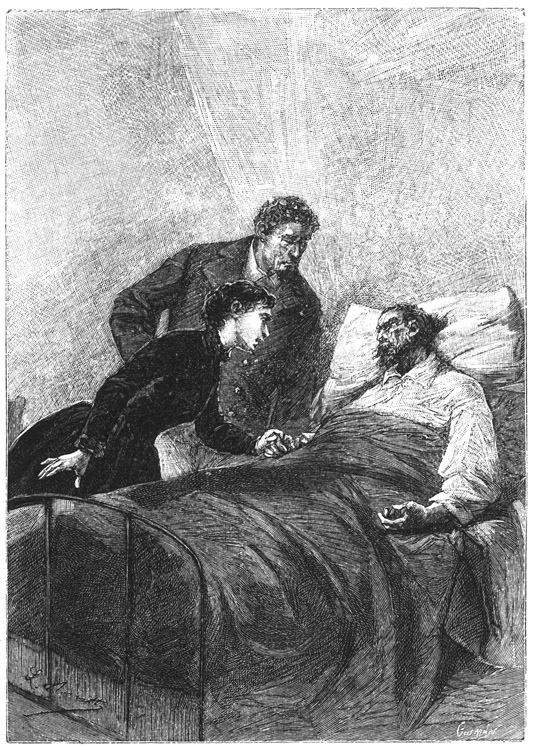»Lebt er?« fragte sie.
Dieser Ansicht waren auch der Capitän und Zach Fren, als sie die Insel Browse durchsuchten.
Zach Fren war jetzt in Verlegenheit, wie er erfragen sollte, auf welche Weise es den Schiffbrüchigen gelungen war, die Insel zu verlassen.
»Sie sagen, fragte er, dass kein Schiff die Signale bemerkt hat?
– Nein.
– So ist vielleicht ein malayisches Boot oder eines der Eingeborenen von Australien gelandet?
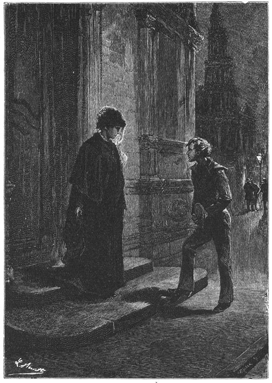... wurde sie von einem Burschen angesprochen.
– Nein.
– So war es also eine Schaluppe – die Schaluppe eines Schiffes – die an die Insel geworfen wurde?
– Ja.
– Eine verschlagene Schaluppe?
– Ja.«
Dieser Punkt war jetzt klar und Zach Fren konnte die natürlichen Folgen daraus ziehen.
»Diese Schaluppe habt Ihr ausgebessert?
– Ja.
– Und der Capitän John hat sie benutzt, um an die nächste Küste zu gelangen?
– Ja.«
Aber warum hatten sich nicht Alle eingeschifft? Das war sehr wichtig.
»Ohne Zweifel war die Schaluppe zu klein, um zwölf Personen zu fassen?
– Ja.
– Und so sind sieben fortgefahren, Capitän John, Sie und fünf Matrosen?
– Ja.«
Man konnte deutlich in dem Blicke des Sterbenden lesen, daß es vielleicht noch möglich wäre, die Zurückgelassenen zu retten. Aber auf ein Zeichen Dollys stand Zach Fren davon ab, ihm zu sagen, daß die fünf Matrosen zugrunde gegangen wären. Nun wurde Harry Felton wieder einige Minuten Ruhe gelassen, während der er mit geschlossenen Augen dalag, die Hand der Mrs. Branican fortwährend drückend.
Dolly war jetzt mit ihren Gedanken auf der Insel Browse und sah Alles vor ihren Augen ... Sie erblickte John, der Alles zur Rettung seiner Gefährten versuchte ... Sie hörte ihn, sie sprach zu ihm, sie ermuthigte ihn, sie unternahm die Ueberfahrt mit ihm ... Doch wo war diese Schaluppe gelandet?
Harry Felton schlug die Augen wieder auf und Zach Fren begann von neuem:
»So hatten Capitän John, Sie und fünf Matrosen die Insel Browse also verlassen?
– Ja.
– Und das Boot fuhr gegen Osten, um das nächste Land zu erreichen?
– Ja.
– War das Australien?
– Ja.
– Wurde es durch einen Sturm dahin verschlagen?
– Nein.
– Sie konnten in einer Bucht der Küste Australiens landen?
– Ja.
– Ohne Zweifel in der Nähe des Cap Lévêque?
– Ja.
– Vielleicht im York-Sund?
– Ja.
– Fielen Sie beim Landen Eingebornen in die Hände?
– Ja.
– Und sie schleppten Euch fort?
– Ja.
– Alle?
– Nein.
– Einige wurden bei der Landung von den Eingebornen erschlagen?
– Ja.
– Einer ... zwei ... drei ... vier?
– Ja.
– Ihr waret also nur drei, als die Australier Euch in das Innere des Landes schleppten?
– Ja.
– Der Capitän, Sie und einer der Matrosen?
– Ja.
– Ist dieser Matrose noch bei Capitän John?
– Nein.
– Ist er etwa gestorben?
– Ja.
– Schon längst?
– Ja.«
So waren also John und Harry Felton die einzigen Ueberlebenden des »Franklin«, und von diesen hatte Einer auch nur noch wenige Stunden zu leben.
Es war nicht leicht, von Harry Felton Auskunft über den Capitän John zu erhalten, die man doch möglichst genau erlangen mußte. Mehr als einmal mußte Zach Fren seine Fragen unterbrechen; wenn er sie wieder aufnahm, ließ ihn Mrs. Branican Frage um Frage stellen, um Alles zu erfahren, was sich seit den neun Jahren, d. h. von dem Tage an zugetragen hatte, wo der Capitän John und Harry Felton von den Eingebornen der Küste gefangen genommen wurden. Man erfuhr also, daß dies Nomaden waren ... Die Gefangenen mußten sie auf ihren steten Zügen durch Dampierland begleiten, indem sie ein elendes Dasein fristeten ... Warum hatten sie dieselben geschont? ... Wollte man für sie vielleicht von den englischen Behörden ein hohes Lösegeld erpressen? Ja, und dies schien aus den Antworten Harry Felton's hervorzugehen. Es handelte sich also nur um das Lösegeld, wenn es ihnen gelang, bis zu diesen Eingebornen vorzudringen. Einige andere Fragen ergaben, daß Capitän John und Harry Felton so gut bewacht wurden, daß sie im Verlaufe von neun Jahren keine Gelegenheit zur Flucht finden konnten.
Endlich bot sich ihnen eine günstige Gelegenheit. Die Gefangenen kamen über einen Ort überein, wo sie sich treffen wollten, um gemeinschaftlich zu fliehen; aber aus irgend einem, Harry Felton unbekannten Grunde war John verhindert, an dem festgesetzten Ort zu erscheinen. Harry Felton wartete mehrere Tage, und da er nicht allein fliehen wollte, so suchte er den Stamm wieder auf. Dieser hatte aber seinen Platz verlassen und war weitergezogen ... Er war entschlossen, seinen Capitän zu befreien, wenn es ihm gelänge, eines der Dörfer im Innern zu erreichen; er irrte herum, verbarg sich, um nicht in die Hände der Eingebornen zu fallen, litt Hunger und Durst und furchtbare Strapazen ... Durch sechs Monate war er so herumgeirrt, bis er schließlich ohnmächtig an dem Ufer des Parru niedersank. Hier wurde er, wie wir wissen, gefunden, auf Grund seiner Papiere erkannt und nach Sydney gebracht, wo er auf so wunderbare Weise so lange lebte, bis er Alles sagen konnte, was man so viele Jahre vergebens zu erfahren gesucht hatte. So war denn der Capitän John am Leben, aber der Gefangene eines Nomadenstammes, welcher die Einöden des Dampier durchzog.
Als nun Zach Fren verschiedene Stämme nannte, welche gewöhnlich in diesen Gegenden lebten, machte der Sterbende bei dem Namen Indas ein bejahendes Zeichen.
Zach Fren gelang es sogar zu erfahren, daß sich dieser Stamm während des Winters gewöhnlich an den Ufern des Fitz-Roy-River aufhalte, einem Zuflusse des Golfes von Lévêque, im Nordwesten von Australien.
»Dort müssen wir John suchen, sagte Mrs. Branican, dort werden wir ihn finden.«
Harry Felton verstand sie, denn sein Blick belebte sich bei dem Gedanken, daß der Capitän John doch gerettet werde ... gerettet werde durch sie.
Harry Felton hatte nun Alles gesagt und er schloß die Augen. In welchen Zustand hatten diesen so muthigen und kräftigen Menschen die Strapazen, Entbehrungen und besonders der furchtbare Einfluß des australischen Klimas gebracht! ... Und er mußte eben jetzt sterben, wo sein Elend gerade ein Ende hatte! Konnte dasselbe nicht auch dem Capitän John zustoßen, wenn er versucht hätte, durch die Einöden von Central-Australien zu entfliehen? Bedrohten nicht dieselben Gefahren diejenigen, welche den Stamm der Indas aufsuchen wollten?
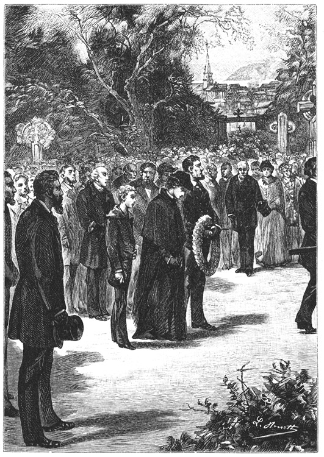Auf der andern Seite ging jener unbekannte junge Mann.
Aber ein solcher Gedanke kam Mrs. Branican nicht in den Sinn, denn schon während der Ueberfahrt nach Australien hatte sie eine neue Expedition ins Auge gefaßt und die Einzelheiten derselben durchdacht; es handelte sich nur darum, dieselbe zur Ausführung zu bringen.
Harry Felton starb gegen neun Uhr Abends. Noch einmal rief ihn Dolly bei seinem Namen ... Noch einmal hörte er sie ... Seine Augenlider erhoben sich und seinen Lippen entrang sich endlich der Name: »John ... John!«
Dann hob sich seine Brust – er hatte ausgerungen.
Als Mrs. Branican an diesem Abend das Hospiz verließ, wurde sie von einem Burschen angesprochen, der sie bei der Thür erwartete. Es war ein junger Matrose der Handelsmarine von dem Schiffe »Brisbane«, das den Postdienst an der Australischen Küste zwischen Sydney und Adelaïde besorgte.
»Mrs. Branican? sagte er mit gerührter Stimme.
– Was wünschen Sie, mein Kind? erwiderte Dolly.
– Ist Harry Felton gestorben?
– Ja, er ist todt.
– Und der Capitän John?
– Er lebt! ... er lebt!
– Ich danke, Mrs. Branican,« erwiderte der Knabe.
Dolly hatte kaum sein Gesicht ordentlich gesehen, und er entfernte sich, ohne zu sagen, wer er war, noch warum er diese Fragen gestellt hatte.
Am folgenden Tage fand das Begräbniß Harry Felton's statt, dem die Matrosen des Hafens und ein großer Theil der Bevölkerung von Sydney beiwohnte.
Mrs. Branican ging hinter dem Sarge, und neben ihr der treue Freund des Capitän John, ihr ergebener Gefährte.
Auf der anderen Seite ging jener unbekannte junge Mann, der dem Officier des »Franklin« ebenfalls die letzte Ehre erwies.
*